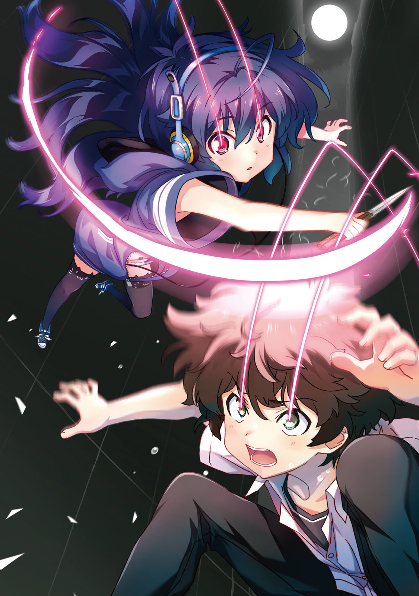

| SILENTWORLD | |
| ごぉ & 空中幼彩 | |
本作品の全部または一部を無断で複製、転載、配信、送信したり、ホームページ上に転載することを禁止します。また、本作品の内容を無断で改変、改ざん等を行うことも禁止します。
本作品購入時にご承諾いただいた規約により、有償・無償にかかわらず本作品を第三者に譲渡することはできません。
本作品を示すサムネイルなどのイメージ画像は、再ダウンロード時に予告なく変更される場合があります。
本作品は縦書きでレイアウトされています。
また、ご覧になるリーディングシステムにより、表示の差が認められることがあります。
「釣れる？」
それはこの島では近頃よく見られる光景だった。
埠頭に腰掛け無心に浮きを睨み続ける釣り人と、空っぽのバケツ。
釣り人は答える必要もないと判断したのか、それとも寡黙な質なのか、口を固く閉ざしたままだった。
しかし女の子は諦めない。昔から物怖じしない性格なのだ。
「この辺で男の子を見なかった？ 高校生の男の子」
ぴくり、竿先が揺れる。
「名前は、健人。羽鳥健人」
慌ててリールを回すが、どうやら魚には逃げられてしまったらしい。
「......もう、夏休みが終わっちゃう」
女の子は一人、寂しげに呟いたかと思うと立ち上がり、背中を見せる。しょげ返ったその背中は、ただでさえ小さな背丈をますます小さく見せていた。
間もなく本土への最終便が出る時間。きっと女の子はその船に乗って帰るつもりなのだろう。
「羽鳥健人、か」
一人になった釣り人は、懐かしいその名前を口の中で繰り返す。
羽鳥健人には秘密がある。
この世界には誰も知らない物語があってもいいと思う。だけどあるいは、この世界に属さない誰かになら彼の物語を語ってもいいかもしれない。
くいと、浮きが沈み込んだ。
それは今から三十五年前。長い永い夏が始まったばかりの日のことだった──。
「──だからね、健人君は早くわたしと付き合っちゃうべきだと思うの！」
「え？ ごめん、聞こえなかった」
「女の子の愛の告白を聞きそびれるかな普通!?」
よく晴れた日の夕暮れ時、羽鳥健人は映画館からの帰途にあった。とあるＳＦ映画の最新作がこの夏ついに公開されたのだ。第一作が日本で公開されたのは一九八五年だったそうなので、ちょうど今から三〇年前という計算になる。当然、健人が生まれる遥か以前の話である。
「やっぱ２は超えられなかったか。前半はなかなかよかったんだけどなー」
健人は常々、続編はオリジナルを超えられないと思っている。下手に続編を作るくらいならリメイクでもした方が遥かにマシだ。ってか完全新作に取り組め。
まぁ、この映画シリーズの２だけは唯一の例外で、だからこそ今回も期待をしてしまったわけだが。
「けどさ、２の矛盾を解決しようとした３は再評価されてもいいと思わないか？」
「......話逸らそうとしてるよね、明らかに」
隣で妙に近い距離感でぴったりとくっついて歩く女の子の名は、西園寺朝顔という。健人にとって、高校に上がって最初にできた友達だ。
「うーん、おかしいなぁ。わたしはこんなに健人君のこと好きなのになぁ」
そう、友達だ。間違いなく。......たぶん。
「もしかしてだけど、健人君はわたしのこと嫌い？」
「ええと......」健人は口ごもる。
いくらお互いに映画好きだからといって嫌いな相手と二人きりで見に行くわけがないし、こうして並んで街を歩きながら交わす雑談も楽しい。
ただ、どうしてだろう。異性として付き合うとなると、何か大切なモノを失ってしまうような......そんな気がして、健人はいつも軽口で誤魔化してしまうのだった。
「キャメロンと同じくらいには好きかな」
「うわぁ微妙！ せめてキューブリックくらいがよかったよー」
「じゃあスピルバーグで」
「いっ、いきなりプロポーズ!? わ、わたしまだ心の準備がっっ」
「いや、どんだけスピルバーグ買ってるんだ」
「世界で五本の指には入る名監督だよ」
「基準がわからん。じゃあ朝顔にとって、俺は映画監督だとどの辺りなのさ？」
「えっ？」
朝顔はぱちくり目を瞬かせて、
「................................................コ、コッポラ」
もじもじと身をよじりながらそう答えたのだった。
これが、羽鳥健人の日常だ。
取り立てて特筆すべきことのない──あるとすれば朝顔の存在くらいか──ごく普通の高校生。
だけど、羽鳥健人には秘密がある。
道行く人にはまるで理解の及ばない会話を繰り広げながら、辿り着いたのは朝顔の家の前。
「ありがと。何だかんだ言ってちゃんと家まで送ってくれるよね健人君は」
「まぁ......誘拐でもされたら寝覚めが悪いし」
朝顔の家は、『家』と表現するのはいささか違和感を禁じ得ないほどの広大な敷地にそびえ立つ洋館だ。何でも父親が大企業の社長らしく、どこぞの携帯キャリアを買収しただの新型ゲーム機を売り出しただの、ネットでもテレビでも西園寺の名前を見かけない日はない。要するに超が三回くらい付くほどのお金持ちなのだ、彼女は。
「それに送るって言っても、ほんの少し遠回りなだけだし」
「......だから好き」
「え？ ごめん、聞こえなかった」
「確実に聞こえてたよね、今は......」
しゅんと背中を丸める仕草を見せる朝顔から、お金持ちオーラを感じ取ることは健人には無理だった。だいたい、唯一の趣味がたまの映画館通いだし。
「でも、確かに最近物騒だもんね。連続通り魔事件とか何とか。確かサイレントキラー、だっけ」
「──サイレントキラー？」
「通り魔の通称。目にもとまらないスピードで襲われて、気付いたら金目の物を奪われてるんだって」
「............へぇ」
「あれ？ もしかして初耳？ もう二人も殺されてて、襲われた人はその何倍もいるらしいよ。テレビじゃ、顔を見た人間が殺されてるんじゃないかって」
「............」
「そんな顔しなくても大丈夫大丈夫。ほら、鞄もお財布も無事だし......あれ？」
朝顔は鞄の中に手を突っ込んだまま固まる。
「スマホ、ないかも」
まさか通り魔に──口にしかけた言葉を健人は飲み込む。そんなわけがない。
「最後に使ったのはいつなんだ？」
「確か、上映が始まる前に慌てて電源を切って......あ」
「映画館か。よし、ひとっ走り行って探してくる」
「わっ。いいよいいよ、今日はもう遅いし」
「気にするなって。朝顔は家で待ってろ。な？」
映画館の受付で尋ねてみたところ、残念ながら落とし物は届けられていないとのことだった。おそらくまだ座席の辺りに落ちているのだろうが、今は次の映画が上映中だというので仕方なく、
──目にもとまらないスピードで劇場内に侵入し、目的を達した。
数分後、健人はスマホを片手に夜の街を歩いていた。僅かな目眩を感じ額の汗を拭う。
羽鳥健人には秘密がある。それは、この世界の誰にも知られてはならない秘密の力だ。
きっとそのせいなのだろう、朝顔の好意に素直に応えられないのは。スマホを探すと言い出したのだって、映画の上映終了を待たなかったのだってそうだ。
自分には何か成すべきことがあるはずだ、人とは違う特別な人間なんだ──普通の高校生ならばとっくに忘れ去っているはずのそんな思い込みに、健人は未だに囚われていた。
全部この妙な力のせいだ。間違いなく。......たぶん。
「ったく。いい加減大人になれよな、俺」
高校一年生にしては背も小さいし、精神も未熟。もちろん自覚はある。だから健人の自己評価は極めて低い。一言で言うと、自分が嫌いなのだ。
しかし二度目のため息は、手の中のスマホから発せられた間の抜けた着信音に遮られた。
画面の表示は『自宅』。
もちろん健人の自宅ではない。つまり、
『あ、もしもし健人君？ よかったー、見付けてくれたんだ。だから好き。好き好き大好きタルコフスキー』
「......それ、俺じゃなかったらどん引きだぞ」
『え？ 弟にもよく言ってるけど？』
思わず、先ほど遮られたため息が出る。
どうにも朝顔は、健人を同級生というよりも弟扱いしている節がある。でなければ臆面もなく好きだの何だのと言ってくることに説明が付かない。
そういうことにしておこう、うん。
「とにかく待たせてごめん。すぐ戻るよ」
『ありがと。だから好──』「じゃ、また」
スマホを耳から離して通話を切ろうとした、その時だった。
正面の人混み。
女性の甲高い悲鳴。
それから──つむじ風のような身のこなしで路地裏に逃げ込む黒い人影。
実際にこの目で見るのは初めてだが、すぐに思い当たった。
「......サイレントキラー」
何も見なかった振りをすることだってできた。朝顔にスマホを届けて、風呂に入ってベッドで寝て今日のことは忘れる。それがごく一般的な行動で、健人がなりたいと願う大人の選択だ。
だというのに、
「......俺なら......」
健人には、子供じみた衝動を抑えることができなかった。
目を閉じ、精神を集中する。
すっと街の喧騒が遠のき、体が軽くなる感覚。
健人が自分自身の特殊能力に気付いたのは、三ヶ月ほど前。きっかけはちょっとした出来事だった。以来何度か試すうちに、ある程度は自由にコントロールできるようになった。使いこなすためではない。むしろその逆、使わないためだ。
この能力に小洒落た名前などは付けていないし、付ける気もない。どういう理屈で能力が発動するのかも、どうして自分だけが特別なのかもわからない。興味もない。
ただ、自分がこの能力を持つことにどんな意味があるのか、その答えを知りたかった。
でなければ健人は、いつまで経っても自分を好きになれないだろうから──。
目を開くと、世界は静止していた。いや、正確に言えば完全に静止しているわけではなく、ゆっくりと動き続けている。まるで、スローモーションのように。
そんな世界の中でただ一人、健人だけが悠々と歩き続けていた。赤い瞳を、揺らめかせながら。
時間の流れの制御？
そんなに大層なものじゃない。
──健人の能力は『自分自身の加速』だ。
「加速率一〇〇倍ってところか。ま、充分だな」
周囲の人間は、健人の異変に気付かない。ちょうど、映画のフィルムに一コマだけ別の映像を紛れ込ませてもほとんどの人間が気付かないように。
通常の映画は、秒間二十四コマの静止画でできている。そして今の健人には、一コマの間に四秒分の行動を取ることができる。同じ場所に留まり続けでもしない限り、常人の目に捉えることは不可能だ。仮に捉えられたとしても、それは一瞬の残像。まさか人間だとは思うまい。
「こっちだったな」
人影が逃げ込んだ路地裏に足を踏み入れる。走る必要はない。今の健人はただ歩くだけで音速を超えるのだ。
しかし気が付けば、健人の足は駆け始めていた。
予感があったのだ。目にもとまらないスピードで人を襲う通り魔、サイレントキラー。もしかしたらそいつは、自分が求める答えを知る存在なのではないか、という。
──いた。
目に飛び込んできたのは、十字路を右に折れようとする小さな人影。次の瞬間、それは建物の向こうに消えてしまう。
約二秒遅れて、健人が十字路を右に曲がる。が、そこに人影はなかった。
あり得ない。
健人にとっての二秒という時間は、常人にとっては映画の一コマ分にも満たない。瞬きさえできないはずだ。
そう、常人ならば。
「......やっぱ、そーゆーことか」健人は確信した。
ならば尚更、このまま逃げられるわけにはいかない。たとえ多少の無理をしてでも。
「やるしかないか、一二〇倍速」
ある程度は能力をコントロールできるとはいえ、限界はある。加速率を上げれば上げるほど持続時間は短くなるし、能力解除時の体への負担も大きくなる。現実的なのは精々一〇〇倍程度で、できればそれ以上は使いたくない。あくまで感覚的なものだが、一二〇倍から一三〇倍の間くらいに限界点があると健人は踏んでいる。ただ、これまでに成功したのは一二〇倍が最大だ。
「......はっ......」
短く息を吐き、意識を集中させる。ちょうど自転車のギアを切り替えるイメージだ。いきなり最高速に切り替えると負荷に耐えきれず失速してしまう。回転数を一定に保つように努めながら、一〇五倍、一一〇倍と、ゆっくりと、だけど着実にギアを上げていく。
そして──一二〇倍速に到達する。
慣れてしまえば決して難しい作業じゃない。
ただしこれまでの経験上、一二〇倍速を維持できるのは約三分間。
この三分で一気に勝負をかける......！
「うっ......げろげろげろげろ──」
三分後、健人は路地裏のゴミ箱に頭を突っ込んで嘔吐していた。
これが能力を使った反動。いや、代償と言ったところだろうか。ちなみに今はギアを半分ほどに落として六〇倍速程だ。一気に一倍速に戻すとそれはそれで反動が大きいのだ。
「まさか一二〇倍速でも追いつけないとは......」
ほんの一瞬通り魔の背中を捉えることが叶っただけで、追いつくどころか距離を縮めることさえできなかった。決して健人が絶望的な運動音痴というわけではない。つまり奴もまた一二〇倍前後の速度で行動していたということだ。
今にして思えば、遊ばれていたような気さえする。まるで子供の鬼ごっこのように。
「結局顔さえ見れなかったし。何者なんだあいつはげろげろげろ──」
「......大丈夫？」
「ああ、いつものことだ。数分もすれば収まる」
「そんなに待てない」
「何だ？ 俺に何か用──」顔を上げようとして、健人は耳を疑った。
どうして、会話が成立している？
六〇倍速の自分と。
ゆっくりと振り返るとそこには、
「そ、用。小指ちょうだい」
中学生くらいの女の子が真っ赤な目で健人を見上げていた。片手に、バタフライナイフを握り締めて。
「は......？」
呆気にとられたのは一瞬。刃がぎらりと翻ったのが見え反射的にギアを切り替える。
七〇倍──八〇倍──九〇倍。
咄嗟には九〇倍速までが限界だった。とはいえ、それでもさっきまでの一・五倍。後は全力で体の重心をずらし、鼻先を通過するナイフを避ける。
前髪が数本、九〇分の一の速度で宙を舞った。
少女の二つの瞳から立ち上る炎のような赤い軌跡。間違いない、能力発動中の現象だ。
「お前......俺と同じ......？」
「何でもいい。ちょうだい、小指」
まだ会話に付いてくる。どうやら健人と同じく加速率を変化させることができるらしい。
問題は──限界がどこまでなのか、だ。
「お、俺の指なんか食っても旨くないぞ」
「違う。欲しいのはタグ」
一〇〇倍──。
「タグ？ 何だそりゃ」
「とぼけないで」
一一〇倍──。
「そ、そうだ、まずは落ち着いて話し合おう。ほら、そこの喫茶店で飲み物でも飲みながら......」
「喉は渇いてない」
一二〇倍──。
「じ、実は俺さ、胃酸で喉が気持ち悪くて......」

「まずは仕事が先」
......何だこいつ。
健人にとってギアの切り替えは神経を使う作業だというのに、少女は表情一つ変えず平然と合わせてくる。しかも健人にはもはや後がない。
それを知ってか知らずか少女はナイフを構え直し、ひどく冷淡な声で、
「覚悟して──サイレントキラー」
と、わけのわからないことを言った。
「え？」
「え？」
まるで時間が止まったように、しばし顔を見合わせる二人。いや、今は二人以外の時間も一二〇分の一の速度でしか流れていないのだから、世界の全てが静止しているも同然だった。
「あ、う、えと......」少女が口を開く。「宮浦って街で最近、通り魔が暴れてるって」
「ああ、俺も聞いた。てか、さっきまでそいつを追い掛けてた」
「......あたしも」
「んで、逃げられた」
「............あたしも」
あれ？
どういうことだこれ？
「んー！ 何これおいしい！」
先月オープンしたての喫茶店〝竜宮〟で少女はかき氷に舌鼓を打っていた。先ほどまでとはうって変わり海のように青く澄んだ目を細め、ご満悦の様子だ。
一方の健人はというと──。
「うぐ......おぇ......」
必死に吐き気を堪えていた。
「......無理してブラックコーヒーなんて飲むから」
「違う！ これはさっき力を使った反動だ」
もっとも、無理してブラックを飲んでいるのは事実なのだが。だってＢＧＭにブリティッシュ・ロックが流れ、壁にはダーツボードまである小洒落た喫茶店で、甘い物を飲むわけにはいかないじゃないか。
「たった一二〇倍のオーバークロックで、ハングオーバー？」
オーバークロック？ ハングオーバー？
「てかお前は反動......ええと、ハングオーバーは来ないのか？」
「あたしは二〇〇倍までは平気」
「二〇〇倍!?」
「まだまだいける」
何でもないことのようにそう言い放って、ぱくり、大口でかき氷を口に運ぶ。
「うっ」
ただし、冷たいのには人並みに弱いらしい。
健人はスティックシュガーを二本投入して、話を戻すことにした。
「要するにお前はサイレントキラーを退治するためにこの街に来て、俺をサイレントキラーだと誤解したってわけだな？」
「......そうなる」少女は不満げに口をへの字にした。
彼女曰く、サイレントキラーは十代後半、つまりちょうど健人くらいの年頃なのだそうだ。言われてみれば健人が追い回していた人影も、最初に悲鳴を聞いた時に目にした人影よりも随分小柄──ちょうどこの子くらいだったような気がする。
つまるところ、お互いに相手のことをサイレントキラーだと勘違いしていたというわけだ。
「正確には、退治じゃなくてタグの回収だけど」
「そのタグってのは？」
「これ」
少女はぬっと左手の甲を差し出してくる。その小指の上に、シンプルな装飾のピンキーリングが銀色に光り輝いていた。
思わず、健人は自らの左手に視線を落とす。そこにもまた、そっくりな指輪がはまっていたことを思い出したのだ。
「どうして君がタグを持ってるの？」
「さぁ......物心ついた時にはもう付けてたような気はするんだが」
友達に馬鹿にされる度に外して捨てようとしたのだが、その度に妙な違和感に襲われて、結局捨てられずにいたのだ。そしていつしか、付けているのが当たり前になって存在すら忘れてしまっていた。
だけど今にして思えば指輪を外した時の感覚は、能力を使った後の反動によく似ていたような気がする。
「つまりこの指輪がタグ──加速能力の原因だったってわけか」
健人は少女に気付かれないように肩を落とした。特別なのは自分ではなく、この指輪だったのだ。
いや、だけど自分がこれを持っていることには、やはり何らかの意味があるはずだ。
「加速能力じゃなくて、オーバークロック。ちなみに漢字で書くと──」
少女は紙ナプキンにさらさらと文字を綴って見せてくる。
──『無尽の刹那』。
「中二病か!!」
「この真ん中の『の』を『ノ』にするかどうかで迷ってる」
「......すげぇどうでもいい」
「重要」
少女は口をへの字に曲げ、ナプキンを見つめ長考に入る。もしかしてかなり変な奴なのだろうか。
「ってことはさ、サイレントキラーって奴も同じような指輪を持ってるのか？」
「そ。そしてタグの回収があたしの仕事」少女は当然のように答え、「まさか同じ街にもう一人タグを持つ人間がいるとは思わなかったけど」と付け加えた。
つまりこの街には現在三人のタグ保有者が存在しているわけだ。そして健人にとって最も重要なのは、そのうちの一人──目の前の少女がタグの回収人、ということだ。
「......俺のも奪う気か？」
「悪用する気が無ければ回収するつもりはない。指令も受けてないし」
ふむ、と健人は顎に手を当てて考える。タグの出所やら指令やら、まだよくわからないことも多いが、一つ見えてきたことがある。それはずっと探していた、健人自身の成すべきことだ。
「乗りかかった船だ。俺にも手伝わせてくれ」
特別な力には責任が伴う。健人の責任とは、与えられた力を世のため人のために生かすことだ。
「そういうのいらない」少女は一刀両断した。
「ええ......!?」
「たった一二〇倍までしかオーバークロックできない人は足手まとい。あたし一人で充分」
「け、けどさ」「これ以上議論してる暇はない。早くタグを回収して帰らなきゃ」
ぱくぱくとかき氷を頰張る少女はどう見ても暇にしか見えなかったが、その言葉には一理ある。
確かに健人は力を持つことの意味を探してはいたが、その前に一介の高校生だ。家に帰れば両親が待っているし、学校には少し変わった奴だが朝顔という友達もいる。
健人にはこの子のように社会の枠組みから外れた生き方をする覚悟は、ない。
「そういうわけだから」少女はかき氷を綺麗に平らげて立ち上がった。「話は終わり。あたしのことは誰にも話さないで。夢だったと思って忘れて」
またこれか、健人は口の中で呟いた。
くだらない夢は捨てて早く大人になれと、皆が言う。健人自身も毎日のように自分にそう言い聞かせている。
だけどそれでも、一度手にした力は消えて無くなってはくれない。今もずっと、持て余し続けている。
このままこうして、一生自分を嫌い続けるしかないというのだろうか──。
「────あ」少女の足が止まっていた。
「何だ？ 話は終わりなんじゃなかったのか？」
「あ、う、えと......」少女は顔を俯けて、「......お金、ないんだった」
つい一時間ほど前に朝顔と並んで歩いた道を、今度は別の女の子と歩いていた。
「......一生の不覚」
「気にするなって。元々奢るつもりだったし」
「知らない人に奢られるわけにはいかない。いつか必ず返す」
「そうか、期待しとくよ」
だけど残念ながら、いつかなどと言って実際に約束を守った人を健人は知らない。あの朝顔ですら、先月立て替えたチケット代をまだ返してくれていないのだ。彼女のことだから、単に忘れているだけなのだろうが。
「もし返せなければ......」少女が呟く。「体で払う」
「いやいやいや、この世の終わりみたいな顔して何言ってんだ!?」
「大丈夫、サイレントキラーのタグを回収すればお小遣い貰えるから」
「どういう給与体系なんだお前んとこの組織は」
「部外者には話せない」
知らない人の次は部外者か──と健人は、本日何度か目のため息をついた。
もちろん、かき氷一杯で仲間面をするつもりはない。能力の行使には代償が必要なように、この先に踏み込むためには覚悟が必要なのだ。
「この街にはどのくらいいるつもりなんだ？」
「わからない。サイレントキラーはすばしっこいから」
「お前の二〇〇倍速よりもか？」
「それはない。あたしは最速。世界一」
その言葉が事実なのか、それとも少女なりの冗談だったのかは健人には判断が付かなかった。そもそも世界にこの能力を持つ人間がどれだけいるのかもわからないのだ。
「ただ、サイレントキラーは宮浦の地理に詳しい。路地裏に逃げ込まれたらあたしじゃそれ以上追えない」
「再開発でやたら複雑になったからな、この街。そうだ、じゃあさ──」
「足手まといはいらない」
「うぐ......先読みするなよ」
だけど、健人は少しずつだが理解しつつあった。
この少女は自分自身の力に絶対的な自信を持っているのだ。そして同時に、誇りも。だからこそ健人のようなただ力を持て余しているだけの人間に対して厳しいし、そんな人間との馴れ合いを拒むのだろう。
なら健人には、羨みこそすれ憤る理由はない。
「じゃあせめて......この街にいる間だけでいい、俺に力の使い方を教えてくれないか」
「どうして？」
少女の無垢な瞳に見つめられ、健人は答えに窮してしまう。だけど、今はそれをそのまま答えるのが正解なのだと、そう思った。
「......まだわからん」
間違いなく言えるのは、自分には大人になる必要があるということだけ。だけど今の健人は、まだその方法を知らないのだ。
それを知るのは、自分自身の限界を見極めてからだ。
「......時間ができた時でよければ」
「おおっ、教えてくれるのか!?」
「かき氷のお礼。体で払うって約束だし」
「ありがとう。お前いい奴だな」
「べ、別に............普通」
「とにかく、これからよろしく頼むよ」
「ただし教えるのは、使い方だけ」
少女はぽつり、呟くように付け加えた。
「──使い道は、自分で見付けて」
そうしてこの日──羽鳥健人の秘密は、少女との間の約束に変わったのだった。
朝顔への届け物を終えた健人は、電池が切れたように自室のベッドに倒れ込んだ。やはり一二〇倍速は体への負担が大きい、さすがに疲れた。
「......そういや名前を聞くの忘れてたな」
寝転がったまま、何気なくスマホのロックを解除する。少女と別れ際にメールアドレスの交換をしたのだ。
これでメアドを交換した女の子は朝顔に続いて二人目。ちょっと嬉しい。いやいや今はそんなことより、だ。アドレスを見れば名前がわかるかもしれない──。
〝dont-believe-the-truth@saionji-group.jpn.org〟
「真実を信じるな──って中二病か!!」
一人で突っ込んで再びベッドに顔を伏せる。
残念ながら名前に繫がりそうなヒントは皆無だった。というか本当に残念だ、このメアドは。
ちなみに健人は名前プラス誕生日という至ってオーソドックスなメアドである。恥ずかしいメアドは高校入学を機に捨て去ったのだ。
「......絵里花」耳元で声がした。
「ふぉっ!?」
顔を上げるとそこに、例の少女がいた。
「おっ、お前いつの間に!?」
口にした瞬間に愚問だと気付く。彼女にとって時間はあってないようなものなのだから。
「瀬良絵里花。あたしの名前」
「ええと、それを伝えるためにわざわざ追い掛けてきたのか？」
「それもあるけど」少女が口ごもった。「あ、う、えと......」
あ、この感じは──と健人は悟った。
「......お金なくて、ホテル追い出された」
「ってことはまさか」「泊めてほしい」
やっぱり。
「あのな。一階には両親もいるんだぞ、無茶言うな」
「あたしがバレるとでも？」
それもまた愚問だった。彼女ならば銀行の金庫室に忍び込んだところで誰にも気付かれないだろう。
「ってか、わざわざうちで肩身の狭い思いをしなくてもさ、その力を使えば寝床の確保くらいどうとでもなるんじゃないのか？」
「あ、う、えと......」
さて今度はどんな言葉が飛び出してくるのか──と健人は身構える。
「..................いいの、ここで」
「え？」
瀬良絵里花という名の少女は、それ以上は何も答えず、壁際で膝を抱えるようにして丸くなった。そして首に掛けていた携帯用のヘッドホンを装着し、顔を伏せる。
健人の耳に聞こえてきたのは、シャカシャカと掠れた聞き慣れない洋楽と、
「くー」
小さな寝息。
「自由人だな......」
だけど、もし。
そう、あくまで仮定の話だ。
健人が彼女と出会ったことで自分の成すべきことを見付けられる予感を覚えたように、もし、彼女もまた健人と出会ったことで何かを感じていたのだとしたら──。
「ま、今夜くらいはいいか」
自分の部屋で出会ったばかりの女の子が眠っている、という程度の非日常は受け入れてやろう、という気になったのだった。
「......瀬良絵里花、か」
瀬良絵里花には二つの秘密がある。
それは、羽鳥健人にだけは知られたくない秘密だ。
一つは、ひどく孤独であるということ。
そしてもう一つは──。
「いただきます」
一家三人が揃った食卓で、健人は律儀に両手を合わせる。共働きで家にいる時間もまちまちな父と母だが、朝食だけは家族全員で食べるのが羽鳥家の日常だ。ちなみに基本的には洋食で、皮をぱりぱりに焼いたウインナーが健人のお気に入りだ。
そんないつも通りの日常の中で、怪異は起きた。
「......は？」
目の前で、ウインナーが一本消失したのだ。
もちろんこんな芸当が可能なのは健人の知る限りあいつしかいない。
──オーバークロック、一〇〇倍。
「んー！ 焼きたておいしい！」
猫みたいに目を細めてウインナーを頰張っているのが羽鳥家の珍客、瀬良絵里花である。
「あ。おはよう健人」
「色々言いたいことはあるが......とりあえず物を食いながら歩き回るな」
「止まったら見えちゃうけど、いいの？」
絵里花はちょこまかと動き回りながらウインナーを貪る。大口を開けたままの母と目玉焼きに醬油を掛けている父の間で。
未だかつてこんなに奇妙な朝食の光景を健人は見たことがない。っていうか見たくもなかった。
「朝飯は後で残りを持って行ってやるって言ったろ？」
「どうせ食べるなら出来たてじゃないと。ご飯がかわいそう」
「......そうか、殊勝な心がけだな」
もう諦めよう、何もかも。健人の日常は昨日終わりを告げたのだ。
「けど絵里花、こんな風に人前で会話してても大丈夫なのか？」
目というものは案外適当にできている。加速状態で移動を続けていれば、まず姿を捉えられることはない。だけど、声はそうはいかないはずだ。
「平気。一〇〇倍に加速すれば、周波数は人間の可聴域を超えるから」
「周波数？」
「音は波で、波には空間軸で規定される振幅と、時間軸で規定される周波数がある。今のあたしたちが発した声は時間軸方向に圧縮されるから周波数だけが一〇〇倍になって人間の耳が聞き取れる周波数の上限である二〇kHzよりも──」
「ええと、もう少し簡単に説明してくれると助かるんだが」
「カセットテープを早送りしたら声が甲高くなるあれ」
「古い例えだな！ わかりやすいけど！」
とはいえ、いつまでも超音波でお喋りを繰り広げているわけにはいかない。健人には差し迫った問題があるのだ。
──オーバークロック、解除。
「......おぇ......っ」
ハングだ。朝っぱらからいきなり一〇〇倍速はちと重い。
「あら、どうしたの？」と、上品な顔に戻った母。
「顔色が悪いぞ、健人」と、醬油を掛け終えた父。
そして絵里花の姿は、健人の目にはもう映らない。
羽鳥家のいつもの朝だった。
「あっ、健人君だ！」
通学路で穏やかに微笑む朝顔の顔を見た瞬間、健人は妙にほっこりとした気持ちになった。
ちなみに、絵里花は仕事があると言って朝食後早々に羽鳥家から姿を消した。しばらくは平穏な日常を送れるだろう。
「聞いて聞いて。昨日の映画、やっぱり続編の予定があるんだって。大人の事情で仕方ないのはわかるけど、また成績が悪くて打ち切りになったりしたら嫌だなぁ──って、どうしたのニヤケちゃって？」
「ああいや、何かいいなと思ってさ、こういうの」
「あれあれ？ やっとわたしと付き合う気になってきたのかな？」
「いや、それはない」
「......いいもーん、知ってたもーん」
わざとらしく口を尖らせ目を逸らす朝顔に、健人はますますその相好を崩す。つり目と跳ねっ返りの前髪のせいで他人の目にはニヒルな笑いに映ってしまうのが玉に瑕だが。
もっとも、そんなことは気にしないのが朝顔という女の子だ。
「昨日はありがとね。映画館までの往復大変だったでしょ」
「いいって、あれくらいなんてことないさ」
実際、その数倍は走り回ったし。
夜の街での鬼ごっこ、喫茶店での対話、羽鳥家の占拠──思い返してもため息が出る。
まぁいい、今はつかの間の日常を満喫するとしよう。
「それで」朝顔が微笑む。「昨日の女の子、誰？」
「............え？」
「電話」
「......電話？」じわり、冷や汗が浮かんだ。
「もしかして気付いてなかった？ あの後、ずっと繫がりっぱなしだったんだけど」
「......あの後？」たらり、冷や汗が流れた。
そういえばサイレントキラーと遭遇した時、健人は朝顔のスマホで通話中だった。
通話を切った記憶は──ない。
「それで」朝顔が微笑む。「誰？」
羽鳥健人には秘密がある。
だけどそれも、今は昔。
健人の耳には、日常が今度こそ木っ端微塵に崩れ去る音が聞こえていた。
［To be continued to #2］
西園寺朝顔に秘密はない。
人一倍寝起きが悪いことや念入りに髪をセットしないとすぐにぼさぼさになってしまうことは一応秘密ではあるが、どちらかというとそれらは悩みの類いだし、実は留年しているだとか隠れて喫煙をしているなんて事実ももちろんない。ごくごく普通の高校一年生だ。
思ったことはすぐに口に出す質であるし、誰に対しても態度を変えることなく分け隔てなく接する。そもそも秘密を持てない性分なのだ。
だからこそ朝顔は秘密を持たれることが苦手だった。
「き、昨日の女の子って何のことだ朝顔？」
「だから、健人君が映画の後で会ってた相手だよ」
それは概ねいつもの登校中の光景だった。目覚まし時計を六個ほど使って何とか夢の世界から抜け出し、後ろ髪のハネを気にしながら通学路に健人が現れるのを待ち、学校までの短い時間を一緒に過ごす──鈍感な健人は気付いていないが、朝顔にとっては特別な努力によって実現するいつもの光景だ。
いつもと違うのは、健人がだらだらと冷や汗をかいていることだった。
「ええと......そうそう、ちょっと探しものを手伝ってたんだ。何か財布なくしたって女の子がいてさ」
「なーんだ」朝顔はにこりと笑顔を作った。「あっ、ねぇねぇそんなことよりだよっ──」
健人が噓をついているのは明らかだったが、朝顔は話題を変えることにした。秘密にしなければいけない何かがあることがわかってしまったから。
「健人君はバーホーヘンの映画って何か見た？ わたし、ちょっと興味出てきちゃって」
「へ？ 俺は好きな作品が多いけど、結構どぎつい表現が多いから朝顔には合わないんじゃないかな」
健人のどこかほっとしたような顔に、ちくり、朝顔の胸が痛んだのだった。
こうして朝顔の一日が始まった。
朝顔にとって、最も長い一日が。
「はぁー......」
羽鳥健人は目の前の問題用紙に向かってため息をついていた。
一時間目は物理の抜き打ち小テスト。新任の田沼先生はその整った容貌と軽快な雑談で既婚者であるにも関わらず女子に人気だが、こうして唐突にテストを課してくるので油断のならない相手である。
残り時間はあと三分。しかし健人の答案用紙は未だ真っ白なままだった。期末試験も終わった夏休み直前の小テストということもあってどの生徒も流しモードだったが、健人の答案が白紙なのには別の理由がある。今はもっと目の前の問題で頭がいっぱいだったのだ。
言うまでもなく、朝顔である。
健人は一年Ａ組で、朝顔はＢ組。今日は合同授業もないし、しばらく顔を合わせることはないだろうが、だからといって安心してはいられない。何故か下校時に鉢合わせることが多いのだ。
別に昨夜、ここのところ世間を騒がしている通り魔・サイレントキラーと遭遇しただとか、行きずりの少女となし崩し的に同居することになっただとかはまだいい。だけど、芋づる式に例の秘密までバレてしまってはたまらない。何故なら健人にとって朝顔は平穏な学校生活の象徴なのだから。いやあるいは、朝顔なら自分の秘密を受け入れてくれるだろうか......？
「タイムアップだ、みんな鉛筆を置けー。おっと、言い忘れてたが期末テストで赤点を免れた奴も今回の点数次第で放課後に補習を受けてもらうからなー」
田沼の声とクラスメートたちの断末魔に我に返り、慌てて答案用紙に目を落とすと、
「......は？」
──そこは小綺麗な字でびっしり埋まっていた。
もちろん、考え事をしながら着々と問題を解いていたわけではない。残念ながら健人の頭の出来はそこまで良くはないし、どちらかというと平均以下だ。だいたい、筆跡が明らかに健人のものとは違う。
となると──あいつだ。
「............」
目を閉じ、精神を集中する。すっとクラスメートたちの阿鼻叫喚が遠のき、体が軽くなる。
──オーバークロック、一〇〇倍。
再び目を開くと健人の隣で、
「あ、う、えと......見つかっちゃった」
中学生くらいの少女がきょどきょどと視線を彷徨わせていた。行きずり少女・瀬良絵里花である。
「見つかっちゃった、じゃねぇえー!!」
健人の雄叫びはクラスメートの耳には届かない。頭を抱える者、往生際悪く鉛筆を握り続ける者、誰もが一様にその動きを止めていた。いや、正確に言えば目では捉えられないほどゆっくりとした速度ではあるが動き続けている。まるでハイスピードカメラで撮影した映像のように。
オーバークロック。それが健人の秘密──いや、今となっては健人と絵里花、二人の秘密である。
現在、二人の精神と肉体は常人の一〇〇倍の速度で活動している。二人が会話しているこの時間も、他人にしてみればほんの刹那の出来事。高校の教室に珍妙な出で立ちの幼い女の子が紛れ込んでいても誰も気付けない、というわけだ。
もっとも、長居されればその限りではないが。
「帰れっ！ 俺の平穏な学校生活のために！」
「そんな」絵里花は口をへの字にした。「あたしはただ、健人を助けてあげようと思って......」
つまり絵里花は、健人に代わって答案用紙に記入したというわけだ。教師がタイムアップを告げた、その瞬間に。
それを可能にするのが、オーバークロックという名の加速能力である。ちなみに絵里花曰く、能力の発生源は二人が共に小指に付けているタグという名の指輪なのだそうだ。
「しかし、この力にこんな使い道が......」
「健人は自分の力の限界をもっと知るべき。このあたしみたいに」
「カンニングなんてみみっちいことに使っておいて胸を張るな！」
「えうっ!?」
まぁ、テストに集中できずにいたのは絵里花の件に頭を悩ませていたせいでもあるし、これで貸し借りなしということにしておこう。いくら健人でもいつも通りにやっていれば補習送りはない。......たぶん。
「ってかお前、どうしてここにいるんだ？」
「話すと長くなるし、そろそろ周りの人間に気付かれる頃。場所を変えないと」
「げっ、そりゃマズい！」健人は慌てて立ち上がった。
こういう時はさすがに頼りになる。絵里花は能力の使い方に関しては健人よりも遥かに詳しいのだ。
ただし、
「ん？ けどさ、それだと俺が教室から忽然と姿を消したみたいに見えるんじゃないか？」
「────あ」
健人よりも遥かに間が抜けているのが難点だ。
「よしわかった、とりあえず授業が終わるまでどっか行ってろ。くれぐれも勝手な行動はするなよ」
「なんか」絵里花がぷくっと頰を膨らませた。「扱いがぞんざい」
「お前は自分の力の非凡さをもうちょっと自覚してくれ、頼むから」
「知ってる。あたしは凄い。宇宙一」
「そうじゃなくて......いやもう何でもいい、とにかく俺は授業に戻るからな」
改めて椅子に腰を下ろし、できる限りさっきと同じ姿勢を取る。少しでも違っていたら、クラスメートたちの目には健人が一瞬で姿勢を変えたように見えてしまうからだ。幸い健人の席は最後列なので見咎められることはないだろうが、念には念を入れた方がいい。
やれやれ、全く難儀な能力だ。
「あ、あの、健」──オーバークロック、解除。
絵里花の声と姿が搔き消え、代わりに教室に喧騒が戻ってくる。どうやら誰にも気付かれずに済んだらしい。
ほっと胸をなで下ろし答案用紙に目を戻すと、
『ケントのバカ！』
紙いっぱいにそんな文字が書き殴られていた。
「羽鳥ー、もう諦めろー」田沼の声が死刑宣告のように響き渡る。
いっそ誰か気付いてくれ──健人は心の中でそう叫んだのだった。
「何してくれるんだお前は!!」
「......自業自得」
健人と絵里花は肩を並べ、休憩時間中の生徒で賑わう廊下を歩いていた。ちなみに授業と授業の間の休憩時間は一〇分間だが、今の二人にとっては一〇〇〇分間だ。
「それより、お腹空いた。健人、何か買ってきて」
「自由人だな！ ってか一時間前に食べたばっかりだろ、俺の分のウインナーまで」
しかも居候の分際でお代わりの要求までしてくるという傍若無人っぷりである。全くどこまで大飯食らいなのか。
「やっぱり健人は何もわかってない」
「え？」
「健人にとっては一時間前でも、あたしにとっては四時間前」
思わず、歩みが止まる。
どうして忘れていたのか、こと彼女に関しては時間など意味を持たないということを。
「お前」健人は声色を低くした。「何をしてた？」
どうやら少しばかり彼女に対して気を許しすぎていたようだ。彼女がその気になれば、文字通り瞬く間に人を殺すことさえ可能なのだ。そう、サイレントキラーのように。
そうでなくても彼女は今朝だけで三時間も能力を行使している。それを看過できるほど、健人は瀬良絵里花という少女とは親しくない。
何せ、昨日知り合ったばかりなのだ。
「あ、う、えと......」絵里花は逃げるように視線を逸らした。「......漫画、読んでた」
「ま、漫画？」
「......本屋さんに気になる漫画が売ってて......でもお金持ってなくて......つい......」
「みみっちいな!!」
「ちょっと立ち読みしてただけ。誰でもする」
「いやいやいや、三時間も居座っておいて何言ってんだ!?」
「大丈夫。『立ち読みは五分まで』って張り紙は守ったから」
「......そうか、偉いな」
だんだん真面目に議論するのが馬鹿らしくなってきた。張り紙に『オーバークロック禁止』と書かなかった書店の店主が悪いということにしておこう、うん。
「お前が腹を減らしてる理由はよくわかった。ほら、これで後で何か買ってこい」
体育の後でジュースでも飲もうかと思って取っておいた小銭を渡して、健人は本題に戻ることにした。
「で、そろそろ学校に来た理由を教えてくれ」
「その前に健人、オーバークロックはあと何分持つ？」
「ええと、さっきからもう五分は使ってるから──」
能力の連続使用にはそれなりに集中力が必要だ。その上、加速率を上げるにつれ持続時間は短くなる。これまでの経験上、一〇〇倍速なら二〇分くらいだろう。もちろん実時間ではなく体感時間で二〇分だ。
「たぶん、もってあと一五分くらいだな」
「じゃ、手短に話す」
廊下を歩く絵里花の足が、心持ち速くなった。
健人と違い人前で能力を使うことに慣れているのだろう、動きを止めた生徒たちの合間を涼しい顔で進んでいく。
「──あたしのターゲットは、この学校に潜んでる可能性が高い」
「そ、それって例の通り魔がってことか!?」
「サイレントキラーは各地を転々としながら、行く先々の高校で生徒に紛れて生活してるらしい」
どうやって？
のど元まで出かけたその言葉を、健人は飲み込んだ。オーバークロックを使えば書類の偽造など造作もないことはさっき絵里花が実践してみせた通りだ。
絵里花によるとサイレントキラーは十代後半。なるほど、身分をいくらでも詐称できるのなら同年代の人間がひしめく高校に身を潜めるのが合理的だ。
「この高校だって根拠は？」
「健人」絵里花は端的にそう答えた。
「俺？」
「タグには共鳴して惹かれ合う性質がある。使用者が無意識のうちに」
「なるほど、俺とお前が惹かれ合ったようにか」
「べ......」絵里花は顔を背けた。「......別に、惹かれ合ってはいない」
どうやら妙な意味に取られてしまったらしい。
「つ、つまりタグからは使用者を加速させる電磁波みたいな何かが出てて、あ、う、えと、その副作用でお互いに惹かれ合って、えう、じゃなくて引き合って、だ、だから──」
何だか見てて可哀想になってきた。
「詳しい説明はいいからひとまず落ち着け」
「......う、うん」
絵里花はすーはーと深呼吸を繰り返してから仕切り直す。
「怪しいのは、最近転校してきた人間」
「外見的な特徴は？」
「前の町で何度かやりあったけど、奴はいつも顔を隠してた」
つまり転校生の線から当たるしかないということか。
「そうだな......少なくとも一年生にはいないな。上級生だとわからないけど」
「そこまで絞り込めれば、あとは聞き込みをして回れば充分。次の問題は──」
オーバークロックは確かに強力な能力だが、同時に欠点もある。今こうして健人と絵里花が話しているのが周りの生徒には認識できないように、周りの声もオーバークロック中の二人の耳には届かない。会話の盗み聞きのようなことには向かないのだ。
「なるほど。部外者のお前に校内での聞き込みは無理。そこで俺の出番というわけだな。オーケー任せてくれ」
「任せられない」絵里花は一刀両断した。
「ええ......!?」
「相手はオーバークロッカー。ろくに力を使いこなせない健人じゃ返り討ちに遭うのがオチ」
「そ、そんなこと」「奴の最高加速率は一八〇倍から一九〇倍。もちろんあたしはそれ以上。健人は？」
「............一二〇倍」
正直悔しいが、今の健人と絵里花とでは力の差は歴然。だからこそ健人は昨夜、絵里花に力の使い方の指南を願い出たのだ。
「けどさ、そもそもサイレントキラーを見付けられなきゃどうしようもないだろ？」
「大丈夫。あたしに考えがある」
自信満々に答えて絵里花が足を止めたのは──女子更衣室の扉の前だった。
「............？」
「......はぁあ〜」
朝顔はブラウスのボタンを外しながら盛大なため息をついていた。プールの授業が嫌なわけではないし、むしろ七月の熱気でじっとりと浮かんだ汗を洗い流せるという意味では好きな方だ。もっとも、少々鈍くさいところのある朝顔にとって運動は苦手な物の一つではあるのだが。
「どうかしましたか朝顔さん？ 先ほどから手が止まっているようですが」
早くも水着に着替えを終え朝顔に声を掛けてきたのは、同級生の山吹胡桃。部活が同じということもあり、朝顔が気兼ねなく話せる友達の一人である。
「あ、もしや私に着替えをお手伝いしてほしいとか？」
ただし、彼女の性格は若干苦手だ。
「いっ、いいよいいよ胡桃ちゃん。っていうか目がマジだよぉ〜」
「はい、私マジですから。あ、これはまた可愛らしいブラですねー」
あっという間に背中に手を回され、ぷちん、ホックを外される。
「ひ──────」
抵抗らしい抵抗も見せず、朝顔は脱がされるがままにされる。
朝顔も実は満更ではない──というわけではもちろんない。突然の出来事に対応できず思考が一時停止するタイプなのだ。
「だ、大丈夫だから、一人でできるから〜っ」
「そうご遠慮なさらず。私に全てお任せください。さ、体の力を抜いてリラックス、リラッ──」
──オーバークロック、一二〇倍。
「待て待て待て絵里花っ！ 考え直せってば！」
全速力で絵里花を追って扉に飛び込んだ健人の目の前に広がっていたのは、
「ふおぉっ!?」
乙女の花園だった。
着替えを終えた水着姿の女子、今まさに着替え中の半裸の女子、これから着替えんとしている制服姿の女子──同学年の異性たちの色とりどりの秘密がそこにあった。
「見てないっ！ 俺は見てないからなっ！」
誰に言い訳するとでもなくそう叫んで、健人は両目を固くつぶる。が、右の鼻穴からたらりと垂れた鼻血が真実を如実に物語っていた。
「制服を着て生徒の振りをすれば聞き込みも自由自在。さすがあたし。大天才」
「どこがだ！ こんなのバレたら退学モノだぞ！」
「あたし、生徒じゃないけど」
......そうだった。
「じゃなくて、俺を巻き込むなって話だよ!?」
「付いてきてなんて言ってないけど」
......そうだった。
「とにかくやめとけってば。こんなことばっかしてちゃお前の追ってるサイレントキラーと同じ穴の狢だぞ」
健人はこれまで、他人に迷惑の掛かるような力の使い方は極力避けてきた。力の存在がバレて面倒ごとに巻き込まれるのを避けるためでもあるが、大前提として健人の興味は力を使うことそれ自体ではなく自分が力を持つ意味を知ることにあったからだ。
この力は、私欲を満たすためにあるわけではない。健人はそう考えている。
「だからさ絵里花、もっと別のやり方で......」
「んー、これはちょっと大きいかも」
「聞け!!」
目を閉じたままではちょこまかと動き回る絵里花を捕らえられない。が、かといって目を開けるわけにもいかず、健人にできたのは闇雲に手を伸ばすことだけだった。
「おーい絵里花!? どこだ絵里花!?」
と、指先に感触があった。
むにょん、と。
「え？」健人は思わず目を開いた。開いてしまった。
......右の手の平が、女子の乳房の上にあった。
雑誌のグラビアで目にするものよりは控えめなサイズではあるが、高校一年生という年頃を考えると平均的と言える部類であろう。初々しい張りと健康的な弾力性を兼ね備えたそれは、充分な将来性を感じさせる。何よりこの温かさだ。柔肌を通して直接伝わってくる体温に、それが雑誌の印刷ではなく、ましてや夢や幻でもなく、今そこに存在している現実なのだと思い知らされ──と、脳内でそこまで情景描写をしたところで、健人は我に返り慌てて手を離した。件の柔肌の持ち主に気付いたからだ。
「ああああああ朝顔ッ!?」
「健人、うるさい」
いつの間にか着替えを終えた絵里花が、口を尖らせていた。ぶかぶかの制服はお世辞にも似合っていない。
「わ、悪い......」誰に言うとでもなく健人は謝った。
だ......大丈夫だ、落ち着け俺。触れていた時間は体感時間で一秒にも満たない。実時間にして一〇ミリ秒以下。普通の人間ならどんなに神経を研ぎ澄ませていても認識できないほどの短時間だ。ましてや相手はあの朝顔だ、いっそ一分間くらい揉みしだいても気付きはしないだろう。いやいや、さすがにそれはないか？ 何でもいい、ひとまずこの右手はしばらく洗わずに──と、自分の手の平と朝顔の乳房に交互に視線を送りながらそこまで考察したところで、健人は再び我に返り慌てて背を向けた。当然、そこにも別の着替え中の女子がいる。
「何してるの健人？ 行こ、もう用は済んだから」
「そ、そうか助かった......」
ほっと一息つき気を緩めたのが、命取りだった。
「......ぐッ!?」
ずんと体が重くなり、周りの女子たちの動きが目に見えて速くなる。
油断していた。ただでさえ一二〇倍速は健人にとって負担が大きいのだ。その上朝顔の一件ですっかり心を搔き乱された健人は、想像以上に早く能力使用の限界を迎えていたようだ。
一〇〇倍──九〇倍──八〇倍──。
みるみるうちに加速率が低下していく。耳に周囲の喧騒が戻ってくると同時に、頭を鈍器で殴られたような不快感に襲われ足をもつれさせ床に倒れ込む。
能力の反動、ハングオーバーだ。
マズい、このままじゃ女子たちに気付かれて──!!
「──健人」
耳元で、優しい声。
次の瞬間、健人は再び静寂に包まれていた。
「......え？」
動き始めたはずの周囲の光景が静止していた。
だけど、何かが違う。
「......これ、って......」
それは、これまでおよそ感じたことのない感覚だった。限りなく無音に近い、静謐な空間。何者の存在も許さない、浄化された聖域。
そんな世界に、健人と絵里花の二人はいた。
「これはタグのもう一つの能力、クロスオーバー。直接触れている相手をオーバークロックさせることができる」
「触れている、相手？」
絵里花の視線を追って、自らの体を見遣る。
健人の右手と絵里花の左手はしっかりと結ばれており、そこから確かな温かさが伝えられていた。
「立てる？」
「あ、ああ......ありがとう」
絵里花に手を引かれるようにして立ち上がる。さっきまでの目眩や吐き気は微塵も感じられなかった。
「ちなみに今は二〇〇倍速──健人の知らない世界」
一つ、大きく深呼吸をしてみる。空気が澄み切っていた。七月だというのに、まるで冬の明け方のよう。それに何より、静かだ。
耳が、痛いほどに。
「これがあたしの世界」
きゅっと、絵里花が手に力を込める。
それが絵里花の何らかの訴えのように感じられて、健人は胸を締め付けられる錯覚を得た。
だから、ただ無言で、その手を握り返したのだった。
「あ......」絵里花が小さく声を漏らした。
「どうした？ また何か失敗か？」
「あ、う、えと......」絵里花の手に汗が浮かんだ。「......そ、そう」
「ってお前、汗びっしょりだぞ。大丈夫か？」
「えと......さすがのあたしでも二人同時に二〇〇倍速はちょっと無謀だった、かも」
「まさか、ハングか？」
その症状は健人もいやというほど知っている。強烈な不快感。具体的には頭痛と目眩と──吐き気だ。
「......も、もう喉まで......うっぷ......」
「わー、待て待てっ、ちょっと堪えてろよ！」
絵里花の体を抱え上げ、廊下に飛び出す。
周囲に生徒の姿がないのが唯一の救いだった。
「......おーばーくろっく......かいじょ......ぅぐ──」
「ぎゃ!!」
健人の悲鳴と聞くに堪えない濁音が廊下の片隅に響き渡ったのは、二時間目が始まる四分ほど前の出来事だった。
「──ックスですよ朝顔さん。って、どうされました？」
「......あれ......？」
朝顔は狐につままれたような面持ちで自分の体を見下ろす。
今、何かが起きたような気がするのだが──。
「っていつの間にか裸にされてるっ!?」
「いやー、相変わらず朝顔さんは無駄のない素敵な体をされてますね。是非是非、モデルをお願いしたいです。ヌードの」
「そ、その話は前も断ったよ〜」
これ以上体を弄ばれてはたまらないとばかりに、朝顔は大慌てで水着を着込む。胸がどきどきしっぱなしだった。
「そ、そういえば胡桃ちゃんはコンクールに出す写真決まったの？ 明日だよね、締め切り」
「はい。先週、ヒマワリ畑の写真を撮ってきました。宮浦唯一の名物ですし、何より夏ですし。あ、もちろん朝顔も非常に捨てがたかったんですけど」
「......もちろん花の方だよね？」
「さぁて。ちなみに朝顔さんはどんな写真を？」
「ええと」朝顔は視線を落とした。「......未定、かな」
──全国高校生写真展・夏の部。
二人が所属する写真部では、毎年そのコンクールに応募することが恒例となっている。強制というわけではないらしいが、新入部員である一年生に拒否権はないも同然だ。
何も朝顔とて、今日までノープランだったわけではない。昨日健人を映画に誘って距離を縮めておいて、今朝は話の流れでモデルを頼もうと計画していたのだ。
健人は自分の童顔を気にしている節があるが、朝顔は彼のいかにも思春期のただ中にあるような顔つきが好きだ。ころころした猫みたいな笑顔も、時折ふっと見せる憂い顔も、照れた顔も、困惑した顔も、全てが大好きなのだ。瞬間瞬間を切り取ってフィルムに焼き付けていつまでも眺めてたいと、そう思うほどに。
だけど朝顔のささやかな計画は、暗礁に乗り上げたままだった。健人が昨夜、何か秘密を抱え込んだことによって。
いや、少し違う。おそらく、自分が映画館にスマホを忘れたりしなければこんなことにはならなかったはずなのだ。あるいは今朝、妙なことを言い出さなければ。なのにいつも大事な場面で間違えてしまう──自分はとにかく要領が悪いのだ。
「でも......うん、頑張る」
ここで退いたら終わりだと、朝顔は感じていた。今こそが、西園寺朝顔のこれまで十五年間の人生の中で最大の山場なのだと。
もしかしたら山頂への道は断崖絶壁で途切れているのかもしれない。それでも朝顔は、構わない。
「やっぱり私は、朝顔さんの写真にすればよかったかもしれませんね」
にっこり笑って、胡桃は朝顔の背中を押したのだった。
午前中の授業が、健人にはまるで何十時間にも感じられた。もちろんオーバークロックしていたわけではない。絵里花が痺れを切らしてまた何かやらかしやしないかと気が気ではなかったのだ。一応本人は昼休みまで姿を隠すと言っていたが、先ほどの一件を考えると正直不安しかない。
そんなこんなで、ようやく迎えた昼休み。
早速絵里花との待ち合わせ場所である資料室へと赴いてみたのだが──そこはもぬけの殻だった。
「......嫌な予感がする」
いくら制服を着ているとはいえ絵里花は部外者であるし、何よりあの自由極まりない性格だ。放っておけばヘマをしでかすに決まってる。
「嫌な予感？」と、背後からの声。
「何だいたのか絵里」健人は振り返った。「かぁあッ!?」
思わず飛び上がってしまったのも無理はない。声の主は絵里花ではなかっただけではなく、よりにもよって先ほど健人が図らずも生乳を堪能してしまった人物──西園寺朝顔その人だったのだから。
朝顔はいつになく慎重に言葉を選んでいた。資料室に健人と二人きり──こんなチャンスは滅多にない。
「えっと......驚かせちゃってごめんね。健人君がこの部屋に入っていくのが見えちゃって」
「い、いやいいんだ。それより俺に何か用か？」
「あのね、実は......お願いしたいことがあって」
「もしかして例のコンクール関係か？」
朝顔はぱぁっと顔を明るくした。以前コンクールの題材に困っているという愚痴をこぼしたことを覚えていてくれたのだ。
「う、うん......そんなところ、かな」
「俺にできることなら何でも手伝うぞ。って言っても俺、写真のことは何もわからないんだけどいいのか？」
「もちろんだよっ。だから健人君、大好き！」
「それで、題材は決まったのか？」
次の言葉が、正念場だった。
朝顔にとって好きな人の写真を撮るというのは、映画に誘うよりも勇気の必要な行動で、愛を口にするよりも愛を表現する行為なのだ。
「あのね。題材は──......」
その瞬間、朝顔の頭はこれまでにないくらい巡り、今日までの自分の人生を思い起こしていた。
西園寺という名の特殊な家に、朝顔は生まれた。西園寺グループと言えば日本ではその名を知らぬ者はいないほどの大企業、朝顔の生まれを羨まない者はいなかった。
しかし朝顔は、自分は不幸な星の下に生まれたと信じ続けていた。望まずとも全てが手に入り、願わずとも全てが叶う人生。それは言い換えれば本当の望みと願いを奪われ、偽りの望みと願いを押しつけられる人生だった。長女ということで誰もに甘やかされ、長男ではないということで誰にも期待されず、やがて朝顔は西園寺という極めて特殊な家でごくごく平凡な女の子へと成長していった。
この世界はめまぐるしく回り続けている、自分だけを置き去りにして──幼い日の彼女はそう結論付けた。
高校入学を機に写真に手を出したのは、映画好きが高じて映像の世界に興味を持ったに過ぎない。その、つもりだった。
だけどあるいは、こんな世界への彼女なりの反逆だったのかもしれない。自分を置き去りにして回り続ける世界をほんの一瞬でも切り取ってやろう、という。
「......題材、は......」
気が付けば、朝顔はもうそれ以上言葉を紡げなくなってしまっていた。
朝顔は決して馬鹿な子ではない。とっくに──それこそ出会った瞬間から気付いているのだ、自分が健人の眼中にないことくらい。それでも彼の写真を撮りたいと望んだのは、自分を置き去りにして前に進んでいこうとしている健人の時間をほんの僅かでも自分のものにしたいという朝顔のエゴに過ぎない。
「ご、ごめんね、実はまだ題材は決まってな──」
じわりと目に浮かんだ涙を見られたくなくて、朝顔は顔を背けた。
そして、目にした。
「......あ......」
それは、資料室の片隅に放置されたままの古いパネルだった。一枚の写真を大きく引き伸ばしてタイトルを添えた、ただそれだけの。
「『みずがめ座流星群』......？」
星が、降り注いでいた。
空を埋め尽くさんばかりの、無数の星が。
「......っ」吐息が漏れた。
それはほんの一瞬を切り取った写真に過ぎないはずなのに、今にも流れ星が自分の目の前に迫って来るようだった。
耳が痛くなるほどの、静寂の中で。
「ああ。この部屋って昔は天文部の部室だったんだってさ。何年も前に廃部になったらしいけど......きっとその時の物だな」
健人はパネルを手に取り、裏を改める。
「『一九九九年八月一五日』──へぇ、凄い偶然だな」
「あ、八月一五日って......」
朝顔はその数字に覚えがあった。忘れるわけがない。大事な大事な健人のメアドにあった数字なのだから。
「そう──一六年前、俺が生まれた日に撮られた写真だ。その日は特に大きな流星群が観測されたって聞いてる。確か、磁気嵐の影響だとか何とか」
健人の解説を聞きながらも、朝顔は流星群に見入っていた。
写真は、瞬間瞬間を切り取るもの？
違う──この写真には全てが詰まっている。
過去も、未来も、全て。
「わたし......こんなの見たことない......」
「毎年夏になると来るらしいから、今夜にでも見られるんじゃないか？ まぁ、例年はこんなに派手じゃないらしいけどさ」
「そう、なんだ......」
もし一六年前のような特別な流星群が来たとしても、朝顔にはこのパネルみたいな写真は撮れないだろう。写真技術は素人に毛が生えた程度だし、天体に関する知識に至ってはまるでない。
だけど、それでも──。
「──決めた、コンクールの題材」
朝顔は初めて、前向きな気持ちでファインダーを覗ける気がした。
それから、その時こそ真っ直ぐに健人と向き合えるのではないかという予感も。
健人は朝顔が立ち去っていくのを見届けてから、人知れず安堵の声を漏らした。
「き、緊張したー......」
だけどその言葉は、どうやら独り言にはならなかったらしい。
「............長い」
突如目の前に現れたジト目の少女は、絵里花。
「待ちくたびれてお腹空いた」
「どんだけ食費掛かるんだお前は......っていたのかよ!!」
まぁ、もはや慣れつつあるわけだが。全く人間の適応力って奴は恐ろしい。
「で、いつからいたんだ？」
「最初から。健人と西園寺朝顔がいちゃいちゃしてる間もずっと」
「いちゃいちゃじゃなくて誤魔化してたんだよ。ほら、俺たちのことがバレたら後々面倒だろ」
「え？」絵里花は目を丸くした。
「......や、やめてくれよその顔。不安になるから」
「え？」絵里花は目を点にした。
「だ、だから何なんだよその顔は」
「西園寺朝顔はとっくに知ってるのかと思ってた」
「いや、俺からは話してないし、確かに今朝は危なかったけどちゃんと誤魔化せたし──」
「でも」絵里花は健人の言葉を遮った。「あの時、西園寺朝顔には健人の姿が見えてたはず」
......あの時？
「触れた人間をオーバークロックさせる能力、クロスオーバー。ちなみに直接触れ合ってさえいれば対象は無機物でも可能」
「ちょっと待てよ、それってつまり......」
健人が朝顔の体に直接触れた瞬間といえば──。
「そ。西園寺朝顔のおっぱいをもみもみしてた時」
「揉んではいないからな!?」
「......もみもみしてた。確実に」
「ま、まぁ何でもいいけど......よりによってあの時かよ」
途端に、朝顔が何を考えているのかわからなくなってしまった。何か頼み事があるようなことを言っていたような気がするが、まさかセクハラをネタに脅すつもりなのだろうか。いやもちろんそれも大問題だが、先ほどの件がバレているのだとしたら非常にマズい。朝顔は健人の数少ない友達なのだ。
「た、助けてくれ絵里花......」
「............知らない」絵里花は唇を尖らせ、ぷいとそっぽを向いた。「あたしはバレてない。職務規定には違反してない」
「俺はバレてもいいのか!?」
「今はサイレントキラー捜索が優先。健人のせいでだいぶ時間を無駄にした」
「くっ、この仕事人間め......！」
などと憎まれ口を叩きつつも健人は、資料室を後にする絵里花をそそくさと追い掛けるのだった。
まぁ朝顔のことだ、白昼夢だとでも思っているに違いない。大丈夫、大丈夫だ。......たぶん。
昼休みを利用して健人は絵里花と共に聞き込みをして回ることになった。
最初は、いくら制服を着ているとはいえこんな小さな少女が校内をうろちょろしていて怪しまれはしないのかと不安だったが、上級生からしてみれば下級生などは皆小さいものらしく、聞き込みは滞りなく進んでいった。
これまでの所、二年生は収穫なし。三年生もＤ組までは転校生はいなかった。残すところは三年Ｅ組のみ。
半ば諦めかけていたその時、
「転校生？ ああ、いるよ。ほら、あの人」
収穫、ありだった。
健人と絵里花は目を見合わせ、頷き合う。
「......健人」
「ああ、わかってる」
──オーバークロック、一〇〇倍。
次の瞬間、昼休みの喧騒は遠のき世界は二人だけのものへと変わる。
「油断しないで。もし相手がオーバークロッカーなら、こっちの気配を察知してくるから」
絵里花が小声で囁いてくる。
「気配を察知？」
「タグの共鳴の一種。加速率にもよるけど、だいたい半径三メートルから五メートル以内にオーバークロックしてる人間がいると感覚でわかる。健人もそのうち感じるようになるはず」
「そのうちって、具体的には？」
「健人が自分の力を受け入れた時」
めっちゃ精神論だった。いいのだろうかそれで。
「待てよ。じゃあ逆にお前も相手の気配を感じ取れるんじゃないのか？」
「相手がぎりぎりまでオーバークロックせずに待ち構えてる場合は察知できない」
「安易に近づくのは命取り、ってことか」
「そ。まずは距離を保ったまま、タグを付けているかどうか目視で確認」
「もし足の指とかに付けてたら？」
「左手だけ確かめればいい。心臓からの距離がそれ以上離れた場所にタグを付けてもオーバークロックは発動しない」
「なるほど、了解だ」
「いざという時はあたしの体に触れて。クロスオーバーで二〇〇倍速まで引き上げるから」
「俺のことは気にするな。これ以上お前の足を引っ張りたくはないからな」
「あたしも足は困る。手を摑んで」
「......こんな時に冗談を言えるとは余裕だな」
「え？」
「って、冗談じゃないのかよ」
「あたしはいつも真剣。仕事一筋」
「俺が悪かったよ......で、どいつだ？」
情報提供者の伸ばされたままの指先を目で追う。
教室の隅、窓際の一番後ろの席に座り、物憂げな視線を外に投げているのは──。
「......女、かよ」
時は少しばかり遡り、とある朝のホームルーム。
三年Ｅ組の教壇の上では、一人の少女が自己紹介をしていた。
「みなサン、少しの間ですがよろしくお願いしマス」
こんなタイミングでの転入生というのも珍しいが、帰国子女でしかも英国人とのハーフという彼女の生い立ちが生徒たちの注目を集めていた。
「ワタシの名前は──」
しかし、彼女が本当の意味で注目の的になるのは直後の出来事からである。
元凶は、開け放たれた窓から迷い込んできた一匹のスズメバチ。冷静にやり過ごせばいいものを、誰かが上げた悲鳴でスズメバチは警戒音を発し始める。そうなるともはや転入生どころではなく、教室は瞬く間に阿鼻叫喚の地獄絵図と化してしまう。
「Well,well,well ...」
大事な自己紹介の時間を邪魔されては全くたまらない。これでも新しい出会いへの期待に胸を膨らませながら制服に袖を通したのだ。もっとも、日本人の体型に合わせて作られた制服に胸を収めるのは結局諦めざるを得なかったが。だけど、教科書はきちんと学校指定の物を揃えたし、文房具だってわざわざ女子高生が選びそうな物に新調した。日本人離れした顔つきは隠しようがないが、自分なりには日本の高校に溶け込む努力をしたつもりである。
なのに、一匹の虫ごときで。
彼女は小さく肩をすくめ、大騒ぎする生徒たちの姿を一瞥し、鞄の中から真新しいコンパスを取り出し、
──目にもとまらないスピードでそれを投擲した。
次の瞬間、教室は静まりかえっていた。
掲示板に突き刺さったコンパスの下では、串刺しになったスズメバチがもぞもぞと蠢いている。いや、もう動かなくなった。
彼女は、ふわり、金髪を流れるようになびかせ生徒たちに向き直り、それから笑顔で告げる。
「Don'tbescared──黒須玲奈デス」
黒須玲奈にはsecretがある。
だがそれを知る者は彼女本人を除いて、既にこの世には存在していない──。
［To be continued to #3］
それは今から何年前の夏だったか。
当時まだ幼かった健人にはそこまでの記憶はないが、季節が夏だったことだけは間違いない。
「──きれいデショ？」
真っ白な砂浜の上に立つ、大きな帽子の少女。
彼女の背中からは今にも海に沈まんとする太陽の光が差していて、潮風にたなびくその長い髪を黄金色に燃え上がらせていた。
「キミにあげる」
絶え間なく聞こえていた蟬時雨も潮騒も全ては遠のき、少女の声に耳を支配される。
まるで時間が止まったかのようだった。
「プレゼントだヨ、お別れの」
どこかたどたどしい口調で少女が告げる。
年の頃は健人よりも二つほど上。所々イントネーションがおかしいのは幼さ故ではなく、彼女の生い立ちが関係しているのだろう。確か海の向こうで生まれたと言っていた気がする。
もう少しよく話を聞いておけば良かった。......だってまさか、自分が海の向こうに行くことになろうとは。
「だから、ケント、泣かないデ」
少女が強引に何かを手の中に押し込んでくる。
それは一体何だったか。
小さくて。だけどずっしりと重くて。それから夕日を反射させてきらきらと輝いていた。
「............ないて、ないし」
子供扱いされたのが悔しくてそう言い返すが、酷い鼻声になってしまって、そんな自分のことがもっと悔しくて。早く大人になりたい──心からそう願った。
だけど彼女はそれだけでは自分を認めてくれないだろう。いつもそうなのだ。健人のことを馬鹿にして笑って、からかって遊んで、健人がムキになって背伸びをするのを見てはまた笑うのだ。今日だって、健人は世界の終わりのような顔で別れを告げに来たというのに、彼女は涙の一つも見せず、目を細めて笑っているのだ。
「......ってか、お別れじゃないし」
だから今日も健人は、ムキになって背伸びをすることになってしまうのだ。
「いいか、よく覚えとけよ」
少女に指を突きつけ、宣言する。
「いつか大きくなったらお前を迎えに来る！」
誰もに慕われるような立派な大人になったら。
誰かを守れるような大きな男になったら。
その時こそ約束を果たすと、健人は誓った。
約束は、まだ、果たされていない。
だけど。
彼女は──今ここにいる。
「......健人？」「ぬわっ!?」
クラスメートたちが帰宅の準備をしている光景をぼんやりと見つめていた健人の視界いっぱいに、絵里花の顔が出現した。
絵里花の左手は健人の額に添えられている。つまるところ、クロスオーバー──触れている相手を自分と同じように加速させるというタグの能力だ。
「んー、熱はないみたい？」
「な、何なんだよ急に」
「なんか」絵里花が口を尖らせた。「さっきから変」
さっきというのはもちろん、昼休みに上級生の教室に偵察に行った時のことである。
黒須玲奈──三年Ｅ組の話題の転入生。彼女の手にタグはなく、サイレントキラー疑惑はひとまず晴れたのだが、健人はイギリス人とのハーフであるという彼女の端正な顔つきを忘れることができずにいた。
何も一目惚れをしてしまったわけではない。引っかかっているのは、彼女の顔を見た瞬間に頭をよぎった謎の光景だ。
灼けた浜辺。
水平線に沈もうとしている夕日。
夏の終わりを感じさせる湿っぽい潮風。
そして、優しくたおやかに微笑──「ほら、やっぱり変」浮かび上がりつつあった記憶は目の前の仏頂面によって搔き消された。
ちなみに彼女が拝借していた制服は昼休みのうちに元の持ち主の所に返してきたため、今はいつものパーカー姿だ。
「もっとしっかりしてほしい。健人はあたしのパートナーなんだから」
一体いつの間にパートナーに昇格していたのだろう。つい昨日は足手まといだ何だと酷い言われようだったというのに。
「そんなに黒須玲奈が気になる？」
「そりゃまぁ......ってかお前も言ってたろ、学校ではタグを外してるかもしれないって」
タグの外見はごく一般的な指輪と同じ。つまりいつでも付け外しができるのだ。人目に付かないように校内では外している可能性も充分に考えられる。
もっとも、彼女のことが気になる本当の理由はそんなことではないのだが。
「さっきまで黒須玲奈を監視してたけど、特に不審な行動はなかった。完全に白。白須玲奈」
「お前のギャグセンスはよくわからないけど、ひとまずあの人を疑う理由がないのはよくわかった」
「ただし黒須玲奈は」絵里花が声を潜めた。「今、そこにいる」
「............え？」
絵里花の指を追って廊下に目を遣ると、この学校では珍しい金色の髪が揺れていた。
極力自然な動作で教科書を鞄に詰め込み、他のクラスメートたちに混じって教室を出て──オーバークロック、一〇〇倍。
目と鼻の先で動きを止めている、黒須玲奈。
胸元をしばし注視するが、呼吸している様子はない。少なくともオーバークロックしていない振りをしているわけではないようだ。もしそんなことをしているのならタグの共鳴とやらで絵里花が気付くはずだし、だいたい彼女の手にタグは見当たらない。
気になるのは、服のサイズが合わないのか胸がぱっつんぱっつん──いや今はそんなことより、だ。
「......どうして、ここに？」
「可能性は二つ。健人の能力に気付いて偵察に来たか、たまたまこの教室に知り合いがいるかのどちらか」
「是非とも後者であってほしいな」
「希望的観測は命取り」
とはいえいつまでもこうして議論していても始まらない。絵里花は人前に姿を晒すことができないのだから、黒須玲奈の目的を確かめるのは健人の仕事だ。
覚悟を決め──オーバークロック解除──極力さっきの動作の続きに見えるように次の一歩を踏み出す。
が、どうやら健人は彼女のことを意識しすぎていたようだ。ちらり、彼女に視線を送ってしまう。
「？」黒須玲奈が健人を見返した。
やっちまった!?
いや、まだ大丈夫だ。目が合ったくらいで不審に思われることはない。
健人がそう結論を出しぎこちなく小さな会釈をして通り過ぎようとした、しかしその時、黒須玲奈は、
「Wow! やっぱり、ケント！」
全身で抱きついてきた。
しかも、ぱぁっと花が咲いたような笑顔と共に。
「へぁっ!?」
健人が素っ頓狂な声を上げてしまったのも無理はない。だってこんな反応は想定外だ。
「ずっと探してたんデスよ。まさか、まさかこんな所で会えるなんテ！」
両手で頭を抱き込まれ、ぎゅむぎゅむ胸に押しつけられる。っていうかそんなに力を込められたら──ぷちん──あ、ブラウスのボタン飛んだ。
「あ、あの......ええと、黒須先輩......？」
「名前も覚えててくれたんデスか！ さすがケント！ レイナ、感激デス！」
「じゃ、じゃなくて、俺たちもしかして前にどこかで？」
「What?」黒須玲奈が首を傾げた。「覚えてないデスか？」
「な、何を？」
「............そうデスか」
何か、ひどく悲しい顔をされてしまった気がする。頭がロックされっぱなしなので断言はできないが。
「人違いデシた。初めマシて、黒須玲奈デス」
「あ、いやこちらこそ初めまして羽鳥健人です」
何とも滑稽な会話だった。健人はついさっき彼女に会いに行ったし、黒須玲奈だって明らかに健人のことを知っている。だけど今は、お互いその事実に触れない方が都合がいい──そういうことなのだろう。
とはいえ、さっきからもっと触れてはいけない所が触れ合いっぱなしなのだが。
「黒須先輩......誤解も解けたところで、そろそろ放してくれると助かるんですけど」
「Oops!」
ようやく頭が解放された、のはいいのだが今度はくりくりした二つの碧眼に真っ直ぐ顔を覗き込まれ、視線のやり場に困ってしまう。
「そっ、それじゃ俺はこれで──」
「待ってくだサイ！ ここで会ったが百年目デス！」
「は、はい？」
「レイナ、実は迷子になってしまいマシて。よかったらゲートまで案内してくれませんカ？」
冷静に考えれば、健人は断るべきだったのだ。黒須玲奈の正体も狙いもわからないのだから。
なのに健人は人懐っこい彼女の笑顔に、
「ええと、俺でよければ」
つい、快諾してしまっていた。
決して敵の術中にハマったわけではない......たぶん。
「へぇ、じゃあ先輩はつい昨日までイギリスに。それにしては日本語がお上手ですね」
「昔、少しだけ日本に住んでいたことがあるのデス。その時知り合った男の子に教えてもらいマシた」
健人と玲奈は二人肩を並べ、校門に続く桜道を歩いていた。もっとも今は青々とした葉桜だし、玲奈の肩は健人のそれよりも随分高い位置にあるのだが。
「バイリンガルなんて羨ましいです。俺、英語だけはどうにも苦手で」
「では、今度レイナが教えましょうカ？」
「あ、そんなつもりじゃ......ってか、黒須先輩に迷惑掛けるわけには」
「レイナと呼んでくだサイ。向こうではみんなそう呼んでいマシたから」
「いえいえ、先輩に対してそんな......」
「Hehe, 日本人は謙虚デスね。そういうところ、好きデスよ」
おそらくラブではなくライクの意味なのだろうが、思わず心臓がどきりと跳ね上がる。こんな感情は初めてだった。
「じゃあ......玲奈先輩でいいですか？」
「Noproblematall!」
目を細めて笑うその顔に、健人はしばし見とれてしまう。まるで夏の空の下に咲いた大輪の花だった。
「日本は素敵な国デス。何より空と海が綺麗デス」
玲奈の細めた目の先には、発展を続ける宮浦の街。そしてその向こうには広大な太平洋が広がっていた。
地理的には九州の南端に位置し本来は田舎で然るべきなのだが、西園寺グループのお膝元であるこの街は近年の再開発で賑わいを見せ始めていた。
健人が通う高校はそんな宮浦の街の高台にある。普段は登校が大変なだけだが、この桜道から見下ろした光景だけは誇ってもいいと健人は常々思っている。
その証拠に、ほら、周りの生徒たちが下校する足取りもどこか軽く──。
「......おぇっぷ」
パーカー姿の女の子が、桜道のど真ん中でうずくまってえずいていた。
「大変デス！ 人が倒れてマス！」
パタパタと駆けていく玲奈。
よくない。これは実によくない展開だ。
「はぁ......」
──オーバークロック一〇〇倍＆嘔吐少女の肩にタッチしてクロスオーバー発動。
周囲の光景がぴたりと静止し、今やこの世界で動いているのは、健人と、
「さすがのあたしでももう限界......」
げっそりした顔で健人を見上げる絵里花だけだった。
「......ごめん、忘れてた」
「だいたい健人は、黒須玲奈に気を許しすぎ。ちょっとおっぱいが大きいからって」
「おっぱいは関係ないからな!?」
「黒須玲奈はやっぱり怪しい。おっぱい怪しい」
何だそれ。
「まぁ落ち着けって絵里花。あの人がサイレントキラーならそもそも出会い頭に抱きついてきたりしないだろ？」
まぁサイレントキラーでなくても抱きついたりはしないと思うが、普通。
「あれはたぶん、健人の力を封じるのが目的」
「力を封じる？」
「触れ合ってる時に能力を発動させると勝手にクロスオーバーしちゃうから、加速する意味がなくなる」
「いやいや考えすぎだって」
「じゃあおっぱいで健人を懐柔するため」
「そこは関係な......だからごめんって」
振り返り、玲奈を見遣る。絵里花を心配して慌ててこちらに駆けつけようとしている玲奈の顔を。
健人にはどうしても彼女が悪い人間には見えなかった。だいたい彼女がこの街に来たのはつい昨日なのだ、サイレントキラーのはずがない。
もちろん、黒須玲奈には何らかの秘密があるのは明白だ。......だけどそれはお互い様だ。
「とにかくだ。今はこの場を切り抜けることを考えよう。もし玲奈先輩がサイレントキラーなら尚更だ」
「......わかった」
絵里花が口を尖らせながらも頷いたのを確認して、肩から手を離し元の立ち位置に戻る。
──オーバークロック、解除。
「アナタ、大丈夫デスかっ!?」と、玲奈。
「あ、う、えと......」と、絵里花。
フォローに入りたいのは山々だが、絵里花との関係を知られてしまうわけにはいかない。ここは絵里花を信じて見守っておくとしよう。
だけどあいつって、
「黒須玲奈」絵里花が睨みを利かせた。「健人に近づく目的は何？」
うん、物怖じしない性格なんだよなぁ。悪い意味で。
「アナタ、ケントの知り合いデス？」
「えうっ!?」
目尻に涙を浮かべる絵里花......やれやれ、これはもうフォローに入らざるを得なさそうだ。
「ええっと玲奈先輩、こいつは絵里花といってうちに遊びに来てる親戚の中学生で──」
「あたしは中学生なんかじゃない」
「ああ、ああ、不登校気味の問題児で日本中を遊び歩いてるんだったよな？」
「遊びじゃない、あたしは仕事でこの街に──」
絵里花の肩に手を置き、クロスオーバー発動──。
「後でかき氷奢ってやるから」
──解除。
「なっ、絵里花？」
「............そ、そう」
玲奈はきょとんとした顔で健人と絵里花を交互に見比べて、それから、
「ウソはいけませんネ──エリカ」
にやり、ほくそ笑んだ。
瞬間、絵里花の背中からぞわりと殺気が立ち上る。即座にポケットに手を突っ込んだ理由は、ナイフだ。
「バレていないつもりデシたか？ ケントの左手のリングが。それから、エリカのそのリング......」
もはや、戦いは避けられないのか──。
「──お二人はズバリ、夫婦デスね？」
あっさり避けられてしまった。もしかしたらイギリスには小指に結婚指輪を付ける風習があるのかもしれない。ないだろうけど。
「いや先輩、俺たちはそういうのじゃ」「そ。夫婦」
「って絵里花!?」
「健人はあたしのパートナー」
「......お前何でちょっと嬉しそうなんだ」
「ただし内縁。籍は入れてない。でもいつかきっと」
「無駄に具体的だな！」
「つまり今は体だけの関係」
「待て！ それは待て!!」
下校中の生徒で賑わう桜道のど真ん中で堂々と淫行宣言をかます珍妙な格好の少女は、ハーフで金髪の転入生よりも明らかに人目を引いていた。
これ......明日から噂の的なんじゃないか？
だけどそんなことよりも、
「MakeSense! お似合いのカップルですネ！」
玲奈の笑顔が何故か胸にちくちくと突き刺さることの方が、健人には問題だった。
西園寺朝顔は一人、浮かない顔で下校中であった。小テストで赤点を取り放課後の補習に引っかかったせいで、健人と一緒に帰る機会を逃してしまったのだ。
赤点を取ってしまったのはおよそ、朝から健人のことばかり考えていたからであろう。そもそも勉強は苦手な上、物理の田沼先生も苦手で、恋愛も苦手。朝顔の小さな頭はパンク寸前で、ちょっと針でつつきでもしたら簡単にはじけ飛んでしまいそうだった。
ふと通学路を逸れて繁華街を訪れたのは、魔が差したとでも言うのだろうか。
目にとまったのは、先月オープンした小洒落た喫茶店。機会があれば健人と二人で来たいと思っていたのだが、その機会は未だ訪れていない。訪れる予定も今のところはない。
だけど、今夜だ。
今夜は流星群を写真に収める最後のチャンス。納得のいく写真さえ撮れれば、今よりも少しは自分に自信が持てそうな気がする。そうすればきっと明日はこれまでとは違う一日になるはずだ。
この夏は、朝顔にとって特別な夏に変わるはずだ。
「......頑張れ、わたし」
小さく握り拳を作り顔を上げる。
そうして、見てしまった。
──喫茶店のガラスの向こうで二人の女の子に囲まれてコーヒーカップを傾ける、健人の姿を。
繰り返しになるが、朝顔は突然の出来事に対応できず思考が一時停止するタイプである。
だから、気付けなかった。
横断歩道の信号がとっくに赤に変わっていたことも。
背後から居眠り運転のトラックが迫っていたことも。
ただ──健人の浮かべる表情がこれまで一度たりとも自分に向けられたことのない種のものであることにだけ、気付いていた。
健人は、自分の感情に気付けずにいた。
喫茶店〝竜宮〟に来るのは昨夜に続き二度目。だけど前回とは違い妙に体が緊張しており、冷め切ったブラックコーヒーをちびちびとすすり続けるばかり。
それは明らかに、玲奈の存在が原因だった。
自分と絵里花が不純な関係であるという誤解はどうにか解いたのだが、どうやら健人をおかしくしている要因はそこではなかったらしい。
一方絵里花はと言うとスプーンを口に頰張ったまま、
「かき氷鬼盛り？ 何それ？」
「クラスメートが教えてくれた竜宮の裏メニューデス。十五分以内に食べきれば無料になるのデスが、誰も成功したことがないトカ」
「......あたしなら余裕。楽勝」
と、いつの間にやらすっかり玲奈と打ち解けていた。ちなみに玲奈を喫茶店に誘ったのも絵里花である。こういう時ばかりは物怖じしないその性格が羨ましい。
「ケント？ タイクツしてマス？」
「い、いえっ、そんなことは全然っ」
「Well,then.ダーツでもやりマスか？」
ダーツか──ルールなら以前映画で見たので何となくだが覚えている。ありがとう朝顔。
「先輩、もしかしてダーツの経験が？」
「レイナ、ジュニアトーナメントで優勝したことありマスよ」
「うげ!? お、お手柔らかにお願いします」
「Hehehe, 本場イギリス仕込みのテクニックを見せてやるデス」
「えと......あたし、やったことない」
「教えてあげマスよ。簡単デスよ」
どうやら決まりのようだ。健人はぐいとコーヒーを飲み干し、腰を浮かし立ち上がろうとして、
強烈なブレーキ音を耳にした。
窓の外に目を向けると、今まさに交差点に突入しようとしている大型トラックと──。
「......朝顔......？」
「健人っ!!」絵里花が叫んだ。
──オーバークロック、一〇〇倍。
トラックが朝顔の目と鼻の先で静止。間に合った！
だが、オーバークロックは時を止める能力ではなく、あくまで肉体と精神の加速に過ぎない。トラックは今もじりじりと朝顔に迫りつつある。
加速率を上げつつ店の入り口に向かって駆け出す。同時に目視で交差点までの距離を再確認。幸い自動ドアは開いた状態だが──くそっ、ぎりぎりか!?
「健人じゃ無理。あたしに任せて」
後ろにいたはずの絵里花に、一瞬で追い抜かされる。二〇〇倍速、いやそれ以上だ。
疾風のように交差点に駆け込み、朝顔に向かって手を伸ばす絵里花──そんな光景を見ながら健人は安堵していた。
指先が触れさえすればもう大丈夫だ。朝顔に秘密がバレる？ 知ったことか、命より大切な物なんてない。
──が、その時。
健人は信じられない光景を目の当たりにした。
伸ばされた絵里花の手が、ぴたりと静止したのだ。前のめりの不自然な姿勢のまま、朝顔に触れんとするその直前に。
絵里花と朝顔に、トラックが迫る。
ゆっくりと。だけど、着実に。
「──ッ!!」健人は我に返った。
既に健人の加速率は一二〇倍、これ以上のオーバークロックは不可能。
駆ける。
ただひたすらに駆ける。
間に合わなければ、意味がないのだ。
届かなければ、意味がないのだ。
この力を持つ意味も──自分が存在している意味も。
「朝顔！ 絵里花ッ!!」
両手で二人の体を抱きかかえ歩道に転がり込む。
背中がすり下ろされる感覚。たとえオーバークロック中でも痛いものは痛い。が、トラックに轢かれてミンチ肉になるよりは遥かにマシだ。たぶん。
「あ、う、えと......？」絵里花が胸の中で呟いた。
「死ぬ気かお前ッ！ あんな所でオーバークロックを解除するなんて！」
「え？」
「......まぁいいけどさ、こうして無事だったんだから」
地面に背を付けたままの姿勢で、大きく息を吐く。さすがに限界だ──オーバークロック解除。
直後、交差点の真ん中でトラックが横転する音が聞こえたが、もう知るか。俺はスーパーマンじゃない。
それより今考えるべきことは、
「あれ？ わたし、どうして......って健人君!?」
そう、健人の胸の中で目を白黒させているもう一人の方だった。
一方その頃。
一人喫茶店に取り残された玲奈は、健人のコーヒーカップと絵里花のスプーンが同時に机に落ちたのを見て、きらきらと目を輝かせ、
「ガリレオは偉大デスねー」
太古の科学者に賛辞を送っていた。
「ガリレオ・ガリレイは天文学の祖と言われており、望遠鏡を作成し月にクレーターが存在することを発見した人物だ。有名なピサの斜塔の実験では落体の法則を証明してみせたわけだが、この実験は後に、月に降り立ったアポロ15号によって真空中でも再現され──」
「......は、はぁ」
何故か健人は、初対面の九歳の子供から天文学の講釈を受けていた。というかこの知識量に、
「あ？ 聞いているのか貴様？」
この口調である。本当に小学生なのだろうか。
「こら明！ お兄ちゃんにそんな口利かないのっ！」
慌てて止めに入ってきたのは、朝顔。まるきり性格が違うが、一応このスーパー小学生の実の姉だ。
「これは貴重な望遠鏡なのだ。知識もなしに扱われて壊されてはたまらない」
「大丈夫大丈夫、お姉ちゃんがついてるから」
「......だから心配なのだが？」
ことの始まりは、朝顔がさっきのお礼にと招待してくれた西園寺邸で開かれる立食パーティーだ。大人たちに混じりたらふくごちそうを食べた健人は、そのまま庭で朝顔の天体撮影に付き合うことになったのだ。
ちなみにさっきの出来事については未だ説明する機会を得られずにいるのだが、
「月！ 凄い！ でこぼこしてる！」
「エリカ、エリカ、次はレイナの番デス！」
絵里花と玲奈の二人もまた朝顔に招かれ、別の望遠鏡を使って天体観測にいそしんでいた。
「いいか姉上。流星群の撮影は素人には難しい上、この時期のみずがめ座流星群は数も少ない。流星群全体の撮影は諦め、特定の流星に狙いを定めるがいい」
的確なアドバイス（かどうかは健人にはわからないが）を残し、弟君はパーティー会場に戻っていった。何でも締めの挨拶を任されているらしい。
「......凄い弟だなぁ」
「あの子ね、何と許婚もいるんだよ。しかもすっごくイイトコのお嬢様」
「マジか。さすがは西園寺家の長男だ」
「わたしの自慢の弟。生意気なのが玉に瑕だけどね」
朝顔は目尻を下げ、弟の背中に視線を送る。それは、健人が向けられるのとはどこか違う種の視線だった。
「ん？ どうしたの健人君？」
「いや、西園寺家の長女にはいないのかと思ってさ」
「何が？」
「その......許婚とか」
「いないよ、わたしには。パパは『朝顔の好きなように生きればいい』って」
健人は何も返せなかった。朝顔の雰囲気から次の言葉が予想できてしまったからだ。もちろん『だから健人君が貰ってくれる？』ではない。
「期待されてないんだ、わたし。頭も悪いし、生まれつきこんなぽやぽやした性格だしね」
「そんなことは──」
「昔、パパに言われたことがあるの。お前は生まれた時から宇宙船に乗ってるんだ、って」
「......宇宙船？」
「宇宙船の中ではね、外の世界よりも時間の流れがゆっくりになるらしいの。相対性理論って言って、移動速度が光の速度に近づけば近づくほど時間の流れが遅くなるんだって」
相対性理論。
名前は聞いたことがあるが、詳しい理屈までは健人にはわからなかった。
「わたしにとっては、この体が宇宙船──気が付いたらいつもみんなに置き去りにされちゃってる」
博識で早熟な弟。自分に勝手な期待を掛けては勝手に失望していく大人たち。季節が巡る度に訪れる出会いと別れ──朝顔はきっとそういったもの全般を指して言ったのだろう。だけど健人には、今も朝顔に対して秘密を抱えている自分のことを責めているように聞こえてならなかった。
「朝顔」
健人はそっと、朝顔の手を握った。
「けっ、健人君!?」
──オーバークロック、一〇〇倍。
すうっと波が引くようにパーティー会場の喧騒が遠のき、木々をざわめかせていた風が静止する。
「これって......さっきの......」
「普通の一〇〇倍の速度で行動できる──それが俺の秘密だ。絵里花も同じ力を持ってる。いや、あいつは二〇〇倍まで加速できるらしい。たぶん本気を出せばもっとだ」
健人は絵里花に導かれて一度、二〇〇倍速の世界を体感した。それは──ひどく荒涼とした世界だった。
「時間の流れなんて一人一人みんな違うさ。その時々によって早くなったりも遅くなったりもする。朝顔は朝顔のスピードで生きればいいんじゃないか？」
「わたしの、スピード？」
「ほら、俺って背が低いだろ？ だからなんじゃないかな、ずっと焦ってたんだ。早く大人になりたいって。でも今は、焦る必要なんてなかったんじゃないかと思うんだ。自分のスピードでいいんじゃないかって」
オーバークロックという力も含めて、これが健人の生きる時間であり生きるスピードだ。朝顔の命を救ったこの力を否定する必要は、健人にはもうない。
「ね、健人君──」
朝顔は深呼吸をして息を整え、きゅっと健人の手を握り返して、それから、確かな声でこう口にした。
「わたしじゃ、健人君と同じ時間は生きられない？」
時計の針の音さえ消え失せた、静かな世界の中心で。
もはやいつもの言い訳は通用しないと悟った健人は、白旗を揚げることにした。
──オーバークロック、解除。
「たまにはこうして同じ時間を生きてくれなきゃ、身が持たないよ」
それが、健人の偽らざる本心だった。
確かに時間の流れは一人一人みんな違うのだと思う。だけど──いや、だからこそか──誰かと同じ時間を生きたいと人は願ってしまうのだろう。
「たまに、でいいの？」
「......できれば基本的には普通に暮らしたいんだけどな、俺は」
わざとらしく頭を搔き、それを許してくれない元凶であるところの絵里花に視線を送る。だけど最初に視線に気付いたのは絵里花ではなく、彼女と望遠鏡の取り合いをしていた玲奈だった。
「Woohoo! 何だかいいムードデスねお二人サン」
「え？ わっ」朝顔は慌てて健人の手を放した。
「アサガオ。ケントのことを必ず幸せにしてやってくださいネ」
「さ、さすがのわたしでもそこまでの野望はまだっ」
「アナタにならできマス。Girls,beambitious!」
フリーになった朝顔の手を取ってぶんぶんと振り回す玲奈。一体全体どうしてこの人は、いつも健人を誰かとくっつけたがるのか。全く以て謎だ。
「むー......」
「で、どうしてお前の頰が膨れてるんだ絵里花？」
「............知らない」ぷい。
朝顔に秘密を告白して問題は解決したはずだったが、何だか何も解決していないどころかこれまで以上の泥沼に足を踏み入れてしまったような気がする。
だけどまぁ──今夜はひとまず、今という時間を享受するとしよう。だって、もしこの四人のうち誰かが一人でも欠けていたら、きっとこんな時間は訪れなかっただろうから。
「そういえば聞きマシたよ、アサガオのクラスで制服泥棒が出たトカ。アサガオは無事だったのデスか？」
「うげっ!?」「あ」
思わず目を合わせる実行犯と共犯者。
だけど不審な挙動を取ってしまったのは犯人たちだけではなく、被害者の一人もまた、
「..................................................................」
カチコチに固まっていた。
──真っ赤に染め上がった顔を健人に向けて。
「はぁ......やっぱりバレてたのか、あの時のこと」
「ね、言った通り。あたしの言葉に狂いなし」
ふんぞり返る絵里花と、凍り付いたままの朝顔と、
「What?」きょとんと首を傾げる玲奈。
「ええとですね先輩、実は──」
奇妙な四人パーティーが出来上がってしまったと、健人は内心深い深いため息をついたのだった。
「アサガオ！ 流れ星デス！」
「わっ、待って待って──」
──パシャッ。
「あぅ〜、また間に合わなかったよ......」
夜も更けパーティーの喧騒も落ち着いてきた頃、朝顔たちはいよいよ流星群の撮影を始めることにした。
流れ星の正体は宇宙を漂うチリだ。チリが大気圏に突入してから燃え尽きるまでの時間は一秒弱。その短時間に流れ星をフレームに入れシャッターを切る──それは、朝顔には簡単な作業ではなかった。
「よし、次に流れ星が現れたら俺がオーバークロックしてやる。一分間くらいは消えないはずだ」
「い、いいよいいよ、だって......恥ずかしいし」
「何が？」
「......手を繫ぐの」
「あ......」
「それに、健人君も言ってくれたよね。わたしはわたしのスピードで生きればいいって」
朝顔はカメラの露出を調整しながら続ける。
「わたしのスピードで撮らないと意味がないの。じゃないと、わたしの写真じゃなくなっちゃふわぁ」
朝顔には敵わないな、と健人はつくづく思った。最後の大あくびがなければもっとよかったのだが。
だけど現実問題として、朝顔の反応は眠気も手伝って徐々に鈍り始めている。この調子では一枚も撮れないまま夜が明けてしまうのではないだろうか。
「もう限界......五分......五分だけ休ませて〜」
朝顔が芝生の上に大の字に横になったかと思うと、やがて小さな寝息が聞こえてきた。
「五分だけ、だな」
これくらいなら朝顔だって許してくれるだろう。
隣に寝そべり、その右手に自分の左手を添え──オーバークロック、六〇倍。
体に負担を掛けずに長時間加速し続けるのは、健人には六〇倍が限界だ。それでも五分間を五時間に引き延ばすことができる。仮眠には充分な時間だ。
「ふぁあ、俺も何だか眠く──......」
満天の星の下、目を閉じる。
左手に、温かな朝顔の体温を感じながら──。
「何してるの、健人」
こつんと頭を蹴られた衝撃で目を開くと、星空の手前に上下逆さまの絵里花の仏頂面があった。
「......もしかして俺、寝てたか？」
辺りの雰囲気から察するに、どうやらまだオーバークロック中らしい。つまり絵里花が健人に合わせて六〇倍に加速しているということであり、健人と朝顔は今も仲良く手を繫いだままでいるということでもある。
「オーバークロックしながら寝るのはやめた方がいい。これは忠告。嫉妬じゃなくて」
「嫉妬の意味はわからないが......どうしてだ？」
「いつまでも朝が来ないから昼夜の感覚がなくなる。それであたしは三日間寝続けたことがある」
「それはお前がグータラなだけじゃ──って痛い痛い、蹴るなって！」
「忠告は大人しく聞くべき。健人はあたしの下僕なんだから」
何故かパートナーから下僕に格下げになっていた。
「悪かったよ、以後口答えはしない。確かに俺はまだお前みたいに力を使いこなせないからな」
「わかればいいの。それで早速だけど、そのことで健人に話がある」
絵里花はちょこんと座り込んだかと思うと、朝顔と結ばれた健人の手を強引に引き剝がして代わりに自分の手の平を載せてきた。何だ何だ？
「オーバークロック。限界までしてみて」
口答えしないと約束したばかりの健人は、絵里花の言葉に従わざるを得ない。
七〇倍──八〇倍──九〇倍──絵里花に出会う以前と比べて随分スムーズに加速率を切り替えられるようになった気がする。だけど、
「──一二〇倍。これが限界だ」
「もっと」
「だから限界だって」
「あたしも合わせるから。健人に負担は掛けない」
「いや、そんなこと言われても」「健人ならできる」
絵里花が健人の手を強く握り締めた。
自然、触れ合う左手に──タグに意識が集中する。今なら届く気がする、次の高みへと。
「っ......──これでどうだ？」
「だいたい一二七倍速くらい。全然ダメ」
ぷしゅると音がしそうな勢いで気が抜け、六〇倍速に戻ってくる。
「いきなりスパルタだな。何かあったのか？」
「あった」絵里花が声を潜めた。「さっきの交差点でのこと。健人はあたしがオーバークロックを解除したって言ってたけど、あたしは解除してない。絶対に」
「けどあの時、確かにお前は止まって......」
「健人が瞬間的にオーバークロックしたとしか考えられない──二五〇倍速で動くあたしが止まって見える速度まで」
絵里花は一息ついて、そして告げる。
「最低でも二〇〇〇〇倍速」
「にま......ッ!?」
「タグの仕様上あり得ない。設計限界を超えてる」
ならやっぱり絵里花の調子が悪くて一瞬能力が解除されたんじゃないか──健人はそんな言葉を口にしかけて飲み込んだ。口答えしないと誓ったのだ。
「まさかとは思うけど......──覚醒」
「アンロック？」
「タグの設計上の限界を超えてオーバークロックすること。リスクと引き替えに瞬間的に飛躍的に加速することができる。あたしが考えた架空の現象」
「架空かよ！」
「ちなみに能力名は──」
絵里花は懐から取り出したメモ用紙にさらさらと文字を綴って見せてくる。
──『千万無量の刹那』。
「......言いたくないけど、お前センス微妙だからな」
「そんなことない。カッコいい。シビれる」
「まぁ何でもいいけどさ......」
健人は瞬くことをやめた星を見上げため息をついた。
星が瞬くのは大気の揺らぎが原因だと聞いたことがある。オーバークロック中は星の瞬きまでも止まって見えるのだ。六〇倍速ですらこれなのに、二〇〇〇〇倍速だなんて言われても正直ピンとこない。
果たしてこの力は何のために存在しているのか。
......誰のために、存在しているのか。
「そういや、先輩は？」「ん」
絵里花の指先を追うと、嬉々として望遠鏡を覗き込んだまま静止している玲奈がいた。
「朝顔はともかく、まさか玲奈先輩まで俺たちの能力をあっさり受け入れてくれるとは思わなかったな」
「やっぱり黒須玲奈はサイレントキラーの可能性がある。でなければ凄い天然」
「是非とも後者であってほしいな」
「............あたしも」
それは、いつもの絵里花らしからぬ言葉だった。
あるいは彼女も、玲奈に対して無意識のうちに何かしらの親近感を抱き始めているのかもしれない。
ちょうど、健人がそうであるように。
言葉通りきっちり五分後に覚醒した朝顔は苦労の末念願の流れ星をカメラに収め、天体撮影会は無事にお開きとなった。健人たちを見送る朝顔は、いつもよりもどこか清々しい顔をしているように見えた。
「あの写真なら優勝間違いなしデスよ」
埋め立て地を繫ぐ橋の欄干の上で器用にバランスを取りながら、玲奈は笑顔を見せていた。海から運ばれてきた風に、金色の髪がふわりと膨らむ。
「あたしもそう思う。ピュリッツァー賞も夢じゃない」
「いやさすがにそれは無理だろ」
「諦めなければ夢は必ず叶うのデスよ、ケント」
「......夢、ですか」
健人には追い求めていた夢はあっただろうか。
あった気がする。だけどそれは夢というよりは約束に類する何かだ。はっきり思い出せないということは、その約束はまだ果たされてないのだろう。
「だって──こうして、また会えマシたしね？」
「え？」
「見送りはここまでで結構デス。Seeyoutomorrow!」
欄干の上でくるりと踵を返し、玲奈は去っていく。
橋の向こうに消えゆくその背中に手を伸ばしかけて、しかし健人はやめた。焦る必要はない。だって夏はまだまだ始まったばかりなのだから。
「帰るか、絵里花。力の使いすぎでクタクタだ」
絵里花が頷いたのを見て、橋に背を向け歩き出す。
健人には予感があった。この夏は特別なものになりそうな予感が。そして健人の手には、予感を現実に変えるための力がある。
「もうすぐ夏休みか。みんなで海とか行けたらいいな」
「......目当ては黒須玲奈の水着姿？」
「ち、違うって。ただちょっと羽を伸ばしたいなって」
「遊んでる暇なんてない。健人はあたしのパートナーなんだから、これからびしばし鍛える」
「うげ......」
「健人には素質がある。このまま精進すればいつか──」
果たしてこの時、絵里花は何を言わんとしたのか。しかし健人がそれを知る機会が訪れることはなかった。
湿っぽいつむじ風が、二人の間を前から後ろに駆け抜けていったのだ。
全身の毛が逆立つ感覚......何だこれは。
「......──タグの共鳴」
呟いた次の瞬間、絵里花が姿を消した。
即座に状況を理解し──オーバークロック一〇〇倍──振り返ると、青のパーカーを翻し走っていく絵里花と、そんな絵里花に追われる黒い人影があった。
サイレントキラー、だ。
ギアを捻り上げつつ、健人は二人の背中を追う。しかし距離は離されていく一方。
もしかしたら絵里花の言葉通り、健人には資質があるのかもしれない。だけど今の健人では届かないのだ。
今の健人は、無力なのだ。
駆ける足が、止まる。
橋の中心に絵里花が立ち尽くしていた。
その視線の先には、血塗れのナイフを携えた男と、
──地に伏した、黒須玲奈。
男は包帯の下の燃えたぎるような瞳で健人を一瞥し、
「ホウ──ヤハリオ前モレゾネーターダッタカ」
奇妙な声だった。ちょうどヘリウムガスを吸ったような、そんな。健人より僅かに加速率が高いのだろう。
「ダガ計画書ニ羽鳥ノ名ハ無カッタハズ。マサカアイランドノ──イヤ、イズレニセヨ過去ノ遺物カ」
男はそう言い捨て、悠々と歩き去っていく。
しかし健人も絵里花も、その場を動くことはできなかった。今、この場を動くわけにはいかなかった。
「玲奈先輩っ！」
「触っちゃダメッ!!」
絵里花の切り裂くような声に、体が磔にされる。
「頸動脈をやられてる。体に触れて一瞬でもクロスオーバーが発生したら血が噴き出して死ぬ」
......──死？
「じゃ、じゃあどうしろって言うんだよっ!?」
「能力を解除して救急車を呼ぶ。あたしたちにできるのはそれだけ」
絞り出すような声だった。
だけど一瞬のクロスオーバーで失血死するというのなら、救急車の到着を待つ余裕などあるわけがない。
能力を解除したら、終わりだ。
「待てよ......待ってくれよ、きっと他に方法が......」
「健人」絵里花が歯軋りした。「時間の無駄」
わかっている。
能力については絵里花の方が詳しいことも、今こうして議論している間にも時間は流れ続けていることも。
「けどッ！ このまま先輩を見殺しになんてッ!!」
だけどそれ以上、健人の叫びに応えてくれる者はいなかった。
絵里花はスマホを耳に当てた姿勢で静止していた。健人より一足先に能力を解除したのだ。
わかっている。
......健人にだってわかっている。
............──オーバークロック、解除。
玲奈の体が痙攣し首から血が噴出した。
首筋を押さえ止血を試みるが、無駄だった。
心臓の拍動に合わせて赤黒い液体が溢れ出してくる。
次から次へと溢れ出してくる。
やがて拍動は次第にその速度を緩めていき、そして、
「......玲奈、先輩......？」
完全に停止した。
彼女はもう、ここにはいない。
「健人──」力なく腕を落とし、絵里花が呟いた。
わかってるんだ。
「......オーバークロックは万能じゃない」
そんなことは、わかってるんだ──。
［To be continued to #4］
羽鳥健人は思う。
落ちたリンゴが決して木には戻らないように、手放したものは決してこの手には戻らない。だから決して手放してはいけなかったのだ。
「俺は間違ってた。あの時先輩を一人にするべきじゃなかったんだ。だってこの街にはサイレントキラーがいるんだから。なのに俺はそんな大事なことをすっかり忘れてて。明日も今日と同じように楽しい日がやって来るんだって疑ってなくて。やがて夏休みが来るんだって信じてて。みんなで海に行ったり花火や肝試しをしたいなんて馬鹿なことばかり考えてた」
健人は、いつだってそうだった。
──いつか大きくなったらお前を迎えに来る。
いつかなどと言って実際に約束を守った人を健人は知らない。それは健人自身にも言えることだ。幼い日の想いなどすっかり忘れ去り、気が付けば平凡で無力な高校生になってしまっている。彼女に与えられた力の意味も見い出せないまま。彼女と交わした約束も、思い出せないまま。
ただ、焦りだけを募らせ続けている。
「俺は......ずっと早く大人になりたいって焦ってて......なのにどこかで今のままでいいんだって自分を納得させようとしてて......俺には俺のスピードがあるんだなんて綺麗事で自分を誤魔化そうとしてッ──」
手が、震えた。
ナイフの刃が赤い皮の上を滑り、親指の腹を傷つける。痛みは感じなかった。ただ、じわりと滲んだ血液にあの日の光景を思い起こされてしまう。
──見たことのないほどの大量の血液──。
最初は、人の体のどこにこんな液体が潜んでいたのかと啞然とした。それからその温かさと急速に冷めていく体にただただ恐怖した。そして最後に、絶望した。
「今のままの俺じゃ駄目なんだ。こんな俺じゃ何も守れやしないんだ。だから待っててくれ......玲奈先輩。俺は強くなる。そして必ずサイレントキラーを見付け出して、この手で先輩の仇を取──」
健人の言葉はそこで遮られた。
シャクッと、リンゴを食む音で。
『そんなにおもいつめないで ケント』
真っ白なベッドの上。ウサギ型に切られたリンゴを片手に、黒須玲奈が笑っていた。
『レイナ げんき』
胸元に、スケッチブックを掲げて。
遡ること、半月ほど前。
駆けつけた救急隊員によって黒須玲奈の心肺停止が確認されるのを、健人は呆然としたまま見つめていた。
だが結局、彼女の死亡が宣告されることはなかった。
心肺停止と死亡の定義は厳密には異なる。心肺停止とは文字通り心臓と肺の動きが止まった状態のことだが、医師が死亡を宣告するためには心拍と呼吸の停止に加えて瞳孔の散大を確認する必要がある。
──その作業が行われる前に、何かが起きた。
黒須玲奈が息を吹き返したのである。
その後、彼女は奇跡的な快復力を見せつけ、たったの半月で食事が喉を通るほどに快復した。
そう、あの日起きたことを言葉にするなら奇跡だ。
だがしかし、健人は奇跡など信じない。
確かに彼女が死んでいくのをこの目で見たのだ。失われゆく血液を、弱まっていく心臓の鼓動を、冷たくなっていく彼女の体を、この手で感じたのだ。
確かにあの瞬間、黒須玲奈は死んだ。
ならば本当は、何が起きたのか。
果たして健人は──何をしたのか。
病院の自動ドアをくぐり外に出た途端、眩い日差しに射貫かれ反射的に目を細める。
「健人く〜ん！ こっちこっち！」
自分の名前を呼ぶ声に顔を向けると、前庭のベンチにこちらに向かって手を振る朝顔がいた。
「お見舞いお疲れ様。玲奈先輩、どうだった？」
「経過は順調だよ。声も少しは出せるようになってきたし、差し入れも平らげてたしな。あと一ヶ月もすれば退院できるだろうってさ」
「一ヶ月」朝顔は鸚鵡返しに応えて、それから空を見上げて呟いた。「......夏休み、終わっちゃうね」
朝顔に釣られ視線を上げると、冗談みたいに大きな入道雲が立ち上っていた。
時は、八月上旬。夏の盛りだった。
「朝顔も病室まで来ればよかったのに。こんな暑いところで待ってないでさ」
「気を利かせてあげたんだよ。ね、絵里花ちゃん？」
「......違う。お腹空いたからご飯食べてただけ」
朝顔の隣で一心不乱にサンドイッチを頰張っている絵里花。だけど健人には、そのサンドイッチはまだ一口しかかじられていないように見えた。
一応、二人に気を遣われているというのはよくわかっているつもりだ。それでも健人は、玲奈の首に巻かれた包帯を見る度にあの日の自分を責めずにはいられなかった。いくら命に別状はなかったとはいえ傷跡は残る。言葉に語弊はあるが、いわゆるキズモノにしてしまった責任という奴だ。これでも健人は責任感の強い人間なのだ。
「じゃ、わたしはこれから部活だから」
重たい空気を断ち切るように、朝顔が勢いを付けて立ち上がる。何でも写真部の顧問が代わるとかで、部のメンバーに招集が掛かったのだそうだ。
こんな時でも世界は回り続けているのだな、と健人は朝顔の後ろ姿を見送りながら思った。ならば自分だけがいつまでも後ろを向いてはいられない。
「さて......俺たちも始めるか、絵里花」
「今日はどこからだっけ？」
「昨日は一九〇倍までクリアしたから──」
二人の声が、重なる。
「「──オーバークロック、二〇〇倍」」
オーバークロックという能力には癖がある。
最初こそ自転車のギアを切り替えるイメージで考えていたが、最近になってそれは間違いであることがわかってきた。バイクでも車でもなければ、もちろんジェット機でもない。
例えるなら、船だ。
大海原を行く一隻の帆船──真っ白な帆に海風を捉え、水平線の彼方を目指しひた走る。速度も方向も帆の張り方一つで自由自在。風に逆らうのではなく、風をいなし、制御下に置き、確実に推進力へと転換する。
そんなイメージを常に頭の中に描き続けていれば、タグは必ず応えてくれる。
それが、この半月の間に健人が学んだことだ。
──キィンッ。
目前で火花が舞った。いや、ゆっくりと広がり散っていくそれは火花と言うより花火だ。ナイフの刃と刃が交錯する度にいくつもの花が咲き乱れる。
「集中！ 加速率が同じなら最後は反応速度で勝負が決まる！」
簡単に言ってくれる。こちとら意識の半分以上は帆の展開に回しているのだ、絵里花のように目の前の刃先だけに集中なんてできるかってんだ。
「ナイフばかり見ない！ 相手の視線から次の動きを予測！」
後退し距離を取る。が、絵里花の赤く揺らめく瞳を観察する前に再び距離を詰められ、繰り出される攻撃を躱すので精一杯だった。
「加速率ふらついてる！ ハングしたくなかったらプラマイ四％以内で維持！ 攻撃の手は休めない！ タグの制御は無意識下で！ 左手が無防備！ 相手はまずタグを狙ってくる！」
矢継ぎ早に飛んでくる言葉。加速率の維持に、攻撃、防御、健人への指示──事実、絵里花はそれらのことを同時にこなしている。化け物か。
「後ろッ!!」絵里花が叫んだ。
咄嗟に体を捻り軌道を変える。と、肩の数センチ先をプール帰りの小学生が掠めていった。
いつの間にか病院の敷地を離れ市街地に入っていたようだ。通りを行き交う人々、車──二〇〇倍速の世界では止まって見えるそれらも、ほんの僅かでも触れてしまえば終わりだ。通行人に触れてクロスオーバーが起きれば街中でナイフを振り回す犯罪者として通報されるし、車に触れれば病院送り。もちろんナイフで周囲に被害を与えることもあってはならない。
そう、市街戦では注意を払うべき対象が爆発的に増えるのだ。健人の頭の処理速度ではとても追いつかない。だがやるしかない。
「それじゃ、そろそろ最終テスト」
健人を車道の真ん中まで押しやったところで、絵里花はナイフを構え直す。
オーバークロッカー同士の戦闘には定石がある。まずはできる限り高加速率を維持し相手を充分に消耗させ、最も効果的な場面を見極めて、
「──オーバークロック、二五〇倍」
瞬間的に加速率を上昇させて決定打を叩き込むのだ。
絵里花によると、タグの設計限界は二五〇倍速らしい。が、健人には二〇〇倍速の維持が精一杯。つまりできることは、二五〇倍速で繰り出される攻撃を全身全霊で見切る、それだけだ。
こちらに駆けてくる絵里花の足運び、体軸、重心、視線──見える。絵里花の狙いも、予測される攻撃も、何もかも。
二五〇倍速とはいえ、絵里花は健人に体格で劣る。今の健人にとっては少し機敏なだけのただの少女でしかない。しかも絵里花には勝負を仕掛ける時には必ず、
「事象の地平線は真っ赤な噓!!」
必殺技名を叫ぶ癖がある。
ってか長い。長すぎる。それ名前なのか？
もはや隙しかない腕を摑み「あ」ナイフを取り上げ「う」鼻先に突きつけると「えと......」絵里花は悔しそうに唇を嚙みしめた。
「......ギ......ギブアップ」
健人の完全勝利だった。
「......うぐ......おぇ......」
「大丈夫か絵里花？」
「これくらい平気。何でもなっぷぇ」
ぷくり、絵里花の頰がリスみたいに膨らんだ。もちろんその中に詰まっているのはヒマワリの種のような可愛らしい物ではない。
ちなみに場所は喫茶店〝竜宮〟。特訓の後はここで汗を乾かすのが最近の二人の日課になっていた。今やすっかり常連だ。
「注文はいつものでいいか？」
「もぐもごふぁ」
「何言ってるかわからん」
「......ごくん。いつもので」
頰をひくつかせたウェイトレスにかき氷とアイスコーヒーを頼んで、健人はようやく一息ついた。
最初こそコーヒーの味なんてわからなかった健人だが、飲み慣れてみればこの店のマスターが淹れるコーヒーはなかなか美味しいのだ。
「......悔しいけど、今日はあたしの完敗」
「今日も、だろ？」
「むー......」
唇を尖らせる絵里花だったが、かき氷をぱくりと一口頰張った途端、にやあ〜と恍惚の表情を見せる。
もはやこんな光景も見慣れたものだった。高校生にとって決して安い店ではないのだが、絵里花が鬼盛りを平らげてくれるおかげで下手なファーストフード店に入るより財布に優しいのもありがたい。
ちなみに裏技は使っていない。絵里花と来たら、バケツみたいな大盛りのかき氷を平気な顔してぺろりと平らげてしまうのだ。つくづく化け物か。
「当面の目標だった二〇〇倍はクリアしちまったわけだけどさ、この後はどうする？」
「あたしに教えられることは全部教えた。そろそろ本格的にサイレントキラーを捜すべき」
「......戦えるのか？ 二〇〇倍で」
「それは......」絵里花が言葉を濁した。
確かに力の使い方については絵里花から散々教え込まれてきた。人目を避けて隠密行動を取りたい時は一〇〇倍速、戦闘時は二〇〇倍速、そして切り札としての二五〇倍速。だいたいそんな案配だ。二〇〇倍速までしか出せないなら出せないなりに出来ることはある。
とはいえ、現状ではどうしても決定力に欠けると言わざるを得ないだろう。さっきは絵里花の戦闘パターンを知り尽くしていたおかげで勝てたに過ぎない。
「大丈夫。二人なら、無敵」
「けどさ......」
半月前、健人にできたのはただ見ていることだけだった。あんな思いをするのは二度とごめんだ。
「健人のせいじゃない。あれはあたしの誤算」
おっと、どうやら表情に出てしまっていたらしい。
「油断してた。まさかサイレントキラーも二五〇倍を出せるようになってたなんて」
「問題は、あいつが二五〇倍をどれくらい維持できるかだよな。ちなみに絵里花、お前は？」
「三秒弱」
「......精々一撃ってところか」
「エチケット袋があればもうちょっと頑張れる」
「それは最終の切り札にしておこう、うん」
ゲロ袋片手に戦う異能バトルなんて見たくないし。
というか女の子にばかり無理をさせるわけにはいかないだろう。
「何て言うかさ、こう、二〇〇倍のとこに壁みたいなのを感じるんだよな」
「......壁？」ぴくり、絵里花の眉が動いた。
「壁って言うか......錨かな」
健人にとってオーバークロックはあくまで帆船のイメージだ。風は揚々と吹いているのに錨を引きずっていて速度が出ない──ちょうどそんな感覚。
「ちょっと手、貸して」
言葉の意味を問い返す前に、絵里花に左手を取られる。どうやら言葉通りの意味だったらしい。
「何だ何だ、手相を見る趣味でも──って」
薬指に、銀色の指輪が付けられていた。サイズが合わないのか、中程までしかはまっていないが。
「これは......？」
「あたしのタグ。で、健人のタグはあたしに」
ずいと左手の甲を差し出してくる絵里花。
「ええと、それってつまり」「早く」
言われるがままに自分のタグを外して絵里花の指に通す。通りすがりのウェイトレスにジト目を向けられながら。
「何かすげぇ恥ずかしい絵面だな、これ」
「は」絵里花の顔がぼんっと上気した。「......話を逸らさない！」
「いや、その話が見えてこないんだけど」
「つ、つまり健人とタグの相性に問題がある可能性があって、あ、う、えと、だから原因を特定するために指輪を交換、えう、じゃなくてタグを──」
なるほど、何となくだが絵里花の言わんとすることはわかった。お互いのタグを交換してオーバークロックを試してみようというわけだ。
「準備はいい？」
「ああ」
小さく深呼吸し、脳裏に大海原を思い浮かべる。
「「──オーバークロック、二五〇倍」」
持てる全ての帆を展開し、船が走り始める。驚くほどなめらかな加速。舳先が風を切る音さえ聞こえてくる気がした。
「......これは......」
肌に感じる空気が、いつもと違う。鋭く研ぎ澄まされていて、ピンと張り詰めている。
間違いない、これが二五〇倍の世界──タグの設計限界。
「やったぞ絵里花！ これなら俺も戦え──」
「あうえ」
「ってどうした!?」
まるで助けを求めるみたいに絵里花が腕を上下させていた。至極ゆっくりとしたスピードで。
「けんと」
......しかも、妙に野太い声だった。
宮浦警察署の刑事課の一室で、絵里花はぐんにょりと頭をうな垂れていた。その瞳が赤いのは、もちろん無銭飲食で逮捕されて泣き腫らしたからではない。
「そろそろ引き上げるか、絵里花」
捜査資料を元の位置に戻し、健人はため息をついた。警察によるサイレントキラーの捜索は全くと言っていいほど進展していなかった。だがそれも致し方ないことであろう、相手はオーバークロッカーなのだ。こうして警察署に忍び込んで部外秘の資料をいともたやすく盗み見ることのできる健人や絵里花と同じく。
もっとも、絵里花は先ほどからグロッキー状態だが。
「......もうあの喫茶店には二度と行かない......」
言うまでもなく、さっきタグを交換した時のことである。絵里花がどんなに頑張っても出せたのは二〇〇倍速程度で、ムキになってオーバークロックを繰り返した結果、白玉団子入りのかき氷を盛大に吐き戻してしまったのだ。よりにもよって、昼食時で混雑する喫茶店で。
「マスター、めっちゃ睨んでたな俺たちのこと」
「......怖かった。あれは絶対その筋の人」
だけどおかげでわかったことがある。どうやら健人のタグはプロトタイプ──すなわち絵里花のものよりも性能が劣っており、二〇〇倍速が設計限界なのだそうだ。
──過去ノ遺物。
サイレントキラーのあの言葉もおそらくそういう意味だったのだろう。
「不覚......たったの二〇〇倍でハングするなんて」
「気にするなって。たまたま調子が悪かっただけだろ」
「そんなはずない。あたしは無敵。史上最強のオーバークロッカー。原因は健人のタグ。そうに決まってる」
「プロトタイプはハングもしやすいってことか？ けどさ、それだと俺が普通に二〇〇倍を維持できることに説明が付かなくないか？」
「つまり」絵里花が目を輝かせた。「──覚醒」
「それはお前の脳内設定だろ」
「......むー......」
もしも自分が覚醒なる才能の持ち主ならどんなによかったか。健人のタグは単なる旧型で、絵里花は不調──現実はきっとそんなところだ。
健人は決して夢見がちな性格ではない。自分の力の限界は弁えているし、手の中の力を駆使して敵に立ち向かわなければならないことも自覚している。
「やっぱ何か作戦が欲しいところだな......」
ふと健人の目に、背広を着込む動作の途中で静止した刑事の姿がとまった。いや、正確には目にとまったのは刑事ではなく彼の机の上で光る、一丁の拳銃。
足音を忍ばせ近づき、それに手を伸ばす。
オーバークロックという能力を使えばこうも簡単に拳銃が手に入る。足が付くことも決してない。
「健人、妙なことは考えない方がいい」
「わ、わかってるって。そうじゃなくてさ......もし、サイレントキラーが銃を持ってたら？」
能力合戦なら確かに二対一、だけど圧倒的な火力の前にはそんなものは誤差も同然だ。
「たとえ持っていても、撃ってくる可能性は低い。オーバークロッカー相手に飛道具は無意味だから」
「え？」
「直接触れている対象しかクロスオーバーできないから、弾は発射された瞬間に一倍速に戻る。リボルバーの初速は精々秒速三〇〇メートル。オーバークロック二〇〇倍ならたったの秒速一・五メートル」
「ええと、簡単に言うと？」
「──余裕で避けられる」
改めて、背筋が震えた。
いや、これは武者震いだ。今や拳銃さえも通用しない世界に健人は足を踏み入れているのだ。ならば尚更、警察などに任せてはおけない。サイレントキラーはこの手で捕まえる。玲奈のためにも。
「絵里花はさ......奴はどうしてわざわざタグを持つ俺たちの目の前で玲奈先輩を襲ったんだと思う？」
「可能性は二つ。あたしたちの存在に気付いてなかったか、あるいはあたしたちへの警告としてあえてそうしたかのどちらか」
前者の可能性は低い。奴と絵里花は前の町で何度かやりあっているのだから、健人の存在はともかく、少なくとも絵里花のことは認識していなければおかしい。
そして後者の場合は──。
「サイレントキラーは、俺たちと玲奈先輩の関係を知ってたってことか？」
「......そうなる」
それだけじゃない。気になるのは、奴が健人に向けて放った言葉だ。
──ヤハリオ前モレゾネーターダッタカ。
──ダガ計画書ニ羽鳥ノ名ハ無カッタハズ。
「計画書ってのに心当たりはないんだよな？」
「......」絵里花が顔を俯けた。「ない」
「じゃあレゾネーターってのは？」
「それもわからない。ただ、組織にもあたしのことをそう呼ぶ人間がいた」
絵里花の言葉が噓ではないことは疑う余地もない。健人と絵里花はこの半月の間──体感時間で言えばそれ以上だ──寝食を共にしてきたのだ。
「レゾネーター......か」
絵里花や健人たちを指す言葉なら、オーバークロッカーと同じ意味なのだろうか。だとすれば、サイレントキラーは健人のことも健人がタグを持っていることも以前から知っていたと結論付けざるを得ない。
「やっぱり学校の中の誰かなんじゃないのか？」
「......同感」
だけど、転校生は玲奈の他にいなかったのも事実だ。まだ何か大事なピースが欠けているのだ。
「よし、もう一度最初に戻って考えてみよう。この街で起きた最初のサイレントキラー事件は？」
「五月十三日──はい、この資料。次はこれ」
山のようなファイルに、二人で目を通していく。
最初こそまばらに起きていた事件だが、直近の一週間での発生件数は六件にも登り、死者は四人に増えていた。
「おそらくサイレントキラーは焦ってる。ここ最近の事件の急増は、別の町に逃げる準備をしてる証拠」
「じゃあ俺たちにも時間はないな。こうなったら次に事件が起きそうな場所で張り込んでみるか？」
「たぶん無駄。これまでの現場に共通点はない」
更にファイルを読み進めていく。
どの事件にも共通している点を強いて挙げるとすればそれは、被害者は一様に犯人の姿を見ていないということだ。ただしもちろん、死亡した四人の被害者についてはその限りではない。
そしてその四人に共通しているのは──全員、犯人と揉み合った痕跡があるということ。
「......クロスオーバー」絵里花が呟いた。
「そういや前に朝顔が言ってたな。顔を見た人間が殺されてるんじゃないか、って」
「けどサイレントキラーは包帯で顔を隠してる。揉み合ったくらいで素顔を見られることはないはず」
「なら知られたくなかったのは能力か？」
「隠すつもりがあるならもっと上手く......あ」
絵里花はそこで言葉を切り捜査資料に目を落とす。ファイルの日付は半月前──玲奈が襲われた事件。
なるほど、そういうことか。
「......声、だな」
あの日サイレントキラーが発した声は、まるでヘリウムガスでも吸ったかのような妙に甲高い声だった。
「奴はあえて俺たちよりも僅かに加速率を上げていた──たぶん、声を変えるために。けどこの四人は奴と揉み合ってクロスオーバーした時に、本当の声を聞いてしまったから殺されたんだ」
「学校の関係者にならともかく、無関係な人間に声を聞かれて困る理由は？」
「それは......」
健人は、答えに窮した。
だけど、そこに手がかりがあるはずだった。
サイレントキラーに辿り着く、手がかりが。
警察署を後にした二人は、人気のない路地裏でオーバークロックを解除した。どこからか聞こえてくる蟬の鳴き声に、今が夏だったことを思い出させられる。
「......まさかこんな夏休みになるなんてな」
独り言のつもりだったのだが、どうやら絵里花には聞こえてしまっていたらしい。
「あたしは今頃、南の島でバカンスの予定だった」
「無一文なのにバカンス？」
「サイレントキラーのタグを回収すればお小遣いが貰えるはずだった。がっぽり」
ちくり、健人の胸が痛んだ。
すっかり忘れていたが、絵里花がサイレントキラーを捜しているのは、玲奈のためではなく、あくまで仕事なのだ。
こうして行動を共にしているのだって単に利害が一致したからに過ぎないのだろうか。仕事が終わればこの奇妙なタッグもまた終わるのだろうか。
「......四人分の旅費くらいなら余裕」
「え？」
思わず、絵里花の瞳を覗き込む。そこに浮かんでいたのは仕事に対する責任と意欲ではなく、サイレントキラーに対する静かな怒りだった。
「......花火だってする。肝試しだってする。絶対する」
「おう、期待してるぞ絵里花」
その頭に手を掛けくしゃりと撫でると、絵里花はくすぐったそうに目を細めた。
「んじゃ逃げられる前にとっとと見付け──」
自分の言葉に、引っかかりを覚えた。
逃げる？
「......お前の見立てじゃ、サイレントキラーは別の町へ逃げる準備をしてるんだったよな？」
「そ。いくらオーバークロッカーでも、この世界で生きていくにはお金が必要」
「それと、隠れ蓑になる身分だな」
「そ。学生に扮するのが奴の常套手段」
サイレントキラーは十代後半。確かに、身分をいくらでも詐称できるのなら同年代の人間がひしめく高校に身を潜めるのが合理的だ。
だけど──どうして気付かなかったのか──その思い込みがそもそも間違っていたのだとしたら？
「玲奈先輩の他にもう一人......最近あの学校に来た人がいる。絵里花も知ってる人物だ」
「え？」
だとしたら、マズい。
何故なら、その人物とは──。
西園寺朝顔は困惑していた。
今日は、田沼先生の送別会だったはずだ。五月に赴任してきて以来三ヶ月という短い付き合いだったし、何となく写真部に入部しただけの朝顔にとって顧問の先生というのは苦手以外の何者でもなかったのだが、コンクールの件では提出が遅れて迷惑を掛けたし、テストも補習も生徒のためだというのはわかっていたから、最後くらいは笑顔で送り出そうと決めていた。
なのに......これは一体どういうことだろう。
「今日は皆さんに、ちょっと殺し合いをして貰います」
確か、そうだ、昔見た映画に出てきた台詞だ。
にこにこ笑顔で映画の台詞を口にした田沼先生の前で、副部長が部長の胸にナイフを突き刺していた。
「なーんてな。いや先生、折角先生になったんだから一度使ってみたかったんだ、この台詞」
副部長がぼんやりと手の中のナイフを見つめ、そして絶叫する。その場を逃げ出そうとする者、腰を抜かしへたり込む者、声にならない声を上げる者──写真部の部室は混沌に吞み込まれる。
ただ朝顔だけがその場に立ち尽くし、事の成り行きを見つめていた。
きっかけは、送別会で話題に上がった一枚の写真だった。朝顔にはちょっと撮影に失敗しただけの部活動中のスナップショットにしか見えなかったが、部長に言わせると明らかにおかしいのだそうだ。何でも、フラッシュを焚いて撮影しない限り赤目にはならないのだとか。
それから、もう一つ。その赤目の人物は撮影時には部室にいなかったはずなのだそうだ。
「いやぁ、先生すっかり油断してたよ。最近のデジカメの高速度撮影って、オーバークロックしてても映り込んじまうんだなぁ」
オーバークロック。
健人と絵里花が使う不思議な力の名前だ。そして赤目は、能力発動中の現象だと聞いている。つまり、田沼先生こそが二人の追っていた──。
「西園寺。どうした？ 逃げないのか？」
逃げないのではない、逃げられないのだ。田沼先生からは決して逃げられない。たとえどんなに速く逃げたとしても。
「そうか、じゃあ次は西園寺だな」
朝顔の目前に山吹胡桃が出現した。両手で血濡れのナイフを構えて。
「......ひっ!?」胡桃が顔を恐怖に引きつらせナイフを投げ捨てる。
が、次の瞬間ナイフは再び胡桃の手に戻っていた。
「ど、どうして......？」
「悪いな山吹。写真部は部員同士の内輪揉めにより全員死亡、そういう筋書きに決めたんだ。ただな──」
まるで説明になっていない説明だった。
だが朝顔にだけはわかっていた。いつの間にか田沼先生が手にはめていた革の手袋がクロスオーバーを防ぐためのものであることも、その手袋の下の物をずっと結婚指輪だと思い込んでしまっていたことも。
それから──先生の説明が終わる頃には、胡桃の手に握られたナイフによって自分の胸が貫かれているであろうことも。
「先生だってこんなことになって残念なんだ。先生はな、ただ静かに暮らせればそれでよかったんだよ。本当は殺しなんてしたくなかったんだよ。でも──」
田沼先生の姿が搔き消え、
「──僕にはこの力の秘密を守る使命がある」
その先の言葉は、もう、朝顔の耳には届かなかった。
もはや、誰の耳にも届いてはいなかった。
......いや、そう断じるのは早計だ。
「何が秘密だァァアッッ!!」
健人は雄叫びを轟かせながら部室に躍り込んだ。
虚を突かれた田沼の加速率が一瞬低下する。
その隙につぶさに周囲を確認。静止したまま向かい合っている朝顔と胡桃。二人を遠巻きにするように凍り付いている生徒たち。それから、制服の胸元に血を滲ませて倒れている一人の男子。確か写真部の部長だ。
「大丈夫、急所は外れてる」
絵里花が健人の思惑を先読みして答えた。
「そうか......今度は間に合ったみたいだな」
「まだ間に合っただけ。油断は禁物」
再び加速率を二〇〇倍まで上昇させた田沼は右手にナイフを携え、健人と対峙する。いや、田沼の見据える先は絵里花か。
「諦めの悪い奴だ。けど先生そういう子は好きだぞー」
「──冗談はいい。タグを渡して」
「頭の固い所はよくないな。まぁ、お前は昔からそういう奴だったか......瀬良絵里花」
唐突に名前を呼ばれ、絵里花が一瞬たじろいだ。
「おっと......僕のことがわからないのか？」
「耳を貸すな絵里花！ 動揺を誘ってるだけだ！」
「わかってる。健人、サポートを」「ああ」
絵里花に倣ってナイフを構える。
オーバークロックを用いた戦いで決定打となりえるのは二五〇倍速での一撃のみ。だからこそ田沼は絵里花だけを見据えている。知っているのだ、健人など警戒するに値しないと。
つまり、健人には、
「──オーバークロック、二五〇倍!!」
最速で決める必要がある。
「な......ッ!?」
田沼が健人に視線を向ける──が、もう遅い。既に、健人の繰り出した一撃が田沼のナイフを弾き飛ばした後だった。
「絵里花！」
絵里花の動きは正確だった。薬指の根元を狙ってナイフを閃かせる。
次の瞬間、ぴたりと田沼の体が静止し、世界に静寂が戻る。ただ、切断された薬指がゆっくりと回転しながら宙を舞っていた。
「──任務完了」薬指を摑み取り、絵里花が呟いた。
終わってみれば、実にあっけない幕引きだった。だがそれがオーバークロックという能力だ。瞬きをする間さえ与えず全てを終わらせる、圧倒的に暴力的な力。
事実、田沼はまだ気付いていない。薬指を失ったことにも、タグを奪われたことにも、自分が負けたということにすら。
「絵里花、平気か？」
「..................限界寸前」
耐えかねた絵里花が一足先に加速率を一〇〇倍に落とす。ここまでよく表情に出さずに持ち堪えてくれた。おかげで田沼には想像すらできなかったようだ──健人と絵里花がタグを交換していたことに。
「でも」絵里花が呟いた。「本当にこの男がサイレントキラー？ だってサイレントキラーは前の町では高校生として......」
「可能性は二つ。こいつがイーサン・ハント並みの変装の達人か、あるいは──前の街にいた時はまだ高校生だったかのどちらかだ」
「ッ!?」
どうやら絵里花も気付いたようだ。
そう、サイレントキラーがあえて声を変えていたのは、今の年齢を悟らせないためだったのだ。
「......一体、どれだけ能力を使ったんだろうな」
「............」
田沼を見つめる絵里花の瞳は、何かに怯えているかのように──いや、何かに戸惑っているかのように、小刻みに揺れていた。
だけどそれは健人の気のせいだったのかもしれない。再び健人に向けられたのは、いつもの冷静な瞳だった。
「はい健人、これ持ってて」
反射的に手を出して受け取ったものは──薬指!?
「......めっちゃ生暖かいんだが......」
「さ。帰ろ」
「さりげなく嫌な仕事を俺に押しつけるな！ ってか、田沼はこのまま放っといていいのか？」
「あたしの仕事はタグの回収まで。どうせタグがないと何もできないし。後処理は組織の仕事」
この事態を収拾できる組織とやらが何なのかは非常に気になるが、野暮な質問はやめておくことにした。
絵里花が目を輝かせてこう続けたからだ。
「あたしたちは、バカンス」
南の島、だったか。
健人の脳裏に広がる真っ青な大海原と、加速を続ける真っ白な帆船。その先に、小さな島影が見えたような気がした。あるいは絵里花もずっと同じ光景を思い描いていたのかもしれない。
「ジェット機でひとっ飛び」
「って船じゃないのかよ!?」
「だって船は」絵里花が頰を膨らませた。「酔うし」
「......そうか、賢明な判断だな」
「そ。あたしは賢明。死角なし」
腰に手を当てて胸を張る絵里花。どこからどう見ても死角だらけだな、と健人が思ったその時、
「......──いい気なものだな、瀬良絵里花」
死角から、聞こえるはずのない声が聞こえた。
振り返る。
「昔馴染みのよしみで見逃してやるつもりだったが、もうやめだ」
そこに、田沼が立っていた。
「何故動けるのかって？ 愚問だな」
左の手袋に、指を掛ける。
「かつてタグを手に財団を逃亡したレゾネーターは十三人。これまでにお前が回収したタグはさっきのを含めて九個。つまり残りの四個は──」
左手が、露出する。
「──ここにある」
欠けた薬指を除く全ての指に、タグがあった。
順にそれに舌なめずりをし、
それから、
静かに呟く。
「オーバークロック......──一〇〇〇倍」
絵里花は、動けなかった。
首筋に冷たい感触──いつの間にかそこにナイフを添えられていた。
「......一〇〇〇、倍......？」絵里花が呻いた。
「そうか、やはり何も知らないのか。まぁ、でなければ財団の犬など勤まらないだろうな」
「......あたしは......犬じゃない」
「自らの意志で財団に仕えているとでも？」
「......力を悪用する犯罪者は許せない」
「悪用？ 犯罪者？」
田沼が小首を傾げた。まるで、何を言っているかわからないといった様子で。
「この世界を滅ぼそうとしているのはお前たちの方だ。僕は──僕らは、世界を救うためにあの島を出た」
「......世界？ 島？」
「そうか覚えていないか。いや、連中に忘れさせられたか？ 何にせよ、お前を残してきたのは間違いだったようだ。お前はあの日──殺しておくべきだった」
マズい！
駆け出しかけた健人の足が、しかし、止まる。目の前に田沼が現れたからだ。
「そんなに死に急ぎたいのなら、そうだな羽鳥、お前から殺してやろう。どのみちレゾネーターを生かしておく理由はないんだ」
悪夢だ、と健人は思った。
まるで寝苦しい夜によく見る悪夢だ。思うように体が動かせず、相手が何を言っているのかも上手く理解できない、そんな。
だけどわかったこともある。それは、一〇〇〇倍速の連続使用はごく短時間しか不可能だということだ。でなければ絵里花を殺してから健人に対応すればいい。
それから、もう一つ。
奴が一〇〇〇倍速を可能にした理由は、
「オーバークロック──」
薬指からタグを抜き取り、自らの指に付け換える。
「──五〇〇倍！」
ずんと、内蔵に衝撃を感じた。
......反動か、早いな。
構うもんか、その前にけりを付けてやる。
「は」田沼の懐に入り込み「ど」その左手に狙いを定め、ナイフを振りかざす。「り」何を躊躇うことがある？「き」今朝玲奈に誓ったはずだ、この手で必ず仇を討つ、と。「さ」そしていつか誓ったはずだ、「ま」誰かを守れるような大きな男になる、と。
ナイフを、振り抜く。
飛ばした指は、三本。親指は皮一枚で繫がったままだ。だが、これで田沼の限界は二五〇倍速。健人の五〇〇倍速には及ぶべくもない。
「......田沼、もう諦めろ」
田沼の加速率に合わせ、首元にナイフを突きつける。
「おっと、これはこれは......いつもと立場が逆だな」
尻餅をついた姿勢のまま降参したように両手を挙げる田沼。その左手からは、今も鮮血が溢れ続けている。
「絵里花。早く田沼のタグを」
「その前に」絵里花が田沼の前で膝を折った。「質問に答えて、サイレントキラー。どうしてあたしが回収したタグの数を知ってるの？」
「......志半ばに倒れた仲間の数を数えることに何の疑問がある？」
「残りの四人はどこ？」
「......ニュースで聞いていないか？」
「まさか......」
「そうだ、僕が殺した。財団から逃げ切るにはタグが一つでは力不足だったからな。もっとも、結局は徒労に終わってしまったが」
「......そんなことのために......ッ」
絵里花が、咆哮した。
「たかが加速能力のために人を殺すなんてッ!!」
「加速能力はタグの副作用の一つに過ぎない。財団が僕たちを使って行おうとしていた計画は──」
田沼は言葉を切り、絵里花と健人を交互に見遣り、それから口元に笑みを浮かべた。
「その顔、どうやら本当に知らないようだな」
その笑みには一体どんな意味があったのか。嘲笑？ いや違う、これは安堵の笑みだ。
「......今や僕だけというわけか、全てを知るのは」
安らかな声だった。まるで積年の夢が結実したかのような、そんな。
「ならば、後は──」
田沼の手が、健人の手に添えられた。ナイフを持つ健人の手に。
「なッ!?」
強い、強い力。健人の力ではびくともしない。
「──僕が死ねば、この世界は救われる」
指先に、嫌な感触。
皮膚を裂き、
筋肉を切り、
気管を破り、
骨を抉る感触。
健人がやっとのことで手を振り解いた時には......既に、田沼は絶命していた。
それが、宮浦の街を恐怖に陥れた連続通り魔・サイレントキラー事件の結末だった。
翌日、絵里花が姿を消した。
学校で起きた事件は生徒の証言から田沼という物理教師による凶行と判断され、使われた凶器から田沼がサイレントキラーであったことが断定された。
テレビや新聞を騒がせたのは最初の数日だけで、宮浦の街が落ち着きを取り戻していくのと同時に、健人の周囲にも日常が戻りつつあった。
朝顔と話していても事件の話題が上がることは少なくなっていったし、玲奈の退院日も決まった。
だというのに、健人は違和感を覚えずにはいられなかった。かつて健人の部屋に転がり込んできた奇妙な同居人、瀬良絵里花──彼女の不在が健人の心にぽっかりと大穴を開けていた。
ふと見上げれば、うろこ雲。
夏は間もなく終わろうとしていた。
今にして思えば、あれはひと夏の幻だったのではないだろうか。
一連の事件は単に乱心した物理教師が引き起こしたもので、オーバークロックなどと言う馬鹿げた能力は健人のちょっとしたヒーロー願望が見せた妄想で、本当は事件とは何の関わりもないごく普通の高校生だったのではないだろうか。
もちろん今も健人の手には指輪が残っている。あいつと交換したままの、指輪が。だがあの日以来、力を使おうとしたことはない。使う理由がなかったからだ。
いやあるいは、健人は怖かったのかもしれない。もし力が使えなければ、本当に全てが幻だったことになってしまうから。
だけど怖れているばかりでは、それこそかつての自分と同じだ。あいつと出会う前の、力を持て余し、使い方も使い道もわからず途方に暮れていた頃の自分と。
「............」
左手を握り締め、そして、開く。
大丈夫、できるさ。
「......──オーバークロック、一〇〇倍」
喧騒が遠のき、世界が静止する。
静寂に支配された世界。
懐かしい──そう思った。
聞こえてくるのは自らの呼吸音と、僅かな衣擦れの音と、それから──きゅるるる〜──腹の虫の鳴き声。
「っ!?」
健人が音の方向を振り返ると、
「あ、う、えと......」
少女が、立ち竦んでいた。
「............見つかっちゃった」
「絵里花!? お前、今までどこ行って──」
しかし健人の言葉は遮られた。
少女が真っ赤な目から大粒の涙をこぼしながら、胸に飛び込んできたからだ。
「......い、え......っ」
いえ？
「家......無くなってた......っ！」
「つまり、お前の家がってことか？」
胸の中で、少女がしゃくり上げながら頷いた。
「絵里花の家って......どこなんだ？」
すぐに返答はなかった。健人は少女の背中をさすりながら、少女が答えられるようになるまで待つ。
いくらだって、待とう。だってここは時間の静止した世界、永遠だって刹那に変わるのだから。
やがて落ち着きを取り戻した少女は、呟くようにこう答えた。
「......──アリス財団、第二研究所」
これは、居場所を見失った一人の少女と、居場所を手放した一人の少年の物語。
そして、終わらない夏の物語。
物語は加速していく。
その終局へと、向かって。
［To be continued to #5］
羽鳥健人に、幼少期の記憶は少ない。
両親は昔話に花を咲かせるタイプではなかったし、仕事の都合で引っ越しを経験する度に古い記憶は上書きされていったのが主な原因であろう。
自然、健人は自分の家というものに特段の思い入れを抱かない少年へと成長した。代わりに抱いたのは、早く大人になってこの家を飛び出していきたいという思いだった。
自分を育ててくれた親に愛着がないわけではない。ただ、忙しい両親が毎朝自分のために食事の時間を作ってくれることに対して若干の肩身の狭さを感じているのも事実だった。
要するに、健人は今時の都会っ子なのである。
夏休みも終わりに近づいた、ある日の昼下がり──。
「イルカだよ健人君っ！ わたし初めて見た〜！」
「こっちにもいるぞ！ ほら、絵里花も見てみろよ！」
「あ、あたしもう無理......うぷっ......ぼぇ......」
「エリカ！ 新しいエチケット袋デス！」
健人一行は、船上にいた。
甲板に四人の子供を乗せ疾走する一隻の漁船。慣れ親しんだ我らが街・宮浦は遥か後方に消え、辺りは見渡す限りの大海原だった。
「──って何だこの状況!?」
健人は青空に向かって叫んだ。
「く......空路が......無くて......」
「俺が突っ込みたいのはそこじゃない。だいたいお前こないだ『物語は加速していく』とか何とか意味深に言ってなかったか」
「それは......ノリと勢いでつい......ぐぼぇっ」
「わかったわかった。もう喋らなくていいから、ちょっと休んでろ」
「エリカ！ 最後のエチケット袋デス！」
「れ、玲奈先輩も病み上がりなんですからあまり喋らない方が......退院、前倒しまでしちゃったわけですし」
甲板で風に飛ばされそうになっていたスケッチブックを拾い上げ、玲奈に手渡す。
手続きだとか世話になった人への挨拶だとかで、玲奈は今朝、集合時間に遅れてやって来た。つまりそれくらい急な退院だったのだ。
しかし当の玲奈はにこりと笑顔を見せ、スケッチブックに軽やかにペンを走らせる。
『レイナ りよこう たのしみ』
──旅行。
そう、この奇妙な旅行計画が立ち上がったのは今日から三日前のことだ。最初は絵里花と二人だけで発つつもりだったのだが、朝顔の猛反発に遭ってしまい、仕方なく玲奈に仲裁に入ってもらったところ、いつの間にか四人旅にすり替わっていたのだ。何がどうなっているのか健人にはまるでわからない。
わかっているのは、これは決してただの行楽旅行ではないということだ。
「......見えてきた」
げっそりとした顔で船縁にもたれ掛かっていた絵里花が呟いた。その視線の先、水平線の向こうから顔を出したのは、この旅の目的地──。
「あれが、例の？」
「うん」絵里花の代わりに朝顔が答えた。「世界最大規模の浮遊式海上ステーション。グループ内部でのコードネームは、あさがお」
朝顔は複雑な面持ちで、海にそびえ立つ巨大な建造物を見つめていた。
「設計と建造はうち──西園寺グループなんだって」
西園寺グループは造船業で名を上げた企業だと社会科の授業で習った覚えがある。それから、社運を懸けたプロジェクトには花の名前を与えてきた、とも。
「でも今から二十年前、グループは方針を変えて海上ステーションの運営から撤退。一旦は閉鎖されたんだけど、最終的には自治体に寄贈されて、今は色んな大学や研究所が入ってる......らしいよ」
つまりあさがおはグループにとっては過去の遺物、というわけだ。朝顔がその名を受け継いだのは偶然なのか何かの意味があるのか──だが健人にそれを問う勇気はなく、できたのは話の先を促すことだけだった。
「その研究所の一つがアリス財団第九研究所、か。よく調べられたな、ググっても全然出てこなかったのに」
「弟が財団のサーバーをハッキングしてくれたんだよ」
「......何者なんだお前の弟は」
「ん？ 西園寺グループ次期総帥（予定）」
「できれば関わり合いになりたくない小学生だが......今度お礼に菓子折りでも持って行くよ」
「プリンだと大はしゃぎしてくれるよ」
「......そういうとこはちゃんと子供なんだな」
弟君情報によれば、アリス財団とはスイスに本部を置く財団法人で、世界各地に傘下の研究所が点在しているらしい。が、どれも人目を避けるかのように僻地に設けられており、具体的な研究内容は公にはされていないとのことだった。
日本の拠点は、一九九一年に設けられた第二研究所と、二〇〇〇年に設けられた第九研究所の二つ。
しかし一週間前、その第二研究所──絵里花が所属していた組織が屋舎ごと忽然と消失。もちろんニュースなどにはなっていないが、絵里花の案内で健人もこの目で確かめてきたのだから間違いない。
健人たちが財団に関して知り得た情報は以上である。つまり、今のところ手がかりは第九研究所があるというあの海上ステーションのみ、というわけだ。
「何かわかるといいんだけどな──」
だが、健人には予感があった。
いつか絵里花が行きたいと言っていた南の島。田沼が口にした島という言葉。そして何より、健人の脳裏にこびりついて離れない茜色に染まった浜辺の光景。
きっと、全ての答えがここにある──そんな予感を抱きながら、健人は船の横を通り過ぎていく海上ステーションを見送っていた。
ちょんちょん、と肩をつついてきたのは玲奈。
『ほうこう さがう』
進路が違うと言いたいのだろう。日本語の発音はほぼ完璧な彼女だが、どうやら筆記は苦手らしい。
「それが、まずは島に寄って町長さんから許可を貰わないと入れないらしいんですよ」
『しま？』
「ええと、英語で言うと──」
船の進行方向に目を遣る。
そこには、白い砂浜と青い海を携えた小さな南の島があった。
「──ＩＳＬＡＮＤ」
ようこそ浦島へ！
と書かれた古ぼけた立て看板がぽつんと置かれた港に、一行は立ち尽くしていた。
確かに南の島には違いない。日差しは痛いくらいに強いし、海は思わず飛び込みたくなるほど澄んでいる。
だがしかし。
「......すっげぇ田舎......」
港と言えば島の交通の要だろうに、見かけたのは埠頭で釣りをしている老人が一人だけ。浜辺には海水浴客もサーファーも見られず、海岸沿いに立ち並ぶ商店は軒並みシャッターが閉まっている。さながらゴーストタウンのようだ。
ここまで乗せて来てくれた船長さんは寡黙な質なのか、黙々と積み荷を載せ替えた後、健人たちに声も掛けずに宮浦へと引き返していってしまった。
すなわち子供四人、異国の地に置き去り状態。右も左もわかりゃしない。
とはいえ、今時の都会っ子を侮ってはいけない。ググれば何でも解決なのである。
「って、電波来てねぇ!?」
屋外で圏外など、もちろん人生初体験だった。ここは本当に二十一世紀の日本なのだろうか。
「見て見て健人！」絵里花が浜辺でぶんぶんと手を振っていた。「玲奈がおっきな貝見付けた！」
「......馴染むの早いな、あの二人は」
まぁ、絵里花にとっては待望のバカンスだし、玲奈も長い入院生活を終えて久々の外出だ。二人のテンションの高さにも多少は目をつぶるとしよう。
「とりあえず歩こっか？ 中心街の方に行けばさすがに誰かいるんじゃないかな」
「だといいんだが......」
朝顔に促され、重いリュックを担ぎ直す。
案外、四人で来たのは正解だったのかもしれない。何せ目的が目的だ。玲奈がいなければ絵里花もああいう風にははしゃげなかっただろうし、朝顔がいなければ都会っ子である健人は途方に暮れてばかりだったに違いない。
「よし。んじゃ、探検開始だ！」
健人は気合いを入れ直して秘境──といってもただの田舎町なわけだが──に足を踏み入れた。
駐在所でスカスカの観光マップを貰った一行は、ひとまず予約していた民宿を目指すことにした。こんなひなびた島に観光マップが用意されていたり民宿があるというのも妙な話だが、お巡りさんによれば、これでもひと昔前よりは活気があるのだという。件の民宿も、観光客を呼び込むための施策の一環としてつい数年前に営業を開始したらしい。
ただ問題は、その宿が島の外れに位置しているということだった。
「ぜぇ、はぁ......し、死ぬ......」
峠を登り切ったところで思わずへたり込む。再三になるが健人は都会っ子なのだ。しかも格好を付けて女の子たちの荷物持ちを引き受けてしまったものだから尚更である。ってか何だこの人間でも入りそうなキャリーバッグは、海外旅行じゃあるまいし。
「じゃあ、そこのお茶屋さんで休憩してく？ ちょうどお昼もまだだし」
朝顔の言葉に一も二も無く頷き、軒先の長椅子に座ると早速店員が注文を取りに来る。
「わたしはえっと......クリームあんみつお願いします」
『レイナ とろろそば』
「ハーフなのに渋っ！ あ、俺はみたらし団子で」
次々と注文していく三人に対して、絵里花は一人メニュー表とにらめっこしていた。
「決まったか？」
「......白玉かき氷」絵里花が目を輝かせた。「鬼盛り」
「いやそれは竜宮の裏メニューで──」
「ご注文はクリームあんみつ、とろろそば、みたらし団子、それから白玉鬼盛りですね」
店員はにこりと微笑んで店の奥に戻っていった。
「......鬼盛り、メジャーなのか？」
「ん」絵里花が顎で店の看板を指した。
──『甘味屋 竜宮』。
「ってチェーン店かよ!?」
よくよく見てみれば壁には『宮浦に二号店オープン！』のチラシが張ってあるから、正確には姉妹店ということになるのだろうか。
やがて運ばれてきたのは、やはり見慣れたバケツサイズのかき氷だった。
「......あんまり旅行に来たって感じがしないな」
「でもなんか」絵里花がかき氷を頰張って表情をとろけさせた。「落ち着く」
思い返せば宮浦では、通り魔事件やら何やらで落ち着かない日々が続いていた。こうして平和な片田舎で甘い物に舌鼓を打っている時の方がよっぽど気が休まるというものだ。
「はぅ〜、あまーい、いきかえるー」
「ずるるるる──ごほっ、ごほごほっ」
「だっ、大丈夫ですか先輩!?」
『とろろ のどに しみろ』
「命令っ!?」
小洒落た甘味屋の軒先で舌鼓を打ち、談笑に耽る子供たち。頭上で揺れる風鈴が夏の風情を醸し出していた。
そんな光景をどこかぼんやりとした顔で見つめていた絵里花は、ふとかき氷を食べる手を止めて、
「ね、みんな。一つ提案なんだけど」
そんな風に切り出した。
「えと、今日は......今日だけは全部忘れて......」
ちりん、潮風が風鈴を鳴らして通り抜けていく。
「......遊んでも、いい？」
これまで仕事一辺倒だった絵里花は、健人たちの元へ戻ってきて以来、何かが変わった。
はっきり何がとは言えないが、健人は言動の端々にそれを感じていた。あの日なり振り構わず泣き付いてきたのもそうだし、朝顔に財団関係の情報収集を頼ったのもそうだ。玲奈の病室にだって積極的に顔を出すようになり、今ではまるで旧来の仲のようだ。
だけど、絵里花の口から『遊びたい』なんて言葉を聞いたのはこれが初めてだった。
後になって考えてみれば、絵里花は予感していたのかもしれない。
こんな時間は、もう二度と訪れないということを。
それから──過ぎ去った時間は、決して戻ってこないということを。
「Hey! チャンスボールデスよ、エリカ！」
「任せて。はぁああ〜、オーバークロック──」
「ズルいよそれ〜！ わぁっ、待って待ってっ！」
「──二倍スマッシュ!!」
ズドン、と空気を揺らしてビーチボールが海面に叩き込まれた。
水しぶきに目を回し、背中から海に倒れ込む朝顔。そんな朝顔を指さしてけたたましく笑う玲奈と、ドヤ顔を決める絵里花──どこからどう見ても海水浴客の集団だった。しかも地元住民にウザがられる類いの。
「ってかあいつら、遊び道具まで持って来てたのかよ」
もちろん健人は水着の用意すらなかったから、散々迷った挙げ句、Ｔシャツとハーフパンツ姿で出てきた。で、来てみれば女子連中はこのはしゃぎっぷりである。
ちなみにここは、民宿の裏手にある浜辺。民宿と言うからてっきりこぢんまりとした建物を予想していたのだが、訪れてみればそんじょそこらのホテルも顔負けの豪華絢爛な洋館だった。客室はスイートルームばりの広さで、大浴場は天然温泉掛け流し、ロビーには西洋甲冑がずらり、そして裏手には真っ白な砂浜のプライベートビーチ付きと来たもんだ。これで一泊５，９８０円なのだから衝撃の価格破壊である。
「あっ、健人君！」朝顔がこちらに気付いた。「助けて〜、二人がいじめるの〜」
「エリカ、ケントにもお見舞いしてやるデス」玲奈が高くトスを上げた。「二五〇倍を！」
「任せて。はぁ〜、オーバークロック──」
うげっ!?
反射的に加速率を捻り上げるが、久しぶりだったので一二〇倍で頭打ちになってしまう。ちょっと平和ボケしすぎかもしれない。改めて集中し──二〇〇倍に到達したのは絵里花がボールを叩く直前だった。
さあ、超高速ビーチバレー大会の開幕だ!!
「──二五〇倍スパイク!!」
が、飛んできたのは超スローボールだった。
それもそのはず、クロスオーバーの効果は直接触れ合っている物にしか及ばない。確かに打った瞬間は二五〇倍速だが、手を離れた途端に一倍速に戻る。球技においてオーバークロックとは、正確なボール捌きくらいにしか使えないのだ。これでは高速どころか低速ビーチバレーである。
いっそクロスオーバーが発生しなければ、単に強力なスパイクを打ったことになるのだろうが──などと考えているうちに、絵里花の放ったスパイクが眼前に迫っていた。
「おっと、危ない危ない」
ちょんとボールに触れ──オーバークロック解除。
「朝顔、決めてやれ！」
朝顔の頭上に完璧なトスが上がっていた。いくら朝顔でもこの位置なら打ち返せるだろう。リベンジのチャンスだ。
「わわわっ、えとえとっ──」
朝顔は落ちてくるボールを真っ直ぐ視界に捉えて、
「──ぷぎゃっ!?」
顔面で受け止めていた。
「は？ 未来人？」
「そ。未来人」
絵里花が真顔で妙ちきりんなことを言い出したのは、一通り遊び尽くしてビーチパラソルの下で休憩していた時のことだった。
「昔、この島にいたらしい。未来人が」
「そうか、そりゃ凄いな」
見上げれば、さんさんと輝く太陽。まぁこの暑さだ、頭をやられても仕方ない。
「さて、もう一泳ぎしてくるか」
「......真面目に聞いて」
「いや、いきなり未来人だなんて言われても。だいたいそんな話、どこで聞いたんだ？」
「観光マップに載ってた。この辺に住んでたって」
なるほど。そういう間違った売り込み方をしたせいで寂れたんだろうな、この島。
「健人はもういい。朝顔は、未来人って信じる？」
「未来人かぁ、いたらいいよね〜」
答えになってないし。
「じゃあ玲奈は？」
『しんじろ』
また命令されたし。
「百歩譲って未来人がいるのはいいとしよう。どうしてわざわざこんな田舎の島に来たんだよ？」
「それは......」絵里花が口ごもった。「バカンス？」
「お気楽な未来人だな......」
大方この辺りに虚言癖の老人でも住んでいたのだろう。都市伝説の真相なんてのは得てしてそんなものだ。
それに──健人は水平線の彼方を見つめ、思いを馳せる。
仮に時間旅行が可能だとして、行くなら未来だろう。だって過去に行ったところで何が起きるのかなんてわかりきっている。折角なら見たことも聞いたこともない世界を旅してみたいものだ。
「未来人の家、見に行きたい」
「あ。わたしもちょっと興味あるかも」
「なら、散歩がてら行ってみるか。先輩はどうします？」
『レイナ ちんぽ したい』
「誤字誤字！ 『さ』んぽですよね、散歩っ！」
『ちんぽ いきたい』
「そこじゃなくて！」
『おちんぽ いく』
「実はわざとですかそれ!?」
観光マップによれば、未来人が住んでいたという家は浜辺の外れにあるらしい。そう遠くもなさそうだったので水着のままテクテク砂浜を進んでいくと、やがて足下は岩場に変わり、そして──。
「............いやいや、何だこれ」
硫黄の香りをはらんだ湯煙が立ちこめていた。
岩をくり抜いて作った湯船に民宿から温泉を引き、簡素な屋根を付けただけの露天風呂。
真新しい立て札には──『未来人の湯』。
「なぁ朝顔、これはもしかしてあれか？」
「うん......確かにお風呂に入ったらタイムスリップする映画はあるけど......」
「色々と間違ってるな、この島は」
きっとここに住んでいたという未来人は今頃ローマでテルマエでもやっているのだろう。もうそういうことにしておこう。
それより問題は、
「おやおやまぁまぁ、ようこそ浦島へ！」「ようこそ未来人の湯へ！」「よう来たよう来た！」
真っ赤に茹で上がった爺婆たちにじりじりと周囲を囲まれつつあることだった。
「い、いや俺たちは」「ほれ、いいから入ってけ入ってけ」「若いもんが遠慮なんてするもんじゃねぇ」
「で、でもわたしっ」「気にするこたぁない、混浴じゃからのぉ」「温泉卵食うかい？」
さすがは田舎、脅威のフランクさである。
というか今、聞き捨てならない単語が混じっていた気がするのだが......。
「ほう、あんたら宮浦から来たのかい？ 最近大変だったそうじゃないか」
「そうデス。死ぬほど大変デシた」
「でももう大丈夫、あたしたちがやっつけたから」
「はっはっは、こりゃ気の強い嬢ちゃんたちだ！」
早くもお湯に浸かり、老人たちと盛り上がっている絵里花と玲奈。
だから馴染むの早すぎだろう、あの二人は。
「ええと......どうする、健人君？」
「どうするって言われても......」
未来人どころか古代人のような老人たちに四方を固められ、絵里花と玲奈は既に敵の手中。もはやどこにも逃げ場はない。
健人も男だ、こうなったら覚悟を決めてやる。いや待て、男だからマズいのか。
「健人！ お風呂なのにカニがいた！」
ざばぁ、絵里花が立ち上がって走り寄ってくる。
「うわっ、バカお前何やって──!?」
慌てて目を閉じ、顔を背ける。
「心配するな若いの、水着着用お〜け〜じゃ」
「え？」
目を開けると、カニを片手に小首を傾げる水着姿の絵里花と、お腹を抱えて笑う玲奈がいた。
「そ......」
......それを早く言ってくれ......。
「......ありがと、健人君」
お湯に浮かんだ膝小僧に顎を乗せ、朝顔が呟いた。
健人たちを強引に露天風呂に連れ込んだ老人たちはまるで示し合わせたように引き上げていき、今は湯船に二人きり。
湯煙の向こうには定規で引いたような水平線。その上にぽつりと浮かぶ黒い影は例の海上ステーションだ。
浅瀬では、温泉に飽きた絵里花と玲奈が水遊びに興じており、民宿の方向からは早くも夕飯の準備とおぼしき煙が立ち上っている。
夏の終わりの一幕、だった。
「ええと、何がだ朝顔？」
「今日のこと。無理矢理付いて来ちゃったわたしたちに気を遣ってくれてるんだよね、絵里花ちゃんも健人君も」
やっぱり、朝顔も気付いていたのか。
「いや......少なくとも俺はただ楽しんでるだけだって。朝顔たちと同じ側だよ」
「じゃあ、絵里花ちゃんは？」
返答に、詰まる。
童心に返ったかのように遊び回るあいつは、その胸の内にどんな感情を秘めているのだろうか。
家が無くなったと泣いたあいつ──きっとあの日の涙はまだ乾ききっていない。だからこそ、あいつはこうして家を探すための旅に出ると言い出したのだ。健人はただ、見ていられなくて付いてきただけだ。朝顔や玲奈だって同じなのだろう。
「......ぶっちゃけ、やめちまえばいいのにな」
思わず、本音が漏れた。
「これはただの夏休みの旅行で、明日はみんなで宮浦に戻って普通に暮らしていく──それでいいじゃないか。だって、もうサイレントキラーはいないんだから」
だけど、普通が言うほど簡単でないことは健人だってわかっている。それができなかったからこそあの日の健人はサイレントキラーを追い、絵里花と出会い、玲奈と出会ったのだ。
今の普通は、普通でいられなかった自分のおかげで手に入れたものなのだ。
「ちょっとキツいこと言っていい？」
「ああ、いくらでも」
「──健人君は、絵里花ちゃんの居場所になってあげられなかったんだね」
「う......いきなり核心だな」
だけど、きっとその通りなのだろう。
朝顔に溢れんばかりの好意を向けられても素直に応えられなかったように、絵里花に対しても健人は素直に伝えられなかったのだ。家がなくなったってこれまで通りうちで暮らせばいい、と。
「だって俺はさ......まだ子供だし」
普通でいい、なんてのは大人だからこそ口にできる言葉だ。力を持て余すばかりで大人になりきれずにいた健人を、絵里花は肯定してくれた。そんな彼女に対して、どうして大人面ができようか。
「でもね。それじゃいつか、みんな健人君のそばから離れていっちゃうんじゃないかな」
「みんなってことは、朝顔もか？」
「さーて、どうかな。だってわたしは」
朝顔はちらり、健人の顔を見て、
「健人君のこと好き好き大好きタルコフスキーだし？」
と、けたけた笑った。
つくづく朝顔は大人だな、と健人は思ったのだった。
「どうして俺はいつもこうなんだろうな......」
海から聞こえてくる楽しげな声に、耳を傾ける。
何かが自分の中で頭をもたげようとしていた。
記憶の奥底に封じ込められていた、何かが。
灼けた浜辺──。
消えゆく足跡──。
それから、幼「健人ーっ!!」絵里花が走ってきた。
「どうしてお前はいつも空気を読んでくれないんだ......」
「え？」絵里花が目を瞬かせた。「それより大変！ 玲奈の水着が流された！」
海の方に目を遣ると、肩まで水に浸かった玲奈がこちらに苦笑いを送っていた。
「......上と下、どっちが？」
「どっちも」
絵里花が指さした先、遥か沖合にはぷかぷかと波間を漂う二つの小さな布切れ。しかも離岸流でも発生しているのか、見る間に遠くまで流されていって、やがて消える。
「じゃあ、今先輩って──」
「そ。全裸」
思わず天を仰ぐと、びっくりするくらい大きな入道雲が立ち上っていた。
ああ、綺麗な空だなぁ。
「待ってて。わたし、宿の人に言ってバスローブか何か借りてくるねっ」
「あ、いや朝顔、それくらい俺が──」
「──あたしの方が早い」
パタパタと民宿の方に走っていく朝顔と、姿を搔き消す絵里花。一人取り残された健人の手がむなしく虚空を泳ぐ。
ええと、これって......。
「と、ということみたいですからしばらく待ちましょうか、玲奈先輩」
「デスね」
渚を挟んで、玲奈と二人きりだった。
「あ、あの先輩。もう少し深いところに行った方が」
「Why? どうしてデスか？」
そりゃもちろん波が引く度に見えそうになるからです──なんて口が裂けても言えるわけがない。
「これより深いと、足が着かないのデス......」
「あれ？ もしかして泳げなかったんですか？」
「......夢を壊して悪いのデスが、これは浮き袋ではないのデス」
「思ってませんから！ 運動神経いいのに意外だなって思っただけですからっ！」
極力視線を合わせず──水平線に浮かぶ海上ステーション辺りを見つめながら答える。
ああ、綺麗な海だなぁ。
「けどこの感じ......今日遊んでおいて正解だったかもしれませんね」
何故か、そんなことを口にしていた。何でもいいから間を繫ぎたかったのもある。だけどふと感じたのだ、近々天気が崩れるのではないか、と。
首を捻りつつ視線を戻す、と──。
「......先輩？」
そこには、誰もいなかった。
「──ッ!!」
瞬間、海に飛び込んでいた。
やはり最近平和ボケしすぎている。離岸流の起きている海に泳げない女の子が一人きり──そんな状況で目を離すだなんて。自分の勝手な都合で深いところへ行けだなんて口走っておいて話題を変えるなんて。
「先輩!? 先輩ッ!!」
波間をかき分け、その姿を探す。
......──いない。
「ま、まさか沖に流されて......っ」
落ち着け、まだ間に合う。忘れたのか、この手の中の力を。
「オーバークロック、二〇〇──」
「Boo! ケーントっ！」
背後で水柱が上がったかと思うと、背中から抱き締められていた。
「騙されましたか？ Hehehe, ドッキリ大成功デス！」
「や......やめてくださいよ先輩、心臓に悪い......」
「ケントは相変わらずいい子ちゃんデスね。レイナなんかのために力を使おうとしてくれるなんテ」
抱き締められたまま、ぐりぐりと頰ずりされる。だけどくすぐったいのは頰ではなくむしろ、
「あの......さっきから直に肩に当たって......」
「Don'tworry!」ぐりぐりぐり。
いや気にするなと言われても、もはや当たっているというより肩に乗っているに近い状況なのだが......。
「Phew, ケントはあったかいデスねー」
ふと玲奈の肌が冷え切っているのに気付いて、それ以上言い返すことができなくなってしまう。
「それに......大きな背中デス」
「お、お世辞はいいですって。だって俺、同級生の中じゃ小さい方だし──」
「お世辞ではありませんヨ」
「え？」
「......ケントは......」
玲奈は健人の耳元に口を寄せ、それから呟いた。
「──ケントは、思い出しませんカ？」
海を渡ってやって来た濃厚な潮風が、健人の鼻先を掠めた。
脳裏をよぎったのは、黄金色に染まった浜辺。
身の丈に合わない約束を交わした、想い出の場所。
「大きくなりましたネ、ケント」
優しい、慈しむような声だった。まるで母なる海を彷彿とさせるような、そんな。
「レイナはずっと探していたのデスよ、ケントを」
耳をくすぐるその声が、背中から伝わってくる心臓の鼓動が、ひどく懐かしく思えた。
「......愛しい、愛しい、ケントを」
もしかして。
「もしかして、先輩は──......ふぐッッッ!?」
頭頂部に強烈な衝撃を感じて思わずつんのめる。
「？ どうしマシたか、ケント？」
「い、いえ何でもっ！ ドントウォーリー！」
しかし前屈みになった姿勢は、さっき以上に例の物が肩に押しつけられて──ビシビシッ!!
「痛ぇっ!?」
二度三度と頭を襲う激痛。これってまさか......。
──オーバークロック一〇〇倍。
「不純異性交遊！ 不純異性交遊!!」
頰を膨れあがらせた絵里花が、頭に連続チョップを入れていた。ちなみに岩場には、バスローブを胸に抱いて涙を浮かべたまま静止した朝顔がいる。
「待て待て絵里花！ これには深いわけがっ!!」
「じゃ」絵里花が攻撃を止めた。「説明して」
「嫉妬は見苦しいデスね、エリカ。ちょっとしたスキンシップデスよ」
「ひ、ひとまず先輩は離れてくださいっ」
強引に玲奈を引き剝がすと、ぷるん、たわわな二つの膨らみが眼前に晒された直後に静止する。
「不純！ 不純!! 不純!!!」ビシビシビシ！
「痛ぇ！ だからわけを説明させてくれ！」
「ふ！ じゅ!! ん!!!」ビシビシビシ！
スローモーションで舞い上がる無数の水しぶきが、夏の陽光を反射してきらきらと輝いていた。
ああ、この島は本当に綺麗だ──。
そんな感慨にふけりながら、健人の体は海に沈んでいったのだった。
健人の水死体が揚がったのは、それから五分後のことだった。まぁ、かろうじて生きてたけど。
「はぁ......酷い目に遭った」
ぱたりと客室のベッドに倒れ込み、健人は深いため息をついた。夕食後の満腹感も手伝って、急速に眠気が襲ってくる。いっそこのまま眠ってしまいたいところだが、この後は神社の夏祭りに行くことになっている。そういえば絵里花が嬉々として、幽霊の格好をして玲奈を脅かすのだとか何だとか朝顔と相談していた。返り討ちに遭うのがオチだと思うが。
「にしても、浮かれすぎだろ絵里花の奴......」
確かに、絵里花は変わった。出会ったばかりの頃よりも少しだけ明るく、少しだけ外向的に。
だけどそんな絵里花の様子が、どこか無理をしているように見えるのもまた事実だった。
その証拠に、今もなお一人の時は決まってヘッドホンで音楽に聴き入っているのだ。まるで、静寂を怖れるかのように。
嫉妬──玲奈のあの言葉は案外的を射ているのかもしれない。
サイレントキラーのいない今、絵里花のスピードに合わせて生きることができるのは健人だけだ。居場所と目的を失った絵里花にとって、健人だけが拠り所なのだ。
「......『物語は加速していく』、だったか」
自らの小指に、そっと触れる。
健人にはまだ実感はないが、大人になるにつれ時間が流れるのが早くなると聞いたことがある。
だけどこれはその逆──自分自身を加速させる力だ。
加速の果てに、何がある？
その先に、あいつは何を望む？
倒すべき敵は倒したし、財団だか何だか知らないが怪しい連中はあいつを残して消えた。わざわざ藪をつついて蛇を出す必要はない。こんな力はそろそろ捨てるべき時なのだ。たぶん。
と、そこまで考えたところで部屋のドアが控えめに叩かれた。
健人の予想に反して、扉の向こうから姿を現したのは壮齢の女性だった。確か民宿に着いた時に出迎えてくれた人──つまり、女将さんだ。
「すみません、お休み中でしたか？」
健人は慌てて顔の表情を引き締めて首を振る。
「受付の際、お連れの方が花火をしたいようなことをおっしゃっていましたので、お節介かとは思ったのですが──」
女将さんが抱え上げた紙袋から、溢れんばかりの花火が顔を覗かせていた。
「娘の部屋にたくさん残っていたのを思い出しまして。もしよろしければいかがかと」
「いえいえそんな。娘さんに悪いですし」
「気にしないでください。だってあの子はもう──」
女将さんが言い淀んだのを見て、健人は失言を後悔した。駐在所のお巡りさんが確か、民宿の女将さんはかつて近しい人間を亡くしたようなことを言っていた。
が、どうやらそれは健人の早とちりだったようだ。
女将さんは小さく口元を緩ませて、
「もう、いい歳ですから」
と微笑んだ。
そういうことなら、と健人はお礼を言って花火を受け取る。夏祭りの後にでも誘ってみるとしよう。
「そうそう。今夜遊ばれるつもりでしたら早めがよいかと。夜半から酷い嵐になるでしょうから」
「......え？」
「こんなことを言っても信じてもらえないでしょうけど、この島に住む人間特有の直感です」
悪戯っぽく笑って、女将さんは扉の向こうに消えたのだった。
狐につままれたような顔の健人を、部屋に残して。
眠気覚ましにと健人が足を向けたのは、裏手の浜辺だった。いや、眠気覚ましなんてのはただの言い訳で、歩きながら考えたいことがあったのだ。
今日朝顔に言われたこと、玲奈に言われたこと、それから女将さんに言われたこと。
だけど木立を抜け浜辺に出た瞬間、全ては頭から吹き飛んでしまった。
時は夕刻。
水平線に沈まんとする夕日が、世界の全てを黄金色に染め上げていた。
聞こえてくるのはただ、寄せては返す波の音だけ。
──いや、違った。
シャカシャカと掠れたこの音は......。
音の方向に顔を向けると、見慣れた小さな背中がぽつんと砂浜の上に佇んでいた。
どうやら健人の存在には気付いていないらしい。膝を抱えた格好で、海の彼方を見つめ続けている。
一瞬、声を掛けるのが躊躇われた。彼女の世界に足を踏み入れるのがひどく無遠慮に思えたのだ。
だけど、その背中が今にも海に消え入ってしまいそうにも見えて、
「絵里花。おい、絵里花ったら」
気が付けば、ぽんぽんとその頭を叩いていた。
「あ、う、えと......健人？」
「なーに浸ってんだよ、お前らしくもない」
「............別に」
軽口が功を奏したのか、唇を尖らせて顔を背けるその仕草は、いつもの絵里花だった。
「そういやお前さ、いつも何聴いてるんだ？」
「......健人には聴かせてあげない」
純粋な興味から訊いただけなのだが、どうやらへそを曲げてしまったらしい。
「ここ、座っていいか？」
「............」
無言。
だけど絵里花は、嫌な時にはさっきみたいにド直球で拒絶の言葉を投げつけてくる奴だ。健人は肯定の返事と判断して、絵里花の隣に胡坐をかく。
さっきまで波に晒されていたのだろうか、砂は少し冷たかった。
「見て」絵里花が呟いた。「──太陽が沈む」
水平線がひときわ眩く煌めいていた。
ちょうど、砕いたガラスを散りばめたみたいに。
その光景に、思わず鼻の奥がツンと痛む。まるで世界の最果てに辿り着いた旅人の気分だった。
「夕日はね、水平線に沈む瞬間が一番輝くの」
「へぇ、詳しいな」
「そ。あたしは博識。豆知識博士」
絵里花の言葉通り、それは瞬間の出来事だったようだ。早くも輝きは弱まりつつある。
「一瞬だから綺麗なの。刹那だから意味があるの」
でも......、と絵里花は続ける。
「あたしたちなら、その一瞬を永遠にできる」
絵里花の意図を理解し、声を重ねる。
「「──オーバークロック、二〇〇倍」」
波が、
空が、
太陽が、
静止する。
まるで、時間を切り取ってフィルムに焼き付けたみたいに。
だけど──そこに煌めきはなかった。
ただただ静かなだけの、死の世界。
波の音さえ消え失せ、聞こえてくるのはヘッドホンから漏れ出てくる掠れた洋楽だけ。
「これは、あたしの宝物」
絵里花がパーカーの下から出してきたのは、古びたカセットプレーヤーだった。
「この世界で正気を保つために必要な物」
なるほど確かに、この耳が痛いほどの静寂の中では、音楽でもなければおかしくなってしまうだろう。
「......ん」
寄り添うように、絵里花が体を預けてきた。
こつんと、触れ合う頭と頭。ヘッドホンから溢れる音楽が健人の中に流れ込んでくる。
それは、どこか物悲しくて、だけど情熱的なバラードだった。
プレーヤーの窓から覗くカセットには手書きで──。
「──『＃５ ヒーザン・ケミストリー』？」
聞いたことのないタイトルだった。だけどこの歌には聴き覚えがある。以前朝顔に強く勧められて見た映画のテーマ曲だ。テスト勉強をしながら流し見ただけなので記憶は定かではないが、確か、少し不思議な恋愛映画だった気がする。
結局最後に主人公とヒロインが結ばれたのかどうかは......覚えていない。
「今時カセットテープとは物好きだな」
良い曲だな、なんてキザな言葉はとても口にできず、健人はいつもの軽口で誤魔化すことにした。だけど、絵里花の返事は、健人の期待とは異なっていた。
「......回ってると、安心できるから」
じっとカセットプレーヤーを見つめ、やがて絵里花はその歌詞を口ずさみ始める。
過ぎ去った日々は取り戻せない。
でも怖がる必要はないんだよ。
いつか必ずまた会えるから。
そう、歌っていた。
一部聞き取れなかった部分もあるし、正直和訳にも自信がない。だけどこれは確かに、傷ついて立ち止まってしまった旅人の背中を押す歌だ。
「聴きたくなったら、いつでも貸してあげる」
きっと、この旅の終わりに健人は何かを失うのだろう。そうして健人は大人になるのだろう。オーバークロックなんて能力を必要としない、ごく普通の大人に。
だけど、今はもう少しだけ──。
「ああ、ありがたく貸してもらうことにするよ」
もう少しだけ、この静かな世界に佇んでいたい。
たった一人この世界に取り残された、少女の隣に。
「明日、さ」
「何？」
「明日、嵐かもしれないって。それでもお前は──」
それ以上言葉を続ける必要はなかった。絵里花は真っ直ぐに水平線を──海上ステーションを見つめていたからだ。
頭から抜けてしまったたくさんの考え事も、今はどうだっていい。今は、絵里花の旅に最後まで付き合うことが全てだ。
「となると、問題はあそこへ行く手段だな」
嵐では船も出せないだろうし、そもそもそんな日に町長さんの許可が下りるとも思えない。
夏休みだってもう残り少ない、とにかく早く嵐が通り過ぎてくれることを願
そこで、思考が中断された。
沖合から近づいてくる甲高いエンジン音によって。
「ッ!? 健人、オーバークロックは？」
「もちろん解除してない」
なら、誰が？
静止したこの世界で他に動ける人間なんて──。
「二人とも！ 早く乗りな!!」
水しぶきと共に浜辺に乗り上げてきたのは、大型の水上バイク。
その上に跨がったウェットスーツ姿の女性が、健人たちを見下ろしていた。
「......誰」絵里花がナイフを構えた。
「話は後！ 死にたくなけりゃ私についてきな！」
それは、先月朝顔と見た映画に出てきた台詞だった。
「ちょ、ちょ、ちょ、待──」
「ち、これだから最近の若い男は。少しは落ち着きな」
健人は、海の上を疾走していた。
ただし、女性の腰に必死でしがみつきながらという情けない格好で。ちなみに絵里花はその健人の腰にしがみついているからもっと情けない格好である。
「えと......それできゃっ!?」バイクが跳ねた。「あ、あなたは何者？」
「ん？ おっと、言ってなかったか。アリス財団ユーラシア支部直轄特殊保安部所属上級内部監査員だ」
知らない単語の羅列で全く意味がわからなかった。
「要するに、アリス財団のめっちゃ偉い人さ。ちなみにコードネームは、リーン・カーネーション。リーンでいいぞ」
「一体、財団があたしに何の用？」
「詳しい説明はあそこでしてやるよ」
進路の先にあるのは──海上ステーション。
「けどどっちかというと、用があるのはエリちゃんじゃなくてもう一人の方だよ。な、羽鳥健人？」
「......へ？」
唐突に名前を呼ばれ、思わず間抜けな声が漏れる。というかさっきから間抜けな声しか出していない。
「あれ？ まさか聞いてない？」
「な、何を......？」
まさに、愚問だった。
「第一〇八次人工レゾネーター計画」
そんなのもちろん初耳に決まってる。
「あっちゃー、またやっちまった。えーと、どこから説明したもんかな──」
リーンと名乗った女性は頭を搔き、ため息をついた。
「かつてこの島には、お姫様がいたんだ」
「お姫様？」
「けど──もう五年前になるか。そのお姫様が姿をくらましたところからシナリオが狂い始めた」
「ま、待ってくれよ、そのお姫様って......？」
「もちろん、黒須玲奈さ」
「............は？」
そこからかよ、とリーンは口の中で毒づいて、
「立ち話じゃ埒が明かないな。ちぃっと飛ばすから、しっかり摑まってなよ」
スロットルを全開にすると同時に叫んだ。
「──オーバークロック、一〇〇〇倍！」
［To be continued to #6］
黒須玲奈は黄金色に染め上げられたテラスに佇みながら、目を細め呟いた。
「......嵐が、来ますネ」
眼下の海には水平線に向かって真っ直ぐに延びる白線。間違いない、水上バイクが作った轍だ。
予想していなかったわけではない。健人たちがこの島の名を──浦島という言葉を口にした時から、何らかの形で彼女が接触してくるだろうとは思っていた。
だけどまさか、こんなに早くとは。
願わくば、彼が真実を信じませんように。
それが叶わぬ夢ならば、せめて、どうか──。
どうか、その心だけは健やかでありますように。
「おい！ 話が違うぞッ！」
健人は固く閉ざされた扉に向かって声を張り上げていた。
場所は海上ステーションＢ３階、隔離室。
海上ステーションは一般的に石油の発掘や海洋調査のための基地のはず。なのに何故、こんな部屋があるのか。ここは明らかに......いや、今はそんなことはどうだっていい。
「ここから出せ！ 絵里花に会わせろッ!!」
そう、絵里花の安否だ。
目の前の扉は、開閉ボタンらしき物を押しても無反応。窓は耐圧ガラス製で、その向こうには魚が優雅に泳いでいる。水中の監獄、ということか。
部屋にある物と言えば据え付けのベッドと、椅子とテーブル、そして壁には巨大な液晶モニターが埋め込まれ──ブゥン──モニターが点灯した。
『あーもう、男がぎゃあぎゃあ喚くんじゃないよ』
現れたのは健人をこの部屋に監禁した張本人、リーンだった。それから、彼女の背後でアイスティーを片手に優雅に漫画を読みふけっているのは、
「......絵里花......？」
『あ』絵里花がこちらに気付いた。『ごめん、健人のこと忘れてた』
「ちょっと待てお前ふざけんなどういうことだ何でそっちにいるんだ裏切ったのかっ!?」
肺が空っぽになるまでまくし立て、ぜぇぜぇと肩で息をする。
まさか壮大な肝試しじゃないだろうなこれ......？
『まぁ、もうしばらくの辛抱だ。部外者を研究所に入れるには色々と手続きが面倒なんだよ。そもそも君は、部外者どころかシナリオにない存在だしな』
それからリーンは口の中で、しかもレゾネーターなら尚更だ、と付け加える。
「さっきからそのレゾネーターってのは何なんだ？」
『簡単に言えば、タグを扱える人間のことさ』
「......どういう意味だ??」
画面の中で、絵里花がリーンの肩をつつき何事か耳打ちする。
『あー、そこから説明しなきゃいけないわけか。つまりだな、タグは元々加速能力のためではなく──』
が、ふと言葉を止めて、
『──面倒だな、パス。ちょっと飯食ってくるから、後はエリちゃん、いい感じによろしく』
投げやりな感じでそう言って画面から消える。
一人取り残された絵里花はちらりと健人に意味ありげな視線を送って、それから、読書を再開した。
「っておい!?」
『だって』絵里花が口を尖らせた。『続き気になる』
「俺の方が気になってるわ！」
絵里花は名残惜しそうに漫画を閉じ、しぶしぶこちらに向き直る。あ、こいつページに指挟んでやがる。後で読む気満々かよ。
『健人は一つ大きな誤解をしてる。──タグは誰でも使えるわけじゃない』
「前に資質とか相性とか言ってたことか？」
『それ以前の問題。タグを起動させるために必要な体質のこと。その体質を持つ人間を、リーンたちはレゾネーターって呼んでるらしい』
「よくわからないが......要するに俺や絵里花、そしてあの女のことか」
絵里花は、その問いには答えず続ける。
『財団ではレゾネーター体質を持つ人間を造り出す研究をしてた。それが、人工レゾネーター計画』
人間を造り出す──さらりと絵里花が口にしたその言葉に、背筋が凍った。人間ってのは造り出せるのか？
いや、そもそも......造り出していいものなのか？
『計画に従って造り出された人工レゾネーターは全部で二十六人。その二十六人目が──あたし』
スピーカー越しだからだろうか、絵里花の声がやけに無機質に聞こえた。まるで機械と会話しているような、そんな違和感。
『そ。あたしは人間じゃない。人の形をしてるだけの、違う生き物』
それだけ言って、絵里花は読書に戻る。
だけどよくよく見てみれば、その両手は小刻みに震えているばかりで、どれだけ待ってもページをめくろうとはしなかった。
「......お前......」
そうだ、絵里花も同じなのだ。
だって信じられるか？ 唐突にこんな所に連れてこられて、お前たちは人間じゃないだなんて言われて。
「なぁ、絵里」『健人には、わからない』
健人には目も合わせず、呟いた。
『──健人は、あたしとは違うから』
ひどく、ひどく冷たい声で。
『健人とは......同じ時間を生きられると思ってたのに』
そしてそれきり、口を開くことはなかった。
口からカレーの匂いを漂わせながら登場したリーンに連れ出された先は、青白い空間だった。天井の高い部屋に長椅子が並べられており、壁代わりの巨大な耐圧ガラスの向こうでは色とりどりの魚が戯れている。
さながら海中公園のようだが、残念ながら今の健人にその光景を楽しむ余裕はなかった。
「座りな、ここからは長話になる」
健人が動こうとしないのを見て取ると、リーンは片手に抱えていたフルフェイスのヘルメットを椅子に置き、その隣にどかりと座り込む。
「とにかく、だ。アリス財団は君が思っているようなヤバい組織じゃない。少なくとも、今はな」
道すがらリーンから受けた説明はこうだった。
アリス財団とは、難病奇病に冒された患者に対する福祉を主な目的とする団体なのだそうだ。その一環として近年では病気そのものの研究や治療法の開発を行っており、ここ第九研究所も元々は浦島に固有の風土病を研究するために設置されたのだという。
もちろん、それが事実なのかそれとも詭弁なのか、健人に判断する術はない。
「この世界にはまだまだ未知の病気があってな。筋肉が冒される病気、脳が傷害される病気──原因もウイルス性だったり遺伝性だったりと様々だ。そういった特殊な病気は普通は生物の進化の過程で淘汰されていくんだが、この島のような閉鎖環境ではしつこく残り続ける場合がある」
「......それとこの力とどういう関係が」
「まぁ、先を急ぐんじゃないよ。そうやっていくつかの病気を研究するうちに、一つのことがわかってきたんだ。どうやら人間は生まれながらにして欠陥を持っているらしい、という──」
遺伝子欠損、とリーンは口にした。
人間は何万もの遺伝子を持っているが、その全てが常に働いているわけではない。この星の上で生きる上で不要な遺伝子は普段は眠りに就いており、仮にその部分が機能を喪失しても問題なく生活していける。
かつて人間はそのような遺伝子群を失ったのではないかと財団は推測した。そしてその結果、特殊な環境下で病気として現れるのではないか、と。
「君、物理は得意な方か？」
不意に脳裏に田沼の顔が浮かび、反射的に頭を振る。
「けど、相対性理論くらいは聞いたことがあるだろう」
「確か......移動速度が光の速度に近づくほど時間の流れが遅くなるとか何とか......」
「そう、それだ。アインシュタインによる、物体の運動と時間に関する矛盾を解決する理論だな。だけどよく考えるとおかしな話だと思わないか？ 地球の自転速度は地表ではマッハを超えるし、公転速度はその更に数倍、太陽系そのものはもっと高速で移動している。銀河系や銀河団単位で見れば尚更だ。どこを原点にするか次第だが、私たちの暮らす宇宙は光に匹敵する速度で移動していると考えることもできる。いや時と場合によっては光よりも速いかもしれない」
リーンは悪戯っぽく笑って、健人の顔を覗き込む。
「じゃあどうして時間の流れは変わらないんだと思う？」
意地の悪い質問だ。答えは最初から一つだ。
「もしかしたら時間の流れは遅くなってるのかもしれない。けど俺たちにはそれを知ることができないんだ」
だって、周りの世界も自分も、同じように時間の流れが遅くなっているんだから。
「観測が不可能なら存在しないのと同じ──どう思う？」
「いや......それは違う」
それは、科学じゃない。目に見えない物の存在を追求することこそ科学だ。
「アインシュタイン以降の科学者たちもそう考えた。そして時間の遅れを、量子論を用いて一つの事象として捉え説明しようとした──それが〝時間膨張波〟だ」
「時間......膨張波？」
「例えばそうだな、電子レンジから出るマイクロ波のようなものがこの宇宙全体に降り注いでいると考えるといい。時間膨張波を受けることで原子が振動する。ただしマイクロ波と違って時間膨張波による振動は熱エネルギーに変換されず、重畳共鳴を引き起こしてその振動速度を上げていく」
振動速度。そうだ、振動にだって速度がある。なら、その速度が上がり続ければ──。
「時間膨張波を受けるとその結果、時間の流れが通常よりも遅くなる。でもさっき君が言ったように、誰もそれを知覚できない。私も、君も、時計の針だって同じように動きが遅くなってしまうからな」
だけど、とリーンは続ける。
「アリス財団は、観測不可能だとされてきた時間膨張波の存在を確認した。時間膨張波に対して通常よりも強く共鳴する物質を発見することでな。しかも、だ。その物質はヒトの心筋でタンパク質として合成され、歳を取るにつれ蓄積されていくことがわかった」
すると、どうなる？
大人になるにつれ自分自身に流れる時間が遅くなり、まるで周りの世界が早送りされているように感じるだろう。言ってみればオーバークロックの逆──アンダークロックだ。
「問題は、不正共振が多く本来の時間膨張波を正確に検出できないことだった。さて、ここで最初の話に戻ろうか。そのタンパク質をコードしている遺伝子──レゾネーター遺伝子は、進化の過程でその塩基配列が変異し機能のほとんどを喪失してしまっていたんだ。人類には不要と判断されてな。要は、件の失われた遺伝子群の中の一つだったというわけさ」
いつの間にか窓の外の魚群は姿を消し、そこにはただただ真っ青な世界が広がっていた。
「だが、その失われたはずの塩基配列のデータを手に、一人の人物が財団を訪れた。そりゃもう上の連中は大騒ぎさ。ミッシングリンクの謎を解き人類の更なる進化を促す鍵になるかもしれないわけだからな」
人はどこから来てどこへ行こうとしているのか──リーンはそんな言葉を口にしたが、健人にはまるで興味の湧かない話題だった。だって、この話がどこへ向かっているのかも、自分がどこへ行こうとしているのかさえもわからないのだから。
「そこからの展開は速かったよ。彼女は見る間に財団での地位を手にし、一時はユーラシア支部の頂点にまで上り詰めた。彼女のことをプリンセスと呼ぶ人間まで出る始末だ」
「プリンセスって、まさか......」
「──そう、黒須玲奈さ」
玲奈は、財団側の人間だと......？
「そうしてなし崩し的に始まったのが、人工レゾネーター計画。上層部ですら全容を把握していない極秘プロジェクトさ」
リーンは深いため息をついて、それから続ける。
「彼女の指揮の下、第二研究所でレゾネーター遺伝子を導入した二十六人の子供たち──人工レゾネーターが造り出された。言ってみれば、時間膨張波の生体検出器といったところだな」
健人は顔をしかめた。
生体検出器？
「次いでここ第九研究所では人工レゾネーターたちの協力の下ある装置の開発に取り組んだ。検出した時間膨張波を、重ね合わせの原理を利用して相殺する装置──〝時間膨張波逆位相発生器〟。通称、タグだ」
左の小指が、疼いた。
「ノイズキャンセリングヘッドホンというのを知っているか？ 周囲の騒音をマイクで検出し、その逆位相の音を出すことで騒音を打ち消すというヘッドホンだ。ちょうどあれに似た原理だな。時間膨張波を相殺すれば、時間の流れが遅くなっているこの世界を本来の時間軸から観測することが可能になる、というわけさ」
それは視点を変えれば──自分自身の加速、だ。
「もっとも現在の技術力では高倍率動作が安定せず、時間膨張波を完全には相殺し切れていないがな」
じゃあつまり、この世界は本当はもっとずっと遅い速度で──少なくとも一〇〇〇分の一以下でしか動いていないということか......？
「この技術はいずれ科学や文明を一変させるだろう。時間を人類の制御下に置けるわけだからな。それもまた進化の一つの形さ」
くだらない、と健人は心の中で毒づいた。
健人はこれまで痛感し続けてきた。他人と同じ時間を生きられない人間の孤独を。狂気に走ってしまった田沼はもちろん、朝顔だって、絵里花だってそうだ。それに、この力を使い続ければいずれ自分だって──。
「待てよ。じゃあ、俺もお前らに造り出された人工レゾネーターって奴だって言うのか？」
そんな記憶は、健人にはない。健人はごく普通の家に生まれたごく普通の人間だ。
「そうだな。君は、彼らとは違う」
それは、絵里花にも言われた言葉だった。
「いや、それどころか君はこの世界の誰とも違う」
「......え......？」
「君は、生まれながらにしてレゾネーター遺伝子を持つ存在だ」
なんだ、それは。
じゃあ、つまり、
「君こそが、人類の進化の鍵なのさ」
健人が、事の発端だとでも......？
「今から十年前の夏のことだ。この島に住んでいた一人の男の子が本土に引っ越していった──泣きべそをかきながらね」
「......俺......だと言いたいのか？」
「見送りにも行ってやったんだがな。まぁ君が小学校に上がる前のことだ、覚えてないのも無理はない」
「............」
だけど、全てを忘れてしまったわけではない。
潮風の匂い、浜辺に伸びる影、別れの痛み。
それから──左手に目を落とす──交わした約束。
「わかってくれ、彼女の計画を潰す必要があったんだ」
......彼女の？
「平たく言うと財団も一枚岩じゃないってことさ。もっとも今になって思えば、君を彼女から遠ざけるだけでは不充分だったんだろうな。だが彼女の支配下にあった当時の財団ではそれが精一杯だった」
リーンは一瞬だけ遠い目をしたかと思うと、すぐに表情を戻して語りを再開する。
「それから五年後。奇しくもタグの量産に成功したタイミングで、事件が起きた。人工レゾネーターたちが財団に反旗を翻したんだ。彼らは第九研究所の職員たちを人質に取りこの海上ステーションに立てこもった。リーダーは十二番目の人工レゾネーター──のちにサイレントキラーと呼ばれるようになる男だ。彼の要求は、自分たちの逃亡を見逃すこと」
田沼が口にした話だ。
──世界を救うためにあの島を出た、という。
「たくさんの人間が死んだよ。私の友達も犠牲になったし、彼らだって仲間の半数近くを失った。結果、第九研究所はほぼ壊滅。生き残った人工レゾネーターは逃亡に成功。いやはや大失態さ」
深い深い、ため息だった。
「ただ、全員を失ったわけじゃないのが幸いだった。全てが終わった後、死体の山の中から発見されたのがエリちゃん──瀬良絵里花だ。頭にひどい怪我を負っていてね......仲間たちに見捨てられたんだろうな」
「......だから、記憶を？」
「そういうことだ。だが問題はむしろ、死体の山の方さ。事件を表沙汰にできなかった財団は、遺体をスイス本部に輸送することにした。その最中だ──一つの遺体が忽然と消えた」
リーンは言葉を句切り、声を潜めて続ける。
「──よりにもよって、黒須玲奈の遺体がな」
「............え？」
今......何て言った？
「財団は何らかの手違いが起きたのだと結論付け追跡を打ち切った。だがそれこそが彼女の狙いだったのさ」
リーンの言葉を否定しようと試みるが、それは叶わなかった。
......先月、同じ様なことが、あった。
「当時のレゾネーターはまだ年端もいかない子供たちばかりだった。とても謀反を企てるような子たちじゃない。彼らもまた黒須玲奈に誑かされていたんだ」
「だ、だとしても」無理矢理言葉を絞り出す。「それはお前ら財団から解放するためだろ。子供たちを」
「私だってそう信じたかったさ。だが死んだはずの彼女は事実、再び姿を現した。しかもサイレントキラー事件の渦中にある宮浦に、だ」
玲奈と出会ったあの日、彼女は健人に向かってこう言った──ずっと探していた、と。
「ここに来てようやく、彼女が五年前にレゾネーターたちを世に解き放った理由がわかった。タグにはお互いに引き合う性質がある。つまり彼女の目的は──」
リーンの視線に真っ直ぐに射貫かれる。その意味は、もはや明らかだった。
「俺を......探すため......」
「彼女は計画を次の段階に進めるつもりなのさ、君の体を使ってな」
とんと健人の胸を小突き、リーンが立ち上がる。
「君はここにいろ。ここは水上の要塞──世界で最も安全な場所だ」
「どこへ......行くつもりだ」
「なに、夜明け前には戻る。ああ、施設内は好きに使って構わない。食堂のハンバーグカレーは絶品だぞ、是非食べるといい。私はこれから──」
健人は言い知れぬ不安を感じていた。
いや、これは不安というよりも、恐怖だ。
「──シナリオを、正してくる」
今夜、自分は死ぬのかもしれない。
恐怖は微塵もない。
だって、生きる苦しみに比べれば死の痛みは一瞬だ。
そしてその後は、永遠の静穏だ。素晴らしいじゃないか、最高じゃないか。できれば生まれ変わりのようなふざけたシステムは存在しないでほしい。許されるのなら、この世界から静かに消えてしまいたい。
ただ、唯一の心残りは──。
「玲奈先輩？ どうしたんですかこんなところで？」
振り返るとテラスの入り口に、浴衣に着替えた朝顔が立っていた。
彼女は何も知らないのだろう。間もなく嵐が来ることも、この夜を全員で乗り切れはしないということも。
「......少し、昔を思い出していマシた」
素直に答えてしまったのは、やはり未練故だろうか。
「昔？」
「好きな人のことを、デス」
「わ」朝顔が目を輝かせた。「聞かせて聞かせてっ」
「昔々の、お話デスよ」
だけどそれは、玲奈の中では決して色褪せることのない記憶だ。
「......その人は約束してくれたのデス。必ず迎えに戻るト」
あの日の玲奈には、それが優しい噓だということがわからなかった。
だから玲奈は待ち続けた。永遠にも思える時間の中で、彼のことだけを想い続けた。
そして、待つことは無意味だと思い知った。
「......やっぱり、レイナは......」
まだ、死ぬわけにはいかない。
この胸の内に、彼の記憶が生きている間は。
「......レイナは......」
まだ、旅の途中なのだ。
彼を殺す旅の──。
健人は葛藤していた。
果たして、彼女の言葉を信じるべきか否か。
いや、それ以前の問題だ。
「......待て、リーン」
そう、彼女はまだ肝心なことを話していない。
「人工レゾネーター計画の本当の目的は？」
時間の制御──そのためのレゾネーターとタグなのだということはわかった。だけどリーンは、財団は一枚岩じゃないとも口にした。
じゃあ、玲奈の目的は？
リーンの目的は？
「これは私と彼女の問題だ。教えてやる義理はないな」
「なら、納得してやる義理もない」
左手を握り締める。
今日まで同じ時間を過ごしてきた玲奈と、今日初めて会った女、どちらを信用するかなんて決まってる。
──リーンはここで止める。
たとえ、この命に替えても。
「ち......」リーンが頭を搔いた。「そんなに理由が必要なら聞かせてやるよ」
だけどその声の響きは、健人の想像に反してひどく痛切なものだった。
「彼女が生きていたことを知った財団は、直ちに第二研究所を閉鎖し職員たちを避難させた。五年前の二の舞を避けるためにな。だが」
リーンは言葉を選ぶようにして、続ける。
「今朝のことだ。自宅で待機していた二人の財団関係者が消息を絶った。かつて彼女の計画を妨害するために尽力してくれた協力員だ。......おそらくもう生きてはいないだろう」
「今朝？ なら、先輩の仕業じゃない。だって先輩なら、今日は俺たちとずっと一緒に──」
言葉が、止まる。
ずっと一緒にいた──本当に、そうか？
玲奈は集合の時間に遅刻してきた。
理由は、確か、
──世話になった人への挨拶。
「安心しな。ここなら君の安全は保証される。事が終わればちゃんと島に送ってやるよ」
「......絵里花は？」
「このまま私が引き取る。元々エリちゃんは財団の所属だしな。ここが彼女の新しい家だ」
「そんなのお前が勝手に決めることじゃ──」
「これは、彼女の意志でもある」
「ッ!?」
「エリちゃんから聞いたぞ。君たちは彼女を家に帰すためにこの島に来たんだろう？」
何も、言い返せなかった。
そうだ、覚悟はしていたはずだ。この旅の終わりに何かを失うことになる、と。
「君が気に病む必要はない。エリちゃんがタグの回収なんて仕事を任されることになったのも、第二研究所を失ったのも、元はと言えば黒須玲奈を取り逃がしたこちらの不手際。責任を取るのは私の仕事さ」
リーンは背中を見せ、それから軽い調子でこう付け加える。
「おっと、邪魔をするつもりならやめておけ。私の力は知ってるだろう？」
そして次の瞬間、その姿を搔き消したのだった。
ふと、朝顔の言葉が頭をよぎる。
──健人君は絵里花ちゃんの居場所になってあげられなかったんだね。
──それじゃいつか、みんな健人君のそばから離れていっちゃうんじゃないかな。
ああ、そうだな朝顔、お前の言った通りだ。
子供のままの俺じゃ、こうして全部失って──。
絵里花は自問していた。
研究員たちの私物で溢れかえった雑多な休憩室。机の上には食べかけのお菓子が散乱しているし、冷蔵庫の中には多種多様な飲み物、そして棚には絵里花好みの漫画や小説が揃っている。
第二研究所でよく入り浸っていた部屋にそっくりの、懐かしい空気。大好きだった匂い。
なのに何故、こんなにも落ち着かないのか。
「......そんなことない」
すっかり薄くなってしまったアイスティーを飲み干し、漫画に意識を集中し直す。ちょうど囚われのヒロインを主人公が救い出しに来るシーン。一番の山場だ。
「............」
絵里花はかつて、確かにヒロインだった。どんな我が儘だって聞いてもらえたし、学校の先生よりもずっと物知りな人たちから勉強を教えてもらえたし、小うるさい両親もいなかったし、何より、自分だけにしか使えない特別な力が使えた。
だからいつしか、この力を正しく使うことが自分の存在する意味であり、この力を悪用する人間を成敗することが自分の生きる道なのだと思うようになっていった。それを生業にできたことを誇りに思っていた。
なのに。
全ては、大人たちに見せられた夢だった。
まさか自分の追っていた悪人が、かつての友達だったなんて思いもしなかった。まさか自分が大人たちの道具に過ぎないなどと考えてもみなかった。
それでも。
たとえ全てが夢だったとしても。
ここが、絵里花の唯一の家なのだ──。
「......──絵里花ッ!!」
どこからか、声が聞こえた。
そして同時に、自らの心臓の鼓動も。
何だ、これは。
あんなに好きだった漫画を読んでもちっとも高鳴らなかった胸が、どうして、こんなにも激しく鳴り響くのか。
「返事をしろ絵里花!! 家に帰るぞ!!」
ああ、そうか。
これが──現実なんだ。
「おーいどこだ絵里花ー!! うひぃっ!?」
背後から追い掛けてくるたくさんの足音。そりゃそうだ、大声を上げながら走り回りゃ研究員だって集まってくる。
〝Freeze!〟「何者だ!?」〝Holdup!〟
しかも半数以上は屈強なアメリカンときている、何なんだここは。銃を持ってる奴までいるし、さすがにそろそろオーバークロックで逃げるべきか──いや、まだだ。絵里花を置いて自分だけ帰ったところでしょうがない。一人でも欠けたら意味がない。
「絵里花ッ!!」
決めたのだ、この旅の終わりに大人になると。
誰かを守れるような、誰かの居場所になれるような、そんな大きな男になるのだと。
「健人っ!!」正面の扉から人影が飛び出してきた。
ふぅ、何とか間に合ったか。
「──オーバークロック、一〇〇倍！」
首根っこを摑もうとしていた研究員の手が静止し、肌に感じる空気が変わる。今やこの世界で動けるのは健人と、
「......何やってるの、健人」
絵里花の二人だけ。折角の再会シーンだってのに何故かジト目なのが納得いかないが。
「見りゃわかるだろ、お前を探してたんだよ。オーバークロックじゃ声も届かないし、どの部屋も外からじゃ開かないしさ」
「やっぱり健人は力の使い方がなってない。オーバークロック状態で近づけば扉越しにタグの共鳴で気付けたのに」
「あ......忘れてた」
「で、どうするのこの状況？」
二人揃って振り返ると、廊下いっぱいに研究員がだるまさんがころんだの要領でひしめいていた。彼らに触れずに間をすり抜けるのはちょっと難儀しそうだ。
「じゃあまぁ......頑張ろうか」
「まったくもう、健人はもう」
唇を尖らせて怒ってみせる絵里花だったが、その横顔はどことなく嬉しそうに健人の目には映った。
「っと、それより急ごう。あまり時間もないしな」
言葉とは裏腹に、そろそろと研究員の壁の隙間に体をくぐらせる。こんな時ばかりは小柄でよかったとしみじみ思う。
「健人」
背中で、絵里花が呟いた。
「......ありがと」
「ん？ 何がだ？」
「え」絵里花が動きを止めた。「あ、う、えと......どうして聞こえてるの？」
「今は加速率も同じだし、こんな近くで言われたら普通聞こえるだろ？」
「朝顔は......健人は大事な時には絶対耳が遠くなるって言ってたのに......」
んなこと愚痴ってたのかよ、あいつ。
「えと、そ、それで、この後は？」
「ここに来る時、デッキに水上バイクが並んでるのを見た。それを奪って島に戻る。運転は......まぁ何とかなるだろ。んで、リーンを止める」
「どうやって？」
「まぁ......何とかなるだろ」
いや、何とかするんだ。
財団がどうとか計画がどうとか知ったことか。全員で無事に宮浦に帰る、それだけだ。
「ノープランじゃ絶対無理。相手はオーバークロッカー。しかも能力はサイレントキラー以上」
「うぐ......わ、わかってるよ」
リーンはここに来る時、一〇〇〇倍のオーバークロックを使ってみせた。それも数分間に渡って連続して。それ以上の力を隠している可能性だってある。
「そうだ。田沼から回収したタグを使えばこっちだって一〇〇〇倍速が使えるはずだ」
「それならさっきリーンに全部渡した」
「んな......!?」
「......ごめん」
「い、いや、いいさ。いくら向こうの加速率が高いと言っても、タグを奪っちまえばただの人間だ。勝算はゼロじゃない」
「もしかして、気付いてない？」
「え？」
思わず絵里花を振り返ってしまい、研究員の丸太のように太い腕が鼻先を掠める。危ない危ない。
「......何にだ？」
「リーンの手に──タグはなかった」
夜の海を駆け抜けていく一台の水上バイク。
ハンドルを握るのが健人なら、その健人の腰にしがみついているのは絵里花である。
来る時よりも波が高くなっているのはおそらく気のせいではないだろう。島に辿り着く前に転覆でもしたら元も子もないのでオーバークロックは使わずに運転に集中しているが、それでも波を越える度にバイクが跳ね、体が放り出されかける。
普段なら悲鳴でも上げそうな状況だが、しかし今の二人にはその余裕すらなかった。
「タグをつけてなかったって、じゃああいつは一体......？」
「本当に財団の人間なのかも怪しい」
そもそもリーンの話をどこまで信用するべきなのか。思い返してみれば、彼女の説明には不自然な点が多かった。訊いてもいないことを長々と喋ってみせたり、かと思えば肝心な部分には触れようとしなかったり──まるで、何かから話を逸らしているかのように。
「何だって関係ないさ。タグを奪えないのなら体に触れてクロスオーバーすればいい。たとえ何倍に加速したところで、こっちも同じ加速率なら対等だ」
「無駄。リーンは全身にウェットスーツを着込んでた」
なるほど、それくらいのことは向こうも想定内ということか。となるとあのヘルメットもクロスオーバー対策なのだろう。
「そろそろ着くぞ」
前方に、島の明かりが迫っていた。
彼女と渡り合う術は未だ見出せてはいない。相手はタグも使わずに一〇〇〇倍速で行動する化け物なのだ。
だが、引き返すという選択肢は二人にはない。
「......いる」絵里花が呟いた。
進行方向、浜辺に目を凝らす。
こちらを見据え、立ち尽くす一つの人影。
それは──。
「覚悟はいいか、絵里花」
「健人こそ」
言われるまでもない。
以前の健人なら物怖じしていたことだろう。だけど絵里花と行動を共にするうちに学んだのだ、時には勢いに任せることも必要なのだと。
「行くぞ」
水上バイクが砂浜に乗り上げると同時に、
「「オーバークロック、二〇〇──」」
しかし二人の言葉は、後に続かなかった。
そこに立っていたのは、
「Welcomeback!ケント！ エリカ！」
黒須玲奈、だった。
「遅かったですネ。あんまり暇だったのデ──」
玲奈の視線が足下に注がれる。
海と浜辺の境界、泡立った波の打ち寄せる汀に、
「──ラスボス、退治しておきましたヨ♪」
リーンの体が転がっていた。
「さぁ、お祭りに行きまショウ！ 嵐が来る前ニ！」
玲奈が、両手を広げて近づいてくる。
一歩ずつ、ゆっくりと。
健人が後ずさったのを見て、玲奈は小首を傾げた。
「レイナを助けに来てくれたのではないのデスか？」
そうだ、その通りだ。
だけど、これは、何だ。
どうして全てが終わってしまっている？
「それとも」玲奈の声色が低くなった。「もう真実を知ってしまったのデスか？」
「二人とも逃げろッ!!」
声に、貫かれた。
「それ以上近づいたら駄目だ！ 彼女は──」
「うるさいデスよ、リーン」
玲奈が手元で何かを操作した。
「──ッ!?」
リーンが呻き、砂浜に顔から倒れた。口や鼻から液体を撒き散らしながら。
「カハッ......ち、折角のハンバーグカレーが......」
「Wow! 出来損ないの癖にまだまだ余裕デスか。では今度は──」
「何度も同じ手が通用すると思うんじゃねぇッ!!」
──ぶちり、と。
リーンが左耳のピアスを肉ごと引きちぎる。
「お前らもタグを外せ！ 焼き切られるぞ！」
......タグ？
「健人！ 早く！」
絵里花の声に我に返り小指のタグを抜き取ろうとした、その瞬間。
にやりと玲奈がほくそ笑んで、
衝撃に、脳髄が揺さぶられた。
「────......」
平衡感覚が失われ、砂の上に膝をつく。
なんだ......何が起きている......？
「しっかりしろ！ この場を離れるんだ！」
気が付けばリーンに肩を支えられ引きずられていた。
体を起こそうにも、足が上手く地面を捉えられない。耳元でリーンが何を叫んでいるのかも、どうして絵里花が涙目でこっちを見ているのかも、わからない。
ただ、
「Well,well,well ...」
浜辺で一人嗤っている玲奈が、もはや健人の知る玲奈ではないことだけを痛感していた。
「ここならしばらくは見つからないはずだ。見張りは私が引き受けるから、二人はしばらく休んでいろ」
ゆっくりと深呼吸を繰り返すうちに、耳鳴りが治まり天地の感覚が戻ってくる。まだ胸には吐き気が残っているが、この感覚って──......。
「ただし気は抜くなよ。いつでもオーバークロックできるようにしておけ」
改めて辺りを見回すと、そこは古びた小屋の中だった。抜けた天井の先では、都会では見ることのできないほどたくさんの星々が瞬いている。
だけどその輝きが一つ一つ消えていっているような......そんな気がしてならなかった。
「リーン」絵里花が顔も上げずに呟いた。「そろそろ説明して」
「ああ、どこからがいい？」
「......あなたは何者？」
「アリス財団ユーラシア支部直轄特」「冗談はいい」
畳みかけるように絵里花が続ける。
「財団でタグを使えるのはあたしだけのはず。なら可能性は二つ。財団がまだあたしに噓をついてるか、あなたがサイレントキラーの仲間かのどちらか」
「つまりどちらだとしても？」
「──あなたは信用できない」
「そりゃありがたい」リーンが小さく笑った。「幸いどっちもハズレだ。私はレゾネーターでもなんでもない、ただの人間だよ」
「噓。だったら、どうしてオーバークロックを？」
「......なに、簡単なカラクリさ」
リーンはウェットスーツの胸元に手を掛け、前を開いていく。
「......っ」絵里花が口元を抑え、顔を背けた。
露わになった左胸の、手術痕から。
「五年前の事件で流れ弾に当たっちまってな。事件で死んだレゾネーターの心臓を拝借して生き長らえた。タグを扱えるようになったのはその副作用さ」
「で、でも、心臓の移植なんてそう簡単には──」
「確かに、普通は組織が適合せず拒絶反応が起きて失敗する。普通は、な」
絵里花が目を見開いた。
「......まさか......ッ」
「人工レゾネーター計画──元々そういう計画だったんだよ。タグと心臓をセットで売り出すっていう、な」
「そんなのっ」彼方で、雷鳴が轟いた。「許されるわけない......っ!!」
ぽつり、ぽつり、雨が降り始める。
真夏の夜の、重たい雨が。
「全く人生は皮肉だよ、潰そうとしていたはずの計画に逆に命を救われちまうとは。だが......」
リーンはポケットから取り出したピアスを右耳につけ直して、続ける。
「だからこそこの命は、散っていった彼らのために使うと決めた」
「......それが、リーンのタグ？」
「小型化を目指して開発中の最新型さ。設計上の最大倍率は旧型を遥かに超える──ちっ」リーンが顔をしかめた。「焼かれちまってたか」
「やっぱり、さっきの攻撃で？」
「ああ、黒須玲奈が使ったのは、ＥＭＰ──電磁パルスでタグを誤動作させる装置だ」
「なるほど。加速率が急激に変化させられるから、ハングする」
「それだけならまだいい。ＥＭＰを食らい続けると内部の回路が焼き切られ二度と起動しなくなる。対処法は、その前にタグを外すことだけだ」
「有効範囲は？」
「見た限りでは携帯電話を改造した急造品だった。バッテリーの制約もある。指向性を限界まで絞った状態で二〇メートルといったところだろうな」
「つまり、タグをつけたまま近づくのは無謀」
「ただ......そうだな、ＥＭＰ自身の誤作動を防ぐ必要があるから、半径一メートル程度は圏外のはずだ」
「なら、懐に入ることさえできれば──」
着々と対策を立てていく二人。健人はその会話をどこか上の空で聞いていた。
いや、健人の耳に二人の言葉は入ってきてもいない。
ただ、強まり続ける雨脚ばかりが耳についていた。
「..................噓、だ」
「ん？ 何か言ったか？」
「......だっておかしいだろ、こんなの」
そうだ、リーンの話は最初からおかしかった。
健人がこのタグを手に入れたのが十年前なら、その時玲奈は何歳だ？ まだ小さな子供が財団を支配していただなんて、荒唐無稽もいいところだ。
五年前に玲奈がレゾネーターたちを扇動したなんてのも、今朝二人の関係者が消息を絶ったなんてのも口から出任せに決まってる。
「他に黒幕がいるんだ。例えばそう──お前とか」
「ほう、さっきの黒須玲奈を見てもそう思うのか？」
「そ、それは......先輩には何か理由があって......！」
「はっ」リーンが鼻で笑った。「そりゃ理由はあるだろうさ。君を殺して、その立派に成長した心臓を手に入れるっていう、な」
どくんと、心臓が脈打った。
──これが、玲奈の目的だと？
「そんなはず......あるか」
健人を殺すつもりなら、機会はいくらでもあった。人目に付くのを避けていたのなら、それこそ今日海で二人きりになった時でもよかったはずだ。
でも、あの時玲奈が口にした言葉は──。
「君が黒須玲奈の何を知っている？」
「......知らないからこそだ」
黒須玲奈には、秘密がある。
それは彼女と会った瞬間から感じていたことだ。だけど健人は、その直感を無視し続けてきた。
怖かったのだ。力を持て余し大人になりきれていない自分を、彼女に見透かされるのが。
だけどもう、子供じゃない。子供のままではいられない。
「俺は知らなくちゃいけないんだ。先輩のことを」
──ケントは、思い出しませんカ？
あの時玲奈は、本当は何を言おうとしていた？
──大きくなりましたネ、ケント。
あの時玲奈は、本当は何を伝えようとしていた？
──レイナはずっと探していたのデスよ、ケントを。
玲奈の本当の目的は？
──愛しい、愛しい、ケントを。
玲奈の、本当の願いは？
「で、どうするつもりだ？」
そんなの、決まってる。
──いつか大きくなったらお前を迎えに来る。
「あの日の約束を......果たしに行く」
雨脚が、激しさを増し続けていく。
抜けた天井から、槍のように降り注いでくる。
まるで、健人を責め立てるように──。
「行けば殺されるぞ」
もしも、だ。もしも玲奈がとっくに悪魔に魂を売り渡してしまっていたのだとしたら。
「なら尚更、俺は行かなくちゃいけない」
それは、彼女を待たせすぎた健人自身の責任だから。
朝顔は困惑していた。
突如降り始めた大雨に慌てて部屋に戻ったのだが、持ってきたドライヤーが壊れていて使えなかったのだ。
朝顔は弟と違って母親似で、少しでも湿気ると頭が爆発したみたいになってしまうというやっかいな髪質を抱えている。折角の浴衣姿だというのに、こんな頭では健人に合わせる顔がない。
大浴場にでも行けばドライヤーくらいあるとは思うが、途中で健人に鉢合わせしてしまったら大変だ。今日はつい彼にキツいことを言ってしまったし、これ以上嫌われるわけにはいかない。ああどうしよう。
ふと思い当たったのは、玲奈だ。
あの流れるような金髪の手入れには、さぞ気を遣っているはずだ。それに彼女は大荷物を抱えていた。きっとドライヤーだって入っているに違いない。
確か玲奈は、少し浜辺を散歩してくると言っていた。彼女には悪いが後で謝ることにして借りてしまおう。何せ一刻を争う乙女のピンチなのだ。
そんなことを考えてしまったのが、運の尽きだった。
果たして彼女の部屋に入りキャリーバッグに手を掛けた時、ふと気付いた。
異臭。
それはちょうど夏場に放置された腐った魚のような臭いだったが、育ちの良い彼女にとってはただただ不快なだけの異臭で、それが危険信号であることに気付けなかった。
たいした疑問を抱かずバッグを開けると、そこには、二人分の死体が折りたたまれるようにして入っていた。
皮膚は爛れ始め、目玉は大きく窪んでしまっているが、朝顔はその二人の顔に見覚えがあった。
名前こそ知らないが、挨拶を交わしたことくらいはある。いつか菓子折りでも持って日頃のお礼を伝えに行かなければとは思っていたのだが、変に意味深に取られやしないかと不安でなかなか行動に移せずにいた。朝顔はこう見えて臆病な女の子なのである。
というわけで朝顔は、健人の両親を目の前にして、非常に困惑していた。
健人は止まれない。
たとえそれが間違いであろうとも。
たとえそれが終末に繫がる道であろうとも。
もはや健人は止まれない。
健人を止められる者など、存在しない。
だけど、そんな健人を止めたのは、
「......──行っちゃダメ。絶対」
それまで沈黙を保っていた絵里花だった。
「約束なんて、もう、いい」
瀬良絵里花には二つの秘密がある。
一つは、ひどく孤独であるということ。
そしてもう一つは──。
「聞いて、健人」
それは、羽鳥健人にだけは知られたくない秘密だ。
何故なら、それを自分から口にすれば嫌な女の子だと思われるのが明白だったから。あの日の約束が反故になってしまうような気がしていたから。
だけど、もはやそんな我が儘は言っていられない。
健人は言ってくれたのだ、家に帰ろうと。
それは何より絵里花の救いになった。この世界にはまだ絵里花の居場所があるのだと、気付かせてくれた。
ならば。
今度は──自分が健人を守る番だ。
「そのタグは......あたしが健人にプレゼントしたの」
［To be concluded］
〝いい曲だろう，エリカ？〟
コンポのボリュームをいつもより気持ち上げ、父は目尻を下げて微笑んだ。
齢は六十前後。父と言うには年齢が行きすぎているが、絵里花にとって彼は父親も同然だった。白髪交じりの頭も、皺だらけのごつごつした手も大好きだった。何だか気恥ずかしくて、彼に告げたことはないが。
〝辛い時には音楽を聴くのが一番だよ．〟
今から十年前のその日、絵里花は少しだけ落ち込んでいた。
一緒に島で遊ぶはずだった友達に、約束をすっぽかされたのだ。彼女の部屋を訪ねてみればそこはもぬけの殻で、何かぬちゃぬちゃしたヘドロの真ん中に、ぽつんと銀色の指輪が落ちていた。
大人の話では、彼女はどこか遠い場所に行ってしまったのだという。去年の暮れにみんなでこの新しい研究所に引っ越してきてからというもの、これでもう三人目。絵里花の友達は仲の良い順に一人ずついなくなっていくのだ。その度にふさぎ込んではこうして父の部屋に入り浸るのが絵里花の日常だった。
だけど今日に限って少しだけで済んだのは、偶然浜辺で出会った男の子のおかげだった。彼は絵里花の知らない遊びをたくさん知っていて、絵里花よりもずっとこの世界について詳しかった。
彼によれば、友達がいなくなるのはこの島ではよくあることらしい。そんなことでいちいち泣いている暇はないよ、と彼は笑っていた。
ならこれからはせめて笑顔でいよう、たとえ何人の友達がいなくなっても、たとえどんなに孤独を感じても──絵里花はポケットの中の指輪を握り締めながら、そう心に決めたのだった。
〝さぁて，できたぞ．〟
父の声に我に返ると、目の前に見慣れない物が置かれていた。ちょうど手の平に収まるくらいのサイズの、無骨で角張った機械。
〝何だ，カセットテープも知らないのか？〟
絵里花は首を横に振った。
〝なるほど歳を取るわけだ．これは餞別だよ．私は今月いっぱいでこの研究所を去ることになるからね．〟
どうして、と絵里花は問うた。
〝第二の人生を歩むためだよ．＂
いつか自分にもその時が訪れるのだろうか。家を離れ、この広い世界で新しい人生を歩み始める時が。
たぶんそれは、想像も付かないほど遠い未来の話だ。今はまだ居場所を手放す勇気も、去りゆく誰かを引き留める力もない。
だけど、いつか、きっと。
絵里花は強くなる。
浜辺で出会った、あの男の子のように。
「──だから、行っちゃダメ」
何がだからなのか、健人にはわからなかった。
ただ、シャツの裾を摑んで放さない絵里花の手に尋常ではない力が込められていることが、健人の足を止めさせたのだった。
「もう二度と......黙って行かせたりなんかしない」
左の小指が、その付け根が、ずきずきと痛む。
......この指輪は、絵里花からのプレゼント？
......あの日約束を交わした相手は、絵里花？
あり得ない。だって健人の記憶が正しければ、彼女の歳は自分より──。
「どうしても行くんだったらこれは」絵里花に手首を摑まれた。「返してもらうカラ」
タグを抜き取られたと気付いた瞬間、嵐に襲われた。
まるで荒れ狂う海上で小舟に揺られているような感覚。三半規管が搔き乱され、そのまま尻餅をつく。
何が......どうなって......？
「リーン、コノ島ヲ出ル手段ハ？」
「船ハ嵐デ欠航。水上バイクハ例ノ浜辺ノ外レニ転ガッテルハズダ」
奇妙なイントネーションだった。いや、イントネーションと言うよりは音程か。ちょうど、以前サイレントキラーと対峙した時と同じ違和感。
「リーンハ健人ヲ連レテ港ヘ。アタシハ朝顔トバイクヲ拾ッテ合流スル」
「集合時間ハ？」
絵里花はリーンにタグを投げて寄越しながら、
「──十秒後」
言葉と同時に、姿を搔き消した。
健人には引き留めるどころか、声を掛けることすらできなかった。
「立てるか、健人」
リーンに半ば担がれるようにして起こされる。その声は、聞き慣れた音程だった。
この感覚......どうやら今はリーンの左手のタグによってクロスオーバーされているようだ。
「ただの軽いハングだ。心配するな、じきに収まる」
......ハング？
「俺はオーバークロックなんて」「してたんだよ」
リーンは健人の肩を支えたまま歩き出す。
「言っただろう。ヒトは歳を取るにつれ時間膨張波に共鳴するタンパク質が心臓に蓄積されていき、その結果、自分自身に流れる時間が遅くなっていく」
つまり......アンダークロックか......？
「通常の人間ならそれは誤差程度でしかないが、私たちはそうじゃない。人工レゾネーターの場合、個人差はあるが十歳児の時点で〇・八倍速から〇・七倍速程度まで低下する。おそらく今の君はもっとだ」
一歩進むごとに雨粒が服に染み入ってくる。
「他人よりも成熟が遅いと感じたことはないか？ 同級生よりも体格が小さいと感じたことは？ 学校の勉強についていけないと感じたことは？」
健人は、答えられなかった。
ただ、無言で肯定する他なかった。
「タグには、この時間の遅れを自発的に補正する機能がある。言ってみれば、タグを身に付けている間は常に微弱なオーバークロック状態にあるわけだな」
だから、タグを外したらハングした？
じゃあ、もし。
「......もし、このままタグを付けなかったら？」
「私たちは普段はタグに頼らず生活している。なに、多少人より歳を取りにくい程度さ。新入りに年下扱いされちまうのがちょいと癪だけどな。おばさん呼ばわりされるよりはずっといい」
大人にとっては、確かにその通りなのかもしれない。だけど子供にとっては大問題だ。
例えばそう──いつか大きくなったらお前を迎えに来る──幼い日に約束を交わした相手を目の前にしても気付けないといったような。
「わかったら足を動かせ。彼女の思いを無駄にするな」
「あいつの......思い？」
「あの子は友達を失い続けてきた。世界で一人きりになるまでな。だから君だけは守りたいんだろうよ」
守る？
約束すら守れないような、自分をか？
「急ぐぞ。十秒後に港──あと十五分もない」
リーンに導かれるまま、健人は歩き出す。
絵里花が向かったであろう方向とは逆方向に。
あの日の約束を、未だ果たせないまま。
一歩、また一歩と、遠ざかっていく──。
絵里花は駆けていた。
駆けることだけが絵里花の存在価値だったからだ。
疾く駆ければ駆けるほど大人が喜んでくれた。褒めてくれた。優しくしてくれた。
気が付けば誰よりも疾く駆けることができるようになっていた。次は、昨日の自分よりも疾く駆けることが目標だった。昨日の自分は強敵だ。ちょっとでも気を抜くと足を引っ張られ、土を舐めさせられ、嘔吐させられる。医務室で目覚めたら三日が経っていたこともある。それでも絵里花は駆け続けた。
誰かと同じ時間を生きられなくてもいい。孤独のままに死んだっていい。
──あたしは、最強のオーバークロッカー。
誰よりも疾く、誰よりも気高く、この静かなる世界を駆け抜けるんだ──。
果たして、そんな自分に最初に疑問を抱いたのはいつだっただろう。
リーンから自分の人生が大人の都合で用意された紛い物だと聞かされた時？ 違う、もっと前。
じゃあ、サイレントキラーがかつての自分の友達だったと知った時？ ううん、もっともっと前。
そう──あの夜の街で、健人と再会した時だ。
正直に言うと、名前を知るまで気付けなかった。想い出はまるですり減ったカセットテープみたいにノイズにまみれていたし、何より、あの小さかった男の子が自分の背丈を追い越して立派に成長していたから。
あの日の約束はすっかり忘れられていたけど、それでも再会できて嬉しかった。幸せだった。
なのに──顔に纏わり付く雨粒を拭う──どうして、言ってしまったんだろう。
たわいのない子供の口約束を馬鹿正直に信じて、何年も待ち続けてきた自分。ただ大人に導かれるままに間違った道を駆け続けてきた自分。こんな格好悪い自分なんて、忘れられて当然だ。忘れてくれてよかった。いっそ忘れたままでいてほしかった。
なのに、口にしてしまった。
あの日からまるで成長できずにいた自分を、大きくなった健人に知られてしまった。
──だけど、それが何だ。
今も昔も、絵里花にできるのは駆けることだけ。
これまでは、自分の居場所を守るために。
そしてこれからは──彼の居場所を守るために。
「朝顔」
朝顔の背中を見付け、肩に手を掛ける。
「......絵里花、ちゃん？」
ぺたんと床に座ったままの状態で朝顔が振り返った。
よかった、無事だった。
だが油断は禁物。相手はＥＭＰを持っているのだ。できる限り迅速に──オーバークロックを維持したままこの場を離れる必要がある。
問題ない、任せて。それはあたしの唯一の特技だ。
「話は後。手を離さないでついてきて」
朝顔は動こうとしなかった。
原因は朝顔の前にある物だと判断し、肩越しにそれを覗き込んで、そして、目が合った。
すっかり変わり果てた、健人の両親と。
瞬間、理解した。
絵里花の守ろうとしていたものは、健人の居場所は、とっくに無くなっていたことを。
高波の打ち寄せる波止場に、健人とリーンの二人は立ち尽くしていた。
嵐と言ってもまだ小雨程度だと思っていたがそれは健人の勘違いで、クロスオーバーが解除された今や、そこは荒れ狂う暴風雨のただ中だった。
「......遅すぎるな」リーンが呟いた。
約束の十秒後からは既に一分程が経過している。二〇〇倍速で考えれば三時間以上だ。
しかし、絵里花の姿はそこにはなかった。
「健人、三十秒経っても私が戻らなかったらこの場を離れて身を潜めろ。駐在所の先の金城という家なら信頼できる。朝になって嵐が収まったら島を出るんだ──たとえ、一人でも」
一方的にそう言って、健人の腕を振り払う。
が、それをただで許す健人ではない。
「......何のつもりだ？」強く握り返された手を見下ろし、リーンが怪訝な表情を浮かべた。
「ここに来る時、あんたは一〇〇倍速しか出さなかった。いや出さなかったんじゃない、出せなかったんだ」
以前絵里花とタグを交換した時、絵里花は健人のタグでは二〇〇倍速ですら満足に出せなかった。
「プロトタイプのタグの性能は扱う人間の適性に左右されやすい──そうなんだろ？」
「前置きはいい。で、何が言いたい？」
「俺ならそのタグで二〇〇倍速まで出せる。俺に行かせてくれ」
リーンが小さくため息をついたのがわかった。
屁理屈だということは健人だって理解している。今更一〇〇倍速だとか二〇〇倍速だとかは些細な問題に過ぎない。何故なら相手はオーバークロッカーではないのだから。
だけど、健人には理由がある。
玲奈にあの行為の真意を問いただす、理由が。
それから健人には──。
「......約束が、あったんだ」
だから行く？ いや、違う。
絵里花にとって、かつての約束はもはや無効なのだろう。指輪を取り返した時から。いや、自ら約束を口にした瞬間から。
あいつは、今日まで何を思って自分と一緒にいたのか。不甲斐なさに呆れ返っていたのだろうか。それとも薄情さに憤慨していたのだろうか。きっとどちらもだ。他にも自分には想像も付かない思いを抱えていたに違いない。
もしも自分ならできただろうか。気持ちを押し隠し、ただ隣に居続けることが。ただただじっと待つことが。
無理だ。
だけど、あいつは待っていた。
今の今まで、待ち続けていた。
なら健人には、
「君には二つの道があル」
「......え？」
リーンはタグを外したかと思うと、右手で握り締め真っ直ぐこちらに差し出してくる。
「ヒトツハコノ世界デ生キテイク道ダ。楽シイゾ世界ハ。学業、恋愛、仕事、趣味──退屈スル暇ナンテドコニモアリャシナイ」
右手が、開かれる。
「モウヒトツハ、ソンナ世界ノ外側デ生キル道ダ」
右手に、手を伸ばす。
「待テ」
手が、止まる。
「ソノ道ハエリチャンガ望マナイ道ダトイウコトヲ知ッテノ選択カ？」
もちろんだ。
だけどその先に、あいつがいる。
「だから俺が迎えに行くんだ。何が何でも引きずり返してきてやるんだ」
タグを摑み取り、左手の小指に通す。
「──オーバークロック、二〇〇倍」
海が、雨が、風が、静止する。
いや、力の根源を知った今なら理解できる。この世界にも風は吹いている。時間の流れを押しとどめようとする見えない風が。
踵を返し、走り出す。
それはまさに、帆を巧みに操り向かい風に対して突き進む一隻の帆船。世界の理に抗う力を手にした、ただ一人の男──。
「......やれやれ。芝居掛かったやり方で焚き付けたりなんかして、私もまだまだガキだな」
リーンは走り去っていく健人の背中を眺めながらため息をついた。
「約束か......何とも懐かしい響きだと思わないか？」
右耳のタグにそっと手を添える。
「──なぁ、セツナ」
作戦は簡単だったはずだ。
誰にも気付かれず、朝顔と共に水上バイクに乗って港に向かう、たったそれだけ。仕事でいくつもの修羅場を搔い潜ってきた絵里花にとって、これほどリスクの低い作戦はなかったと言っていい。
なのに、まさか、
「まさかエリカが戻ってくるとは思いませんデシた」
まさかこうも易々と敵の手中に落ちてしまうとは。
「量産型タグ──まだまだ改良の余地がありますネ」
玲奈が手の平の上でタグを転がす。ついさっきまで、絵里花の指にあったタグを。
オーバークロックは確かに強力な力だが、一つだけ弱点がある。集中力が途切れると動作倍率が不安定になった挙げ句ハングしてしまうのだ。
弱点が明白だからこそ、絵里花は訓練を重ねてきた。決して心を乱されないように、たとえ乱されても無意識下で押さえ込むように──自分を殺す、訓練を。
確かに最近、腑抜けていたという自覚はある。健人との生活では心が搔き乱されることが多かったし、正直に言えばそんな状況を楽しんでいる自分もいた。もちろん健人には極力気付かれないように努めてきたつもりだが、時には漏れ出てしまっていたかもしれない。
とはいえ、だ。
いくら何でもよく見知った人間の腐乱死体を目にして平静を装えというのは無茶な注文だ。
「エリカやアサガオにまで効くなんて嬉しい誤算デス。本当はケントのために来てもらったんデスが」
鼻をつまみながらキャリーバッグを見下ろす玲奈。
健人の心を乱すための小道具、ということか。
なら、玲奈の努力は徒労に終わるだろう。何故なら健人のタグは今、リーンの手にあるのだから。健人がこの場にやってくることなど──絵里花を助けに来てくれることなど、あり得ないのだから。
「折角ですから、最後の仕事はアナタにお願いしまショウ、エリカ。そろそろ意識は戻りましたカ？」
玲奈がこちらに向かって手を差し伸べてくる。
そろそろ？ 馬鹿にするな、こちとらハングに耐える訓練だって積んでいる。何度ＥＭＰを食らったところでそう易々と気絶なんかしてやるものか。
「......仕、事......？」
極めてゆっくりとした速度で──たった今意識を取り戻したかのようなそぶりで、絵里花は手を伸ばす。
「人質デスよ、ケントを取り戻すための」
体格と身体能力の差から見て、真っ当な手段で玲奈と張り合うことは不可能。勝機があるとすれば、タグを奪い返し、ＥＭＰの範囲外でオーバークロックを発動させることだけだ。
つまり、狙うは最も玲奈に接近した時──手と手が触れ合うその瞬間。
「健人は来ない......とっくにこの島を脱出してる頃」
あと、五センチ。震えるな指。
「Hehe, 下手な冗談ですネ。レイナは知っていマスよ、ケントは仲間を見捨てて自分だけ逃げ出すような男の子ではありマセん」
あと、四センチ。揺れるな視界。
「......レゾネーターの心臓が欲しいのなら、あたしのを奪えばいい。健人に拘る理由は何？」
あと、三センチ。大丈夫、できる。
「ケントはアナタみたいな出来損ないとは違いますヨ」
あと、二センチ。踏ん張れ。
「そう。健人はあたしとは違う......心臓移植用に造られたあたしとは。手術は失敗するだけ」
あと、一センチ。耐えろ。
「そうとは限りませんヨ。だって──」
接触。
しかし絶好の好機に、絵里花は動けなかった。
違和感。
そう、違和感だ。これは、まるで──。
「まさか」絵里花は遠のく意識の中で悟った。「あなたは最初から......このために......」
だとしたら健人には──健人にだけは知られるわけにはいかない。その時こそ健人の居場所は、心は、破壊し尽くされてしまうだろうから。
「まだ動くみたいですネ」
荒波の打ち寄せる浜辺に転がった水上バイクを起こして、玲奈は目を細め呟いた。
ここまでいくつか想定外の展開はあったが、どうやら天は玲奈を見放さなかったらしい。健人の体と海上ステーションへ行く足さえ手に入れば、他はどうだっていい。たとえ世界を敵に回したって構わない。だってもはや、この世界に明日は来ないのだから。
どれだけこの日を待ちわびたことか。
どれだけこの日のために時間を費やしてきたことか。
だけど、それも今日までだ。
ああ、考えただけでもぞくぞくする。
──今宵、玲奈と健人は一つになるのだ。
「Now ...」
気配を察して振り返る。
そこに、愛しい、愛しい、健人が立っていた。
ＥＭＰの有効範囲は半径一メートル以上二〇メートル以下──健人はリーンの言葉を思い返し、冷静にその距離を測っていた。
気を失い砂に転がった絵里花と、手にナイフと携帯電話を携えた玲奈。波打ち際には水上バイク。
気付かれていない今ならば、絵里花を救出し離脱するのは簡単だ。が、健人はあえてそれをしなかった。
──オーバークロック、解除。
「Now ...」玲奈が振り返った。「どういうつもりデスか、ケント？」
「こうでもしなきゃ......同じスピードでなきゃ、先輩と話もできないから」
嵐に搔き消されないように、声を張り上げる。
オーバークロックは確かに強力な力だが、一つだけ弱点がある。それは、加速状態のままでは言葉を交わせないという点だ。言葉を交わさない限り、いつまでもすれ違い続けるばかり。そんなのはもう嫌なのだ。
「教えてください、先輩」
一歩、玲奈に近づく。そこはＥＭＰの有効範囲内。玲奈の、心に触れられる距離。
「リーンから聞きました。先輩の目的は俺の心臓だと」
玲奈はにこりと嗤って、それから頷いた。
「この力が欲しいんですか？」
玲奈はただ、静かに嗤っていた。
「......何のために？」
玲奈は、
「リセット」
とだけ答え、視線を足下の絵里花に落とす。
「見てくだサイ、この無様な姿を。タグがなければ普通の人間と同じスピードですら生きられない──これがレゾネーターの末路デス」
蔑みと哀れみがない交ぜになったような目。だけど健人には、どうしてだろう、それが玲奈の自虐のように感じられた。
「生きている価値などないとは思いまセンか？ 死んだ方がマシだとは思いまセンか？」
「......だからあの日、絵里花を殺そうとした？」
「Offcourse.」
それは、玲奈と出会った日──トラックに轢かれかけた朝顔を助けた時のことだ。オーバークロックしたはずの絵里花が健人の目の前で静止して見えたのは、健人が覚醒なる力に目覚めたからじゃない。玲奈がＥＭＰを使って絵里花のタグを停止させたからだ。
「それに、あの時大人しく死んでくれていればサイレントキラーに狙われることもリーンに気付かれることもなかったんデス。おかげでここまで来るのに時間を無駄に使ってしまいマシた」
──無駄？
朝顔の家で天体撮影をした時間も、絵里花と特訓を繰り返した時間も、夏休みを利用して四人旅行の計画を練った時間も、島で遊び回った時間も。
全ては、無駄だったというのか？
頭に血が上るのを理解した時には既に、オーバークロックを発動させて玲奈に向かって駆け出していた。
が、いくら二〇〇倍速とはいえ二〇メートルの距離を詰めるよりも指先のボタンを操作する方が早い。
「────ッ」
伸ばした手は、届かなかった。指先は空を切り、砂の上に倒れ込む。
「これも無駄な時間ですネ」
またそれか。いい加減にしろ。
「──オーバークロッ」「ケント」
ぐるぐると内臓がのたうち回る感覚。胃液と夕飯の混ざった物が喉を逆流してくる。だがそれがどうした。
「二〇〇......ば......ッ！」「ケント」
何だこれくらい。まだ気絶するほどじゃない。
「にひゃ......っく......!!」「ケント」
まだだ。絵里花の特訓の方が百万倍キツかった。
「......──く......ば」「......ケント」
声は声にならず、ただただ心臓が早鐘を打つばかり。
......無駄なのか？
この力には、意味が無いのか？
搔き乱された五感ではもはや玲奈がどこにいるのかさえもわからない。ただ──、
「......どうして」
玲奈が困惑していることだけが、わかった。
「どうして、タグを外さないのデスか？ そんなになってまで、どうして......？」
どうして、か。
「確かに......こんな力、持っていて良かったことなんて一つもありません」
力の使い道に、苦悩した。
力を持て余す自分を、嫌悪した。
だけど捨てることもできず、忘れることもできず、ただただ翻弄され続けた。
その果てに唯一叶ったのはこの力を、自分を、受け入れることだけだった。
「......俺たちには、同じ時間を生きる誰かが必要なんです。俺には絵里花がいてくれた。だから今日まで生きてこれた。先輩も力を手にすればわかりますよ」
もしもこの力に意味があったのだすれば、それはきっと、今こうして伝えられることだったのだろう。力の無意味さを。力を手にした者の、末路を。
なら尚更、ここで屈するわけにはいかない。
「オーバーク──」
しかしその時健人の体を貫いたのはＥＭＰではなく、
「──もうやめてくだサイッ!!」
玲奈の、叫びだった。
「それ以上力を使っては駄目デス！」
「......え......？」
「ケントの心臓は......──もう、限界なんデスよ」
限界？
玲奈は、何を言っている？
それにどうして......泣いている？
「人工レゾネーターでもないのにオーバークロックを繰り返しテ......本当ならもうとっくに壊れていてもおかしくは......っ」
健人は、何を勘違いしていた？
──目的は健人の心臓だと認めた、玲奈。
健人は、何を間違っていた？
──時間を無駄にしたと嘆いた、玲奈。
「でもよかった......手遅れになる前デ......」
「......それじゃ......リセットって......」
玲奈は包み込むように健人の手を取り、そして自らの胸の上に当てる。
「レイナは死ぬわけじゃありませんヨ。第二の人生を送り始めるんデス──ケントの中デ」
とくん、とくん、優しい音が伝わってくる。
波音にも似た、永遠の時を刻む音が──。
気が付けば健人は玲奈の背中にもたれ掛かっていた。
どうやら少し意識が飛んでいたらしい。だってこんなに長い夜は初めてだ。
顔を上げれば──辺り一面、大時化の海。
しかし玲奈は顔色一つ変えず、水上バイクに跨がり真っ直ぐに前を見据えていた。その先にそびえ立つ、巨大な建造物を。
「......海上ステーション？」
必死に意識を繫ぎ合わせながら口にする。
「あそこには信頼できる設備が揃ってマス。この日のために、レイナが揃えたんデス」
「......せつ、び......？」
「Don'tworry.痛みはありませんヨ」
言葉が上手く頭に入ってこない。何を言ってるんだろう先輩は。それより早く戻らないと。絵里花や朝顔が夏祭りを待ちわびているはずだ。いや、こんな天気じゃ中止か。残念だな。
「疲れてるなら、もう少し眠ってるといいデス。目が覚める頃には終わってマス」
そうか。なら少しだけ甘えさせてもらおうかな。さっきからひどく眠くて、それから──やたら寒いんだ。
「......先輩......」
「What?」
ああ、何て温かい背中だ。それにどうしてだろう、何だかとても懐かしいような気がする。
伝えたい言葉は、気持ちは、次に目覚めた時に伝えればいい。
今は、ただ、もう少しだけ幸せな夢を──......。
「騙されちゃダメッッ!!」
大音声に耳をつんざかれた。
振り返ると、猛スピードで追い上げてくる一台の水上バイク。操るのは、
「......──絵里花？」
「跳んで、健人!!」
追い抜き際に、手を伸ばしてくる。
が、玲奈にハンドルを切られ虚空をよぎる。
再び水上バイクを寄せようとする絵里花だが、まだ体の自由が戻らないのか、高波に翻弄されるばかりで二台の距離はなかなか縮まらない。
「聞いて！」絵里花が叫んだ。「心臓の限界が来てるのは玲奈の方！ 黒須玲奈はレゾネーター!!」
「......レゾネーター......？」
思わず玲奈の顔を伺うと──。
「...Dirtybitch!」
怒りで、歪んでいた。
「玲奈......先輩......？」
「Oops.手を離しては駄目デスよ、ケント」玲奈がスロットルを開いた。「落ちれば生きては帰れませんヨ」
玲奈が、レゾネーター？
だけど、だとしたらどうして玲奈はこれまで一度たりとも能力を使わなかった？
タグを持っていなかったから？
じゃあ今は？
絵里花から奪ったタグを使えば──オーバークロックさえすれば、簡単に追跡を振り切れるはずだ。
「信じて！ 健人!!」
いや......もしかして。
顔を上げると玲奈の首元には、黒メッキの施されたチョーカーがあった。
──既に限界までオーバークロックしているのか？
「受け取れッ!!」
玲奈のポケットから覗いていた携帯を後方に──絵里花の元へと投げる。
「Shit!」
玲奈が振り返りナイフを絵里花に向かって投擲しようとするが、もう遅い。
携帯は既に、絵里花の手の中に収まっている。
距離は一〇メートル。有効範囲内。
「使え絵里花！」
「で、でもそれじゃ健人が」
「構うな！ 今しかない！」
「わ、わかっ──」絵里花がＥＭＰを操作した。
瞬間、脳天を揺さぶられるような衝撃。
大丈夫、耐えられる。
ピシリ、玲奈のチョーカーに亀裂が入り水上バイクが減速した。
時間が圧縮と伸張を繰り返す不快感。
まだだ、まだ大丈夫。
パリン、チョーカーが砕け散った。
彼女は──果たしてその身に何が起きたのか──まるで時が止まったかのように体を静止させていた。
操舵手を失った水上バイクが正面から高波に乗り上げ宙を舞う。
一瞬の浮遊感。
「健人！ 手を！」絵里花が叫んだ。
伸ばした手が、何かに触れる。
「健人ッ!!」
だけどそれは、指先をすり抜けていって──。
「健人 ッ!!」
ッ!!」
健人の体は、海に放り出されたのだった。
この時健人が目にしたのは以下のような光景だった。
──静止したまま波に吞み込まれていく玲奈。
──横転し大破する水上バイク。
──荒れ狂う暗い海。
寄る辺を求めがむしゃらに手を伸ばす。しかし藻搔けば藻搔くほど体は重くなり、呼吸は苦しくなり、すぐに全ては無駄なのだと悟る。
自分の命はここで尽きるのだ、と。
さて、話を戻そう。
問題は、健人が目にした光景だ。海の底に引きずり込まれようとしていた健人は、その時確かに見た。
──水上バイクを捨て海に飛び込む、絵里花の姿を。
ひどく、静かだった。
まるで世界から全ての音が消えたかのよう。
まるで世界の時間が止まってしまったかのよう。
いや......違う。
時を刻む音が、聞こえてくる。
これは、ああそうだ、波の音だ。
「......──ん......」
思わず、空に手をかざした。
溢れんばかりの光に網膜を焼かれそうになったからだ。しかしそれは最初だけで、白に塗り潰されていた視界はやがて色を取り戻していく。
「......ここ、は......？」健人は体を起こした。
見慣れた浜辺。民宿裏の浜辺だった。
嵐はまるで夢か幻だったかのように収まり、穏やかな海面は太陽の光を反射させてきらきらと輝いていた。
左手には、小さく亀裂の入ったタグ。
それから、右手に──感触。
「............絵里花？」
顔を向ける。
手の中に、カセットプレーヤーが握られていた。
「絵里花ッ!?」
辺りに視線を走らせる。
が、そこに動くものはなかった。
握り締めた右手が、かちり、カセットプレーヤーの再生ボタンを押す。
過ぎ去った日々は取り戻せない。
でも怖がる必要はないんだよ。
いつか必ず──......
潮水に浸かって壊れてしまったのか、そこで止まる。絵里花の好きだった、歌が。
「......な......んだよ......」
何度も、何度も、ボタンを押す。
だけどカセットプレーヤーは歪な軋み音を上げるばかりで、歌の続きは聞こえてはこなかった。
「......なんだよ、これ......っ」
これじゃ、まるで──......。
「絵里──」「健人ー!!」絵里花が走ってきた。
カセットテープが、再び回り始める。
......──必ずまた会えるから。
そう、歌っていた。
「よかった！ 無事だったんだ健人！」
「絵里花！ お前こそよく......ぼふぉっ!?」
走ってきた勢いのまま胸に飛び込まれ、変な声が漏れる。というかほぼ頭突きなんだが......まぁいいか。
「ったく、驚かせるなよ。俺、お前はてっきり──」
「てっきり、何？」
「あ、いやいや何でも......てかそろそろ離れていいんじゃないか？」
「あ、う、えと」絵里花が顔を胸に埋めた。「久しぶりの一倍速だから、もう少しだけ......」
ああ、クロスオーバーか。
タグがなければ普通の人間と同じスピードですら生きられない存在、レゾネーター。もう二度と力を使うことはないとしても、その代償はこれからも背負い続けていくことになるのだろう。きっと。
「ん？」
遠くで、何かがきらりと光った。
浜辺の外れ──そう遠くない。
二人手を繫ぎやって来てみれば、波の打ち寄せるその場所に小さな指輪が落ちていた。
そしてその傍らに、
「......ここに流れ着いてたのか」
黒須玲奈が倒れていた。
目を見開き、何かを叫んでいるような表情のままで。
「ね」絵里花がタグを拾い上げながら呟いた。「生きてる......と思う？」
健人には肯定も否定もできなかった。
息もしていないし、おそらく心臓も止まっている。果たしてこんな状態を生きていると言っていいのか。
──レゾネーターは歳を取れば取るほど時間の流れが遅くなる。
玲奈の生きるスピードは一体どれくらいなのか。きっと健人には想像もできないような速度なのだろう。それこそ、タグでは補正しきれないくらいの。常に限界までオーバークロックしていなければまともに生活も送れないくらいの。
だとすれば玲奈は、何年──いや、何十年前からそんな生活に耐え続けてきたのか。
「これが」絵里花が身震いした。「あたしたちレゾネーターの末路」
「いや......たぶん先輩は特別だよ」
だからこそ玲奈は、健人の心臓を狙っていたのだ。まだ若い、健人の心臓を。
「......じゃあ、健人は？」
そうだ、だとすれば健人もいずれ──。
「ね、その時は、あたしの」「心臓をあげるなんて馬鹿なこと言い出すなよ？」
「えうっ!?」
「ったく、やっぱりか」
深いため息をついて、手の中のカセットプレーヤーを握り締める。
「お前には一度命を助けられた。そう何度も助けられちゃ、俺のプライドはズタズタだよ」
「で、でも......」
「大丈夫、まだ時間はあるんだ。きっと見付けられるさ、先輩とは違う方法を」
もしも今、玲奈の体に触れれば彼女の時間は再び進み始めるのだろうか。だけどそれで玲奈が救われるとは思えなかった。彼女が求めたのは一時の慰みではなく、そんな人生のリセットだったのだから。
「だからもう少しだけ、お前のくれたこのタグの世話になってもいいか？」
「......うん」
左手と左手を、絡める。二つの指輪は、空は、海は、朝日を受けて燦然と光を放っていた。
二人はしばし、目の前に広がる美しい世界に見惚れ続けた。五分か、それとも十分か。
それが、間違いだとも知らずに──。
ヒュンと風切り音が聞こえたと思った刹那、
「......え......？」絵里花が呟いた。
自らの胸に突き刺さった、ナイフを見下ろして。
──何故、忘れていた。
玲奈の手には未だナイフが握られていたことを。いくら玲奈に流れる時間が遅いとはいえ、時間は完全には止まっていないということを。
それから──一度手を離れたナイフは一倍速に戻るということを。
「健、人──」
絵里花の手が、宙を搔く。
「健──............」
絵里花の体が、倒れていく。
ゆっくりと、まるでスローモーションのように。
いや、事実その光景は健人の目にはスローモーションで映っていた。無意識のうちに発動させたオーバークロック。が、加速能力にはもはや何の意味も無い。
玲奈は嗤っていた。声も立てず、肩も揺らさず、口の端を僅かに吊り上げて、静かに嗤っていた。
ただ、健人を見上げて。
......この呪われた心臓と共に生きろと？
............この何の意味もない力と共に苦しめと？
..................自分のように、壊れてしまえと？
「........................ふざけるな」
──オーバークロック、二〇〇倍。
考えろ、時間ならいくらでもある。
──オーバークロック、四〇〇倍。
健人はこれまで、力の使い道を探し続けてきた。
──オーバークロック、八〇〇倍。
自分がこの力を授かった意味はきっとあるのだと信じ続けてきた。
──オーバークロック、一六〇〇倍。
何の意味もない力？ 違う。
──オーバークロック、三二〇〇倍。
呪われた心臓？ 違う。
──オーバークロック、六四〇〇倍。
今こそ見付けろ、その意味を。
──オーバークロック、一二八〇〇倍。
今こそ見出せ、その使い道を。
──オーバークロック、二五六〇〇倍。
加速の果てには、何がある？
──オーバークロック、五一二〇〇倍。
事象の地平線の向こうには、何が待っている？
──オーバークロック、一〇二四〇〇倍。
ピシリ、小指のタグが軋んだ。
その時確かに──世界は完全に静止していた。
最初の一日は、ただ考えることに使った。
呪われた心臓を持って生まれてきた黒須玲奈は、単にその呪縛を解くためだけに行動していたのだろうか。彼女が口にしたリセットという言葉、あれは本当に新しい心臓を手に入れるというだけの意味だったのだろうか。彼女の本当の目的は何だったのだろうか。
次の一週間は、生き延びることに費やした。
水や食料なら民宿の厨房や商店街からいくらでも入手できた。火を使えないので冷や飯ばかりだったが、食いつなげれば何でもよかった。何より、冷蔵庫から取り出しても腐る心配がないのがいい。寝場所の確保には苦労するかと思われたが、幸い民宿のチェックアウト時間がまだだったので自分のベッドで堂々と熟睡することにした。
そして一ヶ月が経つ頃、気付いた。
きっかけは、木陰で見かけた大きなムカデだった。都会っ子である健人は虫が大の苦手で、通りかかる度に気になっていたのだが、以前と比べてほんの僅かに位置が違うような気がしたのだ。
その更に一ヶ月後、確信した。
ムカデは確かに移動していた。しかも、後方へと。映画で知った知識なのだが、ムカデは絶対に後退しないのだという。ということは、答えは一つだった。
オーバークロックはタグの副作用の一つに過ぎない。タグは本来、時間膨張波によって時間の流れが変化するこの世界を、外側から観測するための装置だ。
なら──もしこの世界の時間が、本当は逆方向に進んでいるのだとしたら？
二秒、いや一秒でいい。せめて一秒だけでもこの世界を巻き戻せれば......ナイフが絵里花の胸に刺さる前の状態に戻せさえすれば......──救える。
木の葉から零れた雨粒が上昇する速度から、時間が巻き戻る速さを調べた。落下する物体の初速は、秒速九・八メートル。そして雨粒は二ヶ月で約五センチ上昇していた。実際には空気抵抗や加速度もあるが、誤差を考えても四十年もあれば辿り着ける計算になる。
四十年か──よかった、これが百年や千年でなくて。本当によかった、健人の寿命が尽き果てる前で。
後は、ただ待つだけだった。
民宿の地下の書庫には有り余るほどの本があり、暇を潰すのにうってつけだった。ひと昔前の本ばかりだったが、物語の面白さというものは色褪せるものではない。しかし一年ほど入り浸っているうちにさすがに飽き、二年が経つ頃にはすっかり活字が嫌いになってしまっていた。だけどテレビもラジオも放送していないから、娯楽らしい娯楽は他になかった。
極力浜辺には足を踏み入れないことにしていた。絶命した絵里花と醜い笑みを浮かべる玲奈を見たくなかったからだ。同じ理由で玲奈の部屋にも近づかなかった。
朝顔は駐在所でお巡りさん相手に何やら必死の形相で訴えていたので、迷惑を掛けてしまったお詫びにポケットに書き置きを忍ばせておくことにした。ちなみに内容は秘密だが、色々と思うところがあって気が付けば毎年のように改訂を繰り返してしまっていた。
やったことといえばそれくらいで、後はじっと待ち続けた。ただただ、待ち続けた。
どうにも手持ちぶさたになった時は、カセットテープを再生した。
過ぎ去った日々は取り戻せない。
でも怖がる必要はないんだよ。
いつか必ずまた会えるから。
その歌は、何より健人を力づけてくれた。諦めそうになった時も、正気を失いそうになった時も、鏡を覗き込んで絶望しそうになった時も、その歌を聴けば耐えられた。
確かに、過ぎ去った日々は取り戻せはしないのだろう。もはや健人はこの世界の外側の人間だ。たとえ望む場所に辿り着いたところで、健人の居場所はどこにも残ってはいないだろう。だけど、それでいい。健人は見付けたのだ、力を持つ意味を。
──力の、使い道を。
テープがすり減りノイズまみれになっても、それでも健人は聞き続けた。心配なのはむしろ、時が経つにつれひび割れが増えていく左手のタグだった。ＥＭＰを受けた時に壊れてしまっていたのだろう、おそらく動作倍率を制限していた機構が。問題は、あと何年もつかだ。
結論から言うと、心配は無用だった。
やがて──その時はやって来た。
ヒュンと風切り音が聞こえたと思った刹那、
「......え......？」絵里花が呟いた。
自らの胸に向かって飛んできたはずのナイフが、虚空で搔き消えたのだ。
一瞬だけ呆気にとられ、隣にいたはずの健人の姿も消えているのに気付いて、絵里花は理解した。
──ああ健人が助けてくれたのだ、と。
「ありがと......健人」
小さな声でそう口にしてから、健人がオーバークロックを解いて姿を現すのを待つ。だって、素直にお礼を口にするのなんて自分の柄じゃない。健人に聞かれたら恥ずかしすぎて顔から火が出る。絶対。
「......健人？」絵里花が首を傾げた。
おかしい。
とっくにオーバークロックを解いてもいい頃だ。
だけど辺りに、人の気配はなかった。
待っても、待っても、現れなかった。
「......健人──......？」
ただ、寄せては返す波音だけが浜辺に優しく響き続けていた。
「釣れる？」
それはこの島では近頃よく見られる光景だった。
埠頭に腰掛け無心に浮きを睨み続ける釣り人と、空っぽのバケツ。
釣り人は答える必要もないと判断したのか、それとも寡黙な質なのか、口を固く閉ざしたままだった。
しかし女の子は諦めない。昔から物怖じしない性格なのだ。
「この辺で男の子を見なかった？ 高校生の男の子」
ぴくり、竿先が揺れる。
「名前は、健人。羽鳥健人」
慌ててリールを回すが、どうやら魚には逃げられてしまったらしい。
「......もう、夏休みが終わっちゃう」
女の子は一人、寂しげに呟いたかと思うと立ち上がり、背中を見せる。しょげ返ったその背中は、ただでさえ小さな背丈をますます小さく見せていた。
間もなく本土への最終便が出る時間。きっと女の子はその船に乗って帰るつもりなのだろう。
「羽鳥健人、か」
一人になった釣り人は、懐かしいその名前を口の中で繰り返し、思わず、
「......絵里──」
しかし釣り人は、女の子の背中に向けて伸ばしかけた手を止めた。
その手が、ひどく皺だらけなのを思い出したからだ。
羽鳥健人には秘密がある。
この世界には誰も知らない物語があってもいいと思う。たとえ物語の中心人物の一人であった彼女でさえも、知らない物語が。
それに彼女が知るべきことならとっくに伝えてある。
友達がいなくなるのはこの島ではよくあること。そんなことでいちいち泣いている暇はない。
──さあ、前を見て進め。
くいと、浮きが沈み込んだ。
慌てて釣り竿を握り直す──それが、最後だった。
指輪に一際大きな亀裂が走り、そして、砕け散る。
釣り人は置物のように静止したまま、真っ直ぐに海を見つめていた。
遠ざかっていく船から延びる轍の残った、海を。
ただ、静かに。
いつまでも、いつまでも、見つめていた──。
［THE END］
最初に目が覚めた時、箱の中にいた。
頭はぼんやりしていたし目もよく見えなかったから確かなことは言えないけど、たぶん、箱だと思う。
伸びをするみたいに手足を動かすと、上下左右に石の壁があるのがわかった。前方に顔を向けると、四角く開いた窓から温かな光が降り注いでいた。
「やあ、気分はどうだいお姫様」
目が慣れるに従って、光の中からこっちを覗き込む顔がだんだんはっきりしていく。
おとこ、だ。
まだ若い。二十代前半くらいだろうか。
「立てる？ ああいや無理はしなくていいんだけど」
躊躇いがちに差し伸べられた手を、躊躇いもなく摑み返す。柔らかい。
勢いを付けて立ち上がると、そこは。
──見たことも聞いたこともない世界だった。
一体何から描写すればいいのだろうか。
それくらい、ここには未知の物がたくさんあった。自由に高さを調整できる椅子なんて見たことがなかったし、近づくだけで開け閉めできる扉も火を使わずに湯を沸かせるポットも初めて知った。
それに何より、
「ああっ、それは危ないよ！ ほら、返しなさい」
この言葉だ。
一体何を言っているのかはわからないが、とりあえず心配されているらしいことだけはわかったので、大人しく手の中の物を返す。妙に小さいが羽根と鏃が付いているから狩猟に使う毒矢か何かだろう。
ただ、言葉はわからなくともその中から意味のある単語を見付けることくらいはできた。
──『カイト』。
たぶん、おとこの名前なのだと思う。
数日間の観察の結果、どうやらこのおとこに害はなさそうに見えた。良く言えば温和、悪く言えば気弱。『おとこ』と言うよりは『おとこのこ』と言った方が正確なくらい。
ただ、別の人間によく『クロスハカセ』と呼ばれているのが納得できない。名前が二つあるのだろうか。
「......カイト」
恐る恐るその言葉を口にしてみたら、驚くべきことが起きた。
「ほわっ!? い、い、い、い、今なんて!?」
おとこが鼻息を荒くして肩を摑んできたのだ。
「も、も、もう一回言ってごらん!?」
何度も肩を揺すられる。頭がくらくらする......。
「カイ」「そうだよっ！」おとこに抱き上げられた。
まだ言ってない......。
「僕はカイト。カイト・クロスだよ！」
なるほど、どうやら名前が二つあるという説で合っていたようだ。なら『ハカセ』は称号か何かだろう。
「ああごめん、まだ君の名前を決めかねてて──」
おとこは真剣な顔で机の上の本をめくり始める。
そんなことより下ろしてほしい......。
「──よし、レイナにしよう」
......レイナ？
なんだろう。
その言葉の響きはひどく懐かしくて。
遠い昔にも、そう呼ばれていたような気がして。
「......レイナ......」
「そう！ それが今日から君の名前だよ！」
それが、レイナとカイトの短い物語の始まりだった。
カイトは毎朝、レイナに熱心に言葉を教えてくれた。
空──頭の上の一番高いところにあるもの。
木──緑色で空気を綺麗にしてくれるもの。
鼠──食糧を食い荒らす悪い奴。
元々概念としては知っていたから、覚えるのは簡単だった。難しかったのは文字の読み書きくらいだ。
「そうして、せつなと、りんねは、ながいながい、たびに、でたのでした」
「えらい！ よく読めたねレイナ！」
まるで子供扱いだ。自分だって男の子のくせに......。
「それじゃ、僕は仕事に行ってくるよ。ちゃんとお留守番できるかな？」
「レイナ、るすばん、できる」
正直言って、留守番は嫌いだ。だけどそれを口にするとカイトを困らせることがわかっていたので、いつも頷くようにしていた。
カイトは何かとても大切な仕事をしているのだ。なるほど、さすが『ハカセ』だ。
「しごと、がんばって」
「うん」カイトが微笑んだ。「晩ご飯は何がいい？」
「はんばーぐ！」
「えぇ......昨日もハンバーグだったよね？」
「はんばーぐ！」
「わかったわかった、ハンバーグにするよ」
カイトが留守の時は、部屋の中を探検して回るのがレイナの日課だった。
綺麗に棚に整頓されている本は難しくてほとんど読めなかったけど、その裏に隠すように置かれているエッチな本を漁るのは楽しかった。どうやらカイトは巨乳好きらしい。なるほど。
テレビのスイッチを入れると、ほとんどのチャンネルはエラー画面だったけど、たまにブロックノイズの向こうでリポーターがマイクを握り締めて叫んでいた。やれどこの国で内乱だとか、やれ餓死者がどうとか、物騒な内容ばかり。よかった、ここが平和な国で。
どうしても暇を持て余した時は、レイナが唯一理解できる本──先ほどの絵本を読み返した。
タイトルは『せつなとえいえんのおとぎばなし』。
中身は、タイトル通り子供だまし。正直、陳腐でつまらないお話だ。だけど、記憶喪失になって島に流れ着いたという男『せつな』はどこかレイナに似ている気がして嫌いになれなかった。
「ただいまレイナ。いい子にし──ってうぎゃあ!?」
カイトが床いっぱいに散乱した本を見て頭を抱えていた。まずい。
「こらレイナ！ 遊んだら片付けなさいといつも──」
「きょにゅう！」
「ど、どこでそんな言葉を──ってほぎゃあ!? どどどどどこでここここの本を!?」
「きょにゅう！ にくぼう！ だんちづま！」
「や、やめなさい！ っていうかやめてください！」
ひとしきり騒いだ後は、二人で部屋を片付けて二人でご飯を食べて二人で布団に入るのがレイナとカイトの日常だった。
ふと夜中に目が覚めると、枕が濡れているのに気付いた。涙だ。
きっと何か悲しい夢でも見ていたのだろう。どんな夢だったのかは、まるで底なし沼に手を突っ込んでいるみたいで思い出せないけど。
「レイナ？ 眠れないのかい？」
隣の布団から、声がした。
「こっちにおいで」
また子供扱いだ......。
だけど、まぁいい。今夜だけは......いい。
「いいんだよ、無理して思い出さなくても」
それは、絵本に出てくる台詞だった。
「レイナ、思い出はこれからいっぱい作っていこう。楽しいことはいっぱいあるんだよ、この世界にもね。君に見せてあげるよ、約束する」
約束──知ってる。
ただし約束を守った大人を、レイナは知らない。
だけど、もしかしたら、カイトなら──。
「ほらレイナ、新しいおもちゃだよ！」
なるほど、こうやって六面の色を揃えるのか。
ぽいっ。
「ええっ、じゃあこれはどうだい？」
なるほど、ここに輪ゴムを引っかけて飛ばすのか。
ぽいっ。
「う、うーん......よし、これならどうだ！」
なるほど、こう回すと毛糸が編み込まれていくのか。
ぽいっ。
「じゃ、じゃあどんなおもちゃが好きなの？」
ぎゅっ。
「ええと......僕はおもちゃじゃないんだけど......」
「きょうかい？」
「そう、教会」
たまの休日は、朝早くから教会に連れて行かれた。
「日曜日は教会に行って、神様にこれまでの一週間を感謝して、これからの一週間の無事を祈るんだよ」
どうやらカイトは有神論者らしかった。レイナは神様なんて見たことも聞いたこともないので信じていない。だけど、もし存在するのなら......何を祈ろう。何を願おう。実に難しい問題だ。
「退屈ならそこの公園で遊んでるかい？」
「......や」カイトの袖をきゅっと摑む。
折角の休みの日なのだ、カイトと一緒にいないのなんて勿体なさすぎる。できることならばずっと一緒にいたい。いつまでも、一緒にいたい。
「......あ......」
なるほど、これが願いか。
こんなに簡単だったのか。
「どうした、レイナ？」
「......なんでもない」
手を組み目を閉じ熱心に祈りを捧げるカイトの横顔を見ながら、レイナは神様の存在に思いを馳せた。
そして見よう見まねで、祈りを捧げた。
──どうか、いつまでもこんな時間が続きますように、と。
レイナには、たまに記憶が飛ぶことがあった。
朝カイトを送り出したと思ったら、夜になっているのだ。そういう日は決まって体がだるかった。あちこちが痛くて、熱かった。
「ごめんね、レイナ」
そしてそういう日は決まってカイトが優しかった。
温かいシャワーでレイナの体を洗ってくれて、ふわふわのタオルで頭を拭いてくれて、干したてのパジャマを着せてくれた。
「ほら、ちゃんとボタンを留めて。夜は冷えるからね」
「......ん」
ただ、その頻度が高くなっていく度に不安が広がっていった。
それから──。
「あした、にちようび」
「ああ、うん、そっか、そうだったね」
「きょうかい、いく？」
「......ごめんね。明日は急な仕事が入っちゃって」
──カイトの疲労も溜まっているようだった。
次第に、難しい漢字も読めるようになってきた。
──第一〇七次人工レゾネーター計画。
それがカイトが関わっているプロジェクトの名前らしかった。
机の上に出しっぱなしになっていた計画書を読む限り、もう何年も前から──それこそカイトが生まれる前から続いているプロジェクトのようだ。
そして今は、その最終段階。
タグとレゾネーターを聖別し神様に捧げる、という。
なるほ......──神様？
「あっ、こらレイナ！ またそんなに散らかして！」
カイトに計画書を取り上げられ、鍵付きの棚にしまわれてしまう。
......大丈夫。もう全部覚えた。
意味まではわからないけど、そこに記されている文字も図表も、この空っぽの頭に刻み込んだ。
もちろん、計画の中でレイナがとても重要な役割を担っているということも。
「まぁ、一日中こんな部屋に閉じ込められてちゃ無理もないか。そうだレイナ、明日は教会に行くか」
「カイト、しごとは？」
「............」
「カイト？」
「............もういいんだ、仕事は」
何か、嫌な予感がした。
大きな何かがゆっくりと動き始めているような、そんな。
神様に祈る時間は好きだったが、長ったらしい神父の話はどうにも好きになれなかった。聖書を引用してそれがさも正解のように語る口ぶりも鼻についたし、いつも似たようなオチなのも気に入らなかったし、何よりとてつもなく眠かった。
「く」
「......レイナ、レイナったら」
「......はんばーぐ......」
「レイナ、レイナ」
「はんばーぐ!!」
「うわぁすみませんすみませんっ」
気が付けばカイトにおんぶされて、教会の外にいた。おかしい、ハンバーグを食べてたはずなのに......。
「ねぇレイナ、僕は思うんだ──」
「はんばーぐはでみぐらすそーすがいいって？」
「いやそれはレイナでしょ。僕は本当は大根おろしが一番──ってハンバーグの話じゃなくてね」
カイトは小さくため息をついて、それから続けた。
「──この国は歪んでるんじゃないかって、さ」
思わず、空を見上げる。
いつもと同じ青い空にはいつもと同じように大きな雲が浮かんでいて、だけど、カイトの背丈の分だけ近かった。
「......このまま逃げ出せたら、どんなにいいことか」
「にげる？ どこに？」
「そうだね。どこか遠い南の島とかがいいかな」
「うみ！ うみはある？」
「ああ、そこら中が真っ白な砂浜で、水着になって日が暮れるまで泳いで遊ぶんだ」
「レイナ、びきにがいい！」
「おいおい、どこでそんな言葉を......って、あの本か」
「ひもは、ゆるめに。なみでながされた、ふりをして、ひとなつの、あばんちゅーる──」
「......はぁ、すっかり育て方を間違えちゃったな」
頭の中に、例のグラビア写真を思い浮かべる。女の子たちが楽しそうに水遊びをしている写真だ。もしもあの中にレイナとカイトがいれば、もっともっと楽しいに違いない。
「レイナ」歩みを続けながらカイトが呟いた。「ここは君のいるべき場所じゃない」
レイナも同じことを考えていた。こんな場所より南の島の方がずっといい。流行りの水着を着て、日が暮れるまでカイトと一緒に遊んで回って、それからそれから──。
「君は僕みたいなのと同じ世界で生きてちゃいけない」
......え？
「よく聞くんだレイナ。やがて神様がやってくる。僕たちがこれまで作り続けてきた供物を奪いに」
それは、計画書に載っていた言葉だった。
「そんなことはさせない。この命に代えても」
命──知ってる。
みんなが一つずつ持っているもの。一度失えば決して取り戻せないもの。
だけどただ一つだけ例外がある。
神様の奇跡──復活。
「レイナ、君は逃げるんだ。逃げて、逃げて、誰にも見つからない場所に隠れたら、その首のタグを外せ」
思わず、首筋に手を当てる。冷たい金属の感触──計画書によれば、どこかの遺跡の奥から発掘されたオーパーツ。タグと呼ばれる装置の、オリジナル。
そして、そのタグと共に永い眠りに就いていたのが、失われた遺伝子を持つ存在──レイナだ。
「何年後になるかはわからない。だけど待ち続けていれば必ず、君を救ってくれる誰かが現れる」
「......それが、カイト？」
「僕には......その資格はないよ」
資格？
何を言ってるんだ、カイト以上に相応しい人物がいるわけがない。だってカイトは──。
「だって僕は」「しってる」
カイトの足が、止まった。
「レイナ、しってる。くもつは、レイナじゃない」
遺跡で長い時間眠り続けていたレイナは、神様への供物には相応しくなかったのだ。だから、新しく造り出す必要があった。レイナの体からまだ生きている卵子を取り出し、選び抜かれた精子と受精させ、新たな供物とする必要が。
そして精子の提供者に選ばれたのが、プロジェクト関係者の中でも最も若い男──カイトだ。
「......昨日、受精卵の正常な細胞分裂が確認された」
だから？
「......胚移植は今夜にでも行われるだろう」
だから？
「......君の胎内に受精卵を移植する手術だ」
だから、なに？
「レイナ、このままだと君は──」
カイトの首筋に、そっと、手を回す。
「──いいよ」
「な、何を言って」「レイナは、いいよ」
とっくに心は決まっていたのだ。問題はその時がいつ来るかだけ。こんなに早くだとは思わなかったけど。
「君はまだ子供だ。そんな小さな体では耐えられない」
「......レイナ、こどもじゃない」
「馬鹿なことを。死ぬかもしれないんだぞ」
「......レイナ、しなない」
その首に回した手に、力を込める。
「......カイト、まもってくれる」
カイトは約束を守ってくれた。確かにこの世界は見たことも聞いたこともなかったけど、確かにこの国は歪んでいたけど、それでもカイトは毎日毎日、レイナに楽しいことを教えてくれた。たくさん見せてくれた。
ならカイトは、レイナのことだって守ってくれる。きっと、ずっと、守ってくれる。
「......──カイト、あいしてる」
「ば......馬鹿......どうせそれも本で得た知識だろう？ 君はまだ何も知らない。君はこれから、もっと色んなことを、大切なことを学ばなくちゃいけないんだ」
「じゃあ、カイトが、おしえて」
「だ、だから僕は──」
他の誰かじゃ嫌だ。カイトじゃなきゃ、嫌だ。
この想いが実るのなら、どんなに辛いことだって、
「──そこまでだ、クロス博士」
野太い声に、射貫かれた。
見回すと、カイトと同じような服を着込んだ男たちに辺りを囲まれていた。違うのは、その手に黒光りする拳銃が握られていることだ。
「君の信仰心を買って大役を任せたが......どうやら邪教に誑かされ我らが神の教えを忘れたようだな。だが神は寛大だ、今ならばまだ赦される。もっとも再教育は受けてもらうがな」
「レイナ」カイトが囁いた。「さっき言ったことを覚えているな？」
逃げろ、と？
カイトを、置いて？
そうしたら......カイトは、どうなる？
レイナは、馬鹿じゃない。たぶんカイトは、レイナを逃がした罪で──。
「────たすけて!!」
力の限り、叫んだ。
「このひと！ わるいひと！」
愛を告げたその相手を、全力で罵倒する。
「レイナ！ ころされる!!」
命に、代えさせないために。
「たすけて！ たすけて！ たすけて！」
涙を振り絞って、ただただ叫び続ける。
「たすけて！ たすけて！ たすけて！」
たった一つの、願いを。
「......レイナ......」
カイトは小さくそう呟いて、それから、レイナを肩から降ろし、地に崩れ落ちた。
まるで、神様に祈りを捧げるような姿勢で。
「──レイナ！」
男たちに引きずられて行きながら、カイトが叫んだ。
「必ず迎えに戻る！ 必ずだ!!」
そうして──レイナとカイトは引き裂かれた。
それからのことはよく覚えていない。
日増しに大きくなっていくレイナのお腹を見て、男たちは興奮気味にこんな言葉を口にしていた。
──神が降臨される日は近い。
──何とか間に合いそうだ。
──これで我々は救われる。
どうやら、神様とやらが供物を取りに現れる日は最初から決まっていたらしい。全ては、その日のために動いていたらしい。
もし神様が現れなければ、こいつらはどうするつもりなのだろう。嘆き悲しむのだろうか。目を覚ますのだろうか。それとも、怒りに任せてレイナを殺すのだろうか。どうとでもするといい。こんな歪みきった国、レイナには何の関係もない。
身動きの取れなくなったレイナの世話をするのも、男たちの役割だった。手荒なことをする男はおらず、誰もがレイナのことを硝子細工みたいに丁寧に扱った。その中の一人に、死んだような目をしたカイトがいた。
何度名前を口にしてもカイトは答えてくれなかった。淡々と自分の仕事をこなし、去って行く。それだけ。
だけどそれで充分だった。カイトが生きている、ただそれだけで幸せだった。
やがてベッドから体を起こすこともできなくなり、食べ物は喉を通らなくなり、排泄すら満足にできなくなった。手足は枯れ木のようにやせ衰え、ただお腹だけが不格好に膨らみ続けていった。
自分の心臓の音もまともに聞こえないのに、何故かお腹の中で新しい心臓が脈打っているのだけは感じ取れた。命が吸い取られていくような気がして、その小さな鼓動が疎ましかった。憎らしかった。だけどもう、殺す気力だって湧きやしない。
殺されようとしているのは、レイナなのだ。
ある日、唐突に痛みに襲われた。
レイナは祭壇のような台の上に連れて行かれ、周りをたくさんの偉い人たちに囲まれた。
それ以上は何も考えられなかった。
自分が何を叫んでいるのかもわからなかった。
ただ、長い夜だったことだけを覚えている。
そんな、時だった。
神様が現れた。
神父から状況を説明された神様は、激怒した。
神様は一晩中暴れ回り、世界を遍く破壊し尽くした。
絶望した男たちはお互いに殺し合い、またある者は自ら命を絶った。
翌朝──残されたのは、レイナだけだった。
廃墟と化した世界は、とても静かだった。
耳が痛いほどの静寂に支配された、静かなる世界。
そんな世界が、夜明けと共に、切り開かれた。
────産声、だった。
体を折るようにして起こし、小さなそれを胸に抱く。
それは、泣き続けていた。
強く、気高く、泣き続けていた。
「......っ......かみさま......」
その時、生まれて初めてレイナは本当の意味で神様に祈った。
どうしてこんな世界を創ったのか、と。
どうしてこんな世界に産み落としたのか、と。
「......──神なんかいねぇよ」
顔を、上げる。
「ったくどいつもこいつも俺のことを神だ何だと......」
光の中に、誰かがいた。
「そいつが例のレゾネーターか？」
反射的に、それを固く抱き締める。
あんなに疎ましかったはずなのに、あんなに憎らしかったはずなのに、奪われると思った瞬間、無意識に守ろうとしていた。
「勘違いするな。助けてやるって言ってるんだよ」
助ける？ この子を？
どうして神様が？
「カイトって奴に頼まれたんだ」
「......カイ......ト......？」
そうだ、カイトは？
カイトはどこにいる？
「......逝っちまったよ、本物の神様の元へな」
噓だ。
だってカイトは約束してくれた。必ず迎えに戻るって。レイナは知ってる。カイトはレイナを置いて一人でいなくなるような人間じゃない。
「人のことより自分の心配をしたらどうだ？ お前、死にかけじゃないか」
体を、見下ろす。
まだ、血が溢れ続けていた。
「タグを外しゃ、お前に流れる時間は止まる。今は助けられないが、今じゃないいつかなら助かる可能性はある」
「......でも、このこ......」
「まぁ信用できないのも無理はないが......そもそもこんなことになったのは、俺が中途半端な予言を残しちまったせいなんだ。そいつは一旦俺が預かる」
生きろと言うのか。カイトを失って、この子さえも手放して、それでも生きろと。
「レイナ、いきる、いみ、ない」
「あるさ」
そこに、どんな意味が？
「生きて、会いに来いよ。んで子供に笑顔を見せてやれ」
そんなの、無理だ。無理に決まってる。
レイナはこの子を疎んだ。憎んだ。殺そうとさえ思った。もしまたいつか会えたとしても、きっとまた疎んで憎んで殺そうとするだろう。
だって。
カイトは、もう二度と──......。
「また笑えるさ」
どうして、そう言い切れる？
「──俺もそのために旅をしてる」
もしかしたら人生は、長い旅なのかもしれない。
一度過去を失った自分が再びこの世界で願いを見付けられたように、生きていればまたいつか笑える日が来るのかもしれない。
たぶん、笑える時間は一瞬だ。だって人は愚かな生き物だ。またどこかで何かを間違えて、破滅に向かって転がり落ちていくのだろう。
だけど。生きてさえいけば、旅を諦めさえしなければ、もしかしたら──辿り着けるのかもしれない。
「かみさま、しんじる」
小さな命を両手で掲げ、差し出す。
愛しい、愛しい、レイナのたからものを。
「このこ、なまえ──」
「ああ、カイトから聞いてるよ」
「......え......？」
何度口にしても虚ろな目をするばかりで答えてくれなかったのに。どんなに訴えかけても反応すらしてくれなかったのに。
......聞いてくれてた？
「えーと、そういや羽鳥さんちが子供欲しがってたっけな。まだその気ならいいんだが......」
「どこ？」
「ん？」
「どこで、あえる!?」
「ああ、日本って島国の、南の端っこにある島で──」
神様は最後に、その言葉を口にした。
──浦島、と。
一人になってみて、気付いたことがある。
最期までレイナを守ろうとしてくれたカイトへの感謝と、レイナを残して逝ってしまったカイトへの怒り。
レイナから全てを奪っていったあの子への憎しみと、レイナの生きる希望となってくれたあの子への愛情。
歪みかけていたレイナを諭してくれた神様への畏怖の念と、歪んだ世界を創り出した神様への絶望。
それらの感情は矛盾しているようでいて、全て、真実なのだ。
これからレイナは永い眠りに就く。
以前も同じように眠っていたのだとしたら、きっとこれからレイナはこの大切な真実たちを失うのだろう。
目覚めた時レイナの中に何が残っているのかはわからない。もしかしたら全てを失っているかもしれない。
だけど、せめて。
その名前だけは、心に刻みつけておこう──。
「──さよなら、カイト」
首の後ろに手を回し、カチリ、ロックを外す。
それが、最後だった。
心臓の脈動が静止し、世界に最後に残った音が、消える。
一夜にして廃墟と化した亡国で。
その場所で、静かなる世界で、レイナは待ち続ける。
もう一度、笑える日が来ることだけを信じて。
［END］
──『サイレントキラー再び』。
地方紙の一面に、そんな言葉が舞い踊っていた。
時は二〇一六年四月。
奇しくもサイレントキラー事件から一年が経とうとしている今、宮浦の街は再び混沌に陥ろうとしていた。
「編集長！ 胡桃特派員、取材に行ってきます！」
場所は写真部の部室──いや、写真部は去年の騒動の影響で名を変え顧問を替え、今は新聞部の部室だ。
「編集長！ 聞いてますか編集長！」
「ほえっ、編集長ってわたし!?」
パイプ椅子の上で飛び跳ねたのは西園寺朝顔。西園寺グループ総帥の長女にして、権力の座に座り慣れていないごく普通の女の子である。
「当然じゃないですか、部長なんですから」
「で、でもわたし、部長って柄じゃないし......」
「あ、今更そんなこと言います？ 新聞部を立ち上げるって言い出したの、朝顔さんですよね？」
人差し指を立てて朝顔にぐいと顔を近づけたのは、山吹胡桃。二年生に進級し朝顔と別のクラスになって以来落ち込み気味だったが、最近になってようやくいつもの調子を取り戻しつつあった。
「ええと、それで取材って？」
「来月の特集、『街の美味しいケーキ屋さん』。まずは生徒からアンケートを採ろうかと」
「えー、そのネタはやめようって言ったような......わたしが太るから......」
「じゃあどうするんですか、特集？」
いわく付きの元写真部に進んで入る生徒が他にいるはずもなく、現在新聞部はこの二名を数えるばかり。
いや、正確には少し違うか。
「──サイレントキラーを追う」
地方紙から顔を上げ、瀬良絵里花が呟いた。
トレードマークであるヘッドホンの先に繫がるのは携帯用のＣＤプレーヤー。再生されているのはお気に入りのアーティストのベスト盤だ。
「だだだだだめだよだめっ！ そんな危ないこと部長として許可できないよ〜！」
「あたし、まだ入部届け出してないけど」
絵里花は今月から、正式に一年生としてこの学校に通っている。ちなみに一年生は四月の間は自由に様々な部活に参加していいルールになっているのだが、どこにも顔を出そうとしない絵里花は朝顔によって強引に新聞部に連行されてきた、というわけである。
「よく言ったえりきゅん！ 先輩に付いてきなさい！」
「ラジャー！」
「わっ、待って、待ってよ二人とも」
慌てて立ち上がり、よろけながらも二人を追い掛けていく頼りない部長。
開けっ放しの窓から、ひらり、桜の花びらが無人の部室に舞い込む。
春爛漫、だった。

「あ、私、黒豆あんみつで」
「かき氷メロン味──鬼盛り」
「ってどうして喫茶店で休憩してるのかな!?」
「ごちになります編集長！」「先輩、ごち」
「しかもわたし持ち!?」
今月ピンチなのになぁ、と財布の中を覗き込みながら朝顔は涙目になる。実家がお金持ちだからと言って小遣いまで多いわけではないのだ。
「朝顔さん、これは作戦会議ですよ？ 必要経費としてしれっと部費から落としておけばいいんですって」
「あ、そっか──じゃなくて、そもそもサイレントキラーを追うのは危ないからやめた方が......」
巷で話題沸騰中のサイレントキラー。だが朝顔はその文字面を見るだけで去年の事件を思い出してしまうので、できるだけ情報を入れないようにしていた。
それに引き替え、胡桃はなんて強い子だろう。あんな目に遭ったというのに。
「ですがどうやら、今回のサイレントキラーはそう危険でもないらしいんですよ、これが」
「え？」
「なんでもその犯行内容は」胡桃が声を潜めた。「女子高生のスカートめくりだとか」
「..................へ？」
「今日の朝刊によれば被害者数は早くも八名。しかし犯行場所や時間にはこれと言った共通性はなく、警察も手をこまねいているとのことです」
「やっぱり」絵里花が呻いた。「去年と似てる」
「似てないよ、全然似てないよ!? 月とすっぽんくらい違うよっ!?」
「女の敵は」「許すまじ」
「どうして二人ともそんなに仲良いの!?」
何だかあの日が遠い昔になってしまったような気がして、朝顔は天井を仰いだ。
あの日──四人でサイレントキラーを追った夏。何度も死にそうな目に遭ったし、死んでしまった人だっていた。それから......いなくなってしまった人も。
正直、事件に際して何もできなかった自分に引け目を感じていた。だからこそ絵里花の入学を手伝ったり、新しい居場所として新聞部を作ったりもしたのだ。
だけどこの様子を見る限り、無用な心配だったのかもしれない。
「というわけで、こうして女子高生が三人も揃っていれば第二のキラーも黙っちゃいないと思うんですよ」
「おとり作戦」絵里花が目を輝かせた。「漫画で見た」
「スカートは短ければ短いほどいいかと思われます。ほら、こうやって折り返してぎりぎりまで──」
「えと......こう......？」
「わっ、見えてる！ 絵里花ちゃん見えてる！」
「あ、失礼。私、ちょっとお花を摘みに」
「放置しないで胡桃ちゃんっ！」
颯爽とお手洗いに向かう胡桃と、パンチラしたままかき氷をがっつく絵里花。果たしてこんなメンツに食いついてくるのだろうか、第二のキラーとかいう奴は。
「だいたいこんなの、子供の悪戯なんじゃないかな」
「もごむ」「え、何て？」「違う」
絵里花の左手が、新聞の記事をなぞる。
──『被害者の中には、目にもとまらないスピードで現場を後にする人影を見たとの証言も』──。
「もしかしたら......健人かも」
「......あ......」朝顔は言葉を詰まらせた。
絵里花の小指の上で光る、指輪。
力を使うことをやめた絵里花が今もその指輪をつけ続けている理由は、朝顔にだって想像できる。
何でもタグには共鳴によって他の加速能力者の存在を感知する力があるらしい。
その能力者である絵里花が、確信的に口にする。
「ううん。絶対、健人」
「うん......だと、いいね──って嫌だよ!? 健人君がスカートめくり犯だったらすごく嫌だよ!?」
「......あたしが改心させなきゃ」
あ、これ本気の目だ。
「ええと、そんなに健人君って信用ない？」
「健人はすごくえっち」
「た、確かに身に覚えはなくもないけど......」
「一緒に暮らしてる時とかすごかった」
「え!? なにそれ初耳！」
「朝とかビンビン」
「そ、それは仕方ないんじゃないかな......男の子だし」
まさかこうして絵里花と共に健人の話題で盛り上がる日が再び来ようとは。彼がいなくなった後の絵里花ときたらその名前を口に出すのも憚られる様子で、朝顔は頑なに彼の話題を避け続けてきたのだ。
もちろん、自分だって心に傷を負っていないわけじゃない。むしろズタズタのボロボロだ。
「......健人君、か......」
西園寺朝顔には秘密がある。秘密を持てない性分の朝顔が、未だ絵里花に伝えられずにいる秘密が。
それは、事件の後ポケットの中に残されていた健人の書き置きだ。伝えられるはずがない。だってそこには、切々と別れの言葉が書き連ねられていたのだから。
「そうだね、もし健人君だったら──とっ捕まえて土下座させてやらないと」
一緒に行きたい映画が山ほどあったのだ。特に去年はまれに見るＳＦ映画大豊作の年で、これを機にぐっと距離を近づける予定だったのだ。あの頃は思ってもみなかった。まさかハン・ソロがあんなことに──じゃなくて、たった一枚の写真も撮れないうちに彼がいなくなってしまうだなんて。
「健人は......あたしを助けるために能力を使った」
だけどそれを最後に、彼は二度と姿を現さなかった。朝顔はそう聞いている。
「──ぜったい、どこかにいるはず」
何故、彼は消えたのか。
消えなければならない理由があったのか、それとも何か姿を見せられない理由があるのか。
それから、忘れてはならない人物がもう一人。
浜辺に倒れていたはずの──黒須玲奈。
彼女もまた、時を同じくして忽然と姿を消している。だが彼女には加速能力はなかったと聞いているし、能力を発動させるためのタグも壊れていたはずだ。
ならあの時、本当は何が......？
「おっ待たせしましたお二人とも！ ってえりきゅん、もう完食ですか!?」
ふっと空気が弛緩するのがわかった。胡桃が新聞部に残ってくれてよかった。本当に。
「それでは行きましょうか、第二のキラー退治に！」
「た、退治じゃなくて証拠写真撮るだけだからね!?」
「女の敵は」「許すまじ」
「やっぱりこのノリ付いていけないよ〜」
渾身の鬼盛りを完食され肩を落とすマスターと営業スマイルを浮かべるウェイトレスに見送られ、女子高生三人は街に繰り出していくのだった。
「ね、ねぇ、なんかすごく視線を感じるんだけど......」
「まぁ美少女三人組みですからね」
「風、つよい」
「ていうかスカート短すぎるんじゃないかなぁ？」
「これくらい普通ですって。もっと短くてもいいくらいですって」
「風、すごい」
「う、うーん......」
道行くサラリーマンや男子学生に目の保養をさせながら繁華街を練り歩くことかれこれ一時間ほど。春風に心臓を縮み上がらされた回数は数知れないが、肝心の第二のキラーとやらには未だ遭遇できずにいた。
案外、単なるつむじ風の仕業なんじゃないかと思い始めていたその矢先、
「朝顔」
絵里花が短く告げた。
さすがの朝顔もそこは新聞部長、即座にカメラを構え絵里花の視線の先に向ける。
「......感じるの？」
「たぶん、この先」
加速能力者の移動速度は、時に新幹線や飛行機をも凌駕するらしい。理論上シャッタースピードを絞ればその姿を捉えることは可能だが、果たして今もこのファインダーの中にいるのかどうか。
ああせめて、自分にも健人を感じ取る能力があれば。
「近づいてくる」
汗で、シャッターを切る指が滑りそうになる。
──もし、健人が姿を現したら？
どんな顔をすればいい？ 何を言えばいい？
さっきは勢いで土下座させるなんて言ってしまったが、そんなのできるわけがない。むしろ土下座をしなければいけないのは自分の方だ。だってあの時自分がもっとちゃんとしていれば、絵里花を危険な目に遭わせることも健人を失うことも──。
「隠れて二人ともッ!!」
一陣の風が吹き桜が舞い上がったと思ったその時、絵里花に突き飛ばされ木陰で尻餅をつく。
「──オーバークロック、二〇〇倍!!」
絵里花の声が、どこか遠く感じられた。
健人の一言で自分を少しだけ好きになれた、それは事実だ。健人がいたから今もカメラを構えることができる、それも事実だ。
なのに結局......絵里花ちゃんの助けになってあげられないんだな、わたし。
オーバークロック──その言葉を口にした途端、絵里花は頭が冴え渡るような感覚を覚えた。まるで長い夢から覚めたような、そんな。
街の雑踏が、桜吹雪が、行き交う車が静止し、世界は静寂に包まれる。
今やこの世界で動けるのは、絵里花と──。
「逃がさない」
人影を視界に捉え、片側四車線の大通りを車の間を縫うようにして駆け抜ける。
まるで、あの日のようだった。
健人と初めて出会った日。サイレントキラーを追い掛けていたつもりが、いつの間にか二人で鬼ごっこをしていたあの日。当時の絵里花は、サイレントキラーが誰なのかも、健人が誰なのかさえも知らなかったが、それでもただ一つだけ確かだったことがある。
──楽しかった。
静止した世界の中で、日常のその外側で駆け続けることが楽しかった。誰かに褒められたかったからじゃない。誰かに優しくされたかったからじゃない。ただ純粋に、楽しかったのだ。
もしかしたら、絵里花はあの日から変わっていないのかもしれない。絵里花の本質は、今も昔もここにあるのかもしれない。
......じゃあ健人と過ごした日々は無意味だったの？
「覚悟して──サイレントキラー」
人影を袋小路に追い詰め、冷淡にそう告げる。
観念したようにゆっくりと振り返るその人物は──。
「いやはや、恐れ入ったよ。さすがはエリちゃんだ」
「──リーン？」
かつて浦島で出会った女性だった。
「相変わらずいい動きだ。まさかこうも簡単に追い詰められるとはな。たかが二〇〇倍とはとても思えない」
握手でもするように右手を差し出してくるリーンに、反射的に体を強ばらせる。
「......一体、この街で何を？」
「おっと、随分嫌われたものだ。一度は手を組み共闘した仲じゃないか」
「そんな記憶はない」
一時的に利害が一致したのは事実だ。だけど絵里花は健人を選んだ。健人が作ってくれた居場所を、選んだのだ。その健人はいなくなってしまったけど。
「第二のサイレントキラーは、あなた？」
ちゃきり、ナイフを構える。能力を悪用しているのなら誰であろうと絵里花の敵だ。
「まぁ落ち着きな、あの記事なら単なるガセネタさ。メディアにはちょいとコネがあってな」
「......ガセネタ？」
「財団では近々、大規模な組織再編が行われる。おそらくは本部をスイスから東京に移すことになるだろう。上層部もようやくこの国の重要性に気付いたんだ、去年の事件を通してな。で、人手が欲しいってわけさ」
話が見えない。つまりどういうことだ？
「財団は、サイレントキラーを追い詰めたエリちゃんの手腕を高く買っている。もし今もエリちゃんにその気があるのなら──」
「......──今更、財団に戻れと？」
「なに、傭兵みたいなものだと思ってもらえばいい」
リーンは分厚い封筒を差し出してくる。
「契約書だ。必要に応じて財団は君に連絡を寄越す、君は内容に納得できれば仕事を引き受ける、財団は君に報酬を支払う──簡単に言えばそんなところだ」
封筒を受け取り、中の書類を流し読む。
随分と細かいところまで書いてある。絵里花がいた頃の財団と比べると随分オープンになったものだ。
なるほど、だからこそ信頼できる相手としか契約しないし、わざわざこんな手の込んだ方法で接触してきたというわけか。
そして、絵里花はテストに合格した、と。
「馬鹿にしないで。こんな話、あたしが飲むとでも？」
「だが君はこうしてサイレントキラーを追ってここまで来た。いい加減日常に飽きてたんだろう？ 久しぶりの非日常に胸が躍ったんだろう？ 違うか？」
違う。ここまで来たのは健人に会えるかもしれないと思ったからだ。でなければサイレントキラーなど知ったことか。
だけど、本当にそれだけか？
「ほら、顔に書いてある──楽しかったと」
封筒の中に何かが入っていることに気付き手の上に出してみると、真新しい銀色のピアスだった。
「最新型のタグだ。設計上の最大倍率はエリちゃんのそれの実に十倍、二五〇〇倍」
どくん、胸が高鳴った。
「君は──最強のオーバークロッカーになれる」
その輝きに、心が躍った。
「さっきも言ったが人手不足なんだ。ここは一つ助けると思って、力を貸してくれると嬉しい」
「それは財団の意向？ それともあなたの本心？」
「どちらかというと財団だな」
「......あなたは？」
「私？ そうだな、私は──」
リーンは一旦言葉を句切り、それから、
「──エリちゃんが受ける方にカレーを賭けてる」
よだれを垂らしながらそんなことを言った。
「......カ、カレー......？」
「話は以上だ。気に入ったら書類にサインをして返送を。ああ、タグは純粋に私からのプレゼントさ。受け取っておいてくれ」
リーンが身を翻す。消える、と感じた瞬間──。
「待って！」
その手を、摑んでいた。
「......──健人は？」
「ん？」
「──健人のこと、知らない？」
瞬間、リーンの表情が曇った。
「悪いな、私たちも探してはみたんだが......」
「............そう」
手を、放す。
手がかりは、動かなくなったカセットプレーヤーとすり切れたテープだけ。だけどそれも単に海に落ちた時に壊れてしまったのだと思う。
「..................ありがと」
一体、今頃どこで何をしているのか。
それとも──もうとっくにこの世界には存在していないとでも言うのか。
「まぁ、そんな顔をするな。きっと健人も草葉の陰から見守ってくれてるさ」
「勝手に死んでることにしないで」
「おっと、悪い冗談だったな。失敬失敬」
なんなんだこの女は。こんな奴の下で働くのなんてあり得ない。絶対。
「そう睨むな。これでも私なりに責任を感じてるんだ。とはいえ私は財団の人間、エリちゃんにしてやれることはこれくらいしかない」
と、書類の表紙を指で叩くリーン。
「財団は金払いだけはいいぞ。とはいえリターンにはリスクが付きもの。あいつは──健人はリスクを取って君を救い出す道を選んだ。彼の気持ちを汲むのなら今という日常を謳歌するといい。カレーは諦めるさ」
「............」
手の中の書類に目を落とす。
......わざわざ言われなくても、わかってる。
「まぁいずれにせよ、選ぶのは君自身だ」
最後にそう告げてリーンは、
「──オーバークロック、一〇〇〇倍」
つむじ風のように姿を消したのだった。
その光景に一瞬惚けて、それから、踵を返す。
かちり、ＣＤプレーヤーの再生ボタンを押すと懐かしい音楽が流れ始めた。
静止した世界の中で、絵里花の背中を眺めながらリーンは呟いた。
「さて──そろそろ出てきたらどうだストーカー」
がさり、草葉の陰から人影が現れる。
齢にして五〇代くらいの初老の男。左耳に似合わない銀のピアスを通した彼の名は──。
「まったく健人よ、君の考えは私にはわからないな」
「......いいんだ、これで」
健人は目を細め、絵里花の後ろ姿を見つめる。
「......──制服似合うようになったじゃないか」
「うげっ、エロじじぃが出た！」
「う、うるさいな、いいだろ感想くらい述べたって」
「なら私も言わせてもらうがな、学生のくせにスカート短すぎじゃないか？ 私が若い頃はもっとこう──」
「うげっ、おばさんの昔語りが始まった！」
「殺されたいのか？ 私はまだお姉さんだ」
「......無理がありすぎるだろ」
「命の恩人に向かってなんて言いぐさだ！」
喧々囂々、静かなる世界に響き渡る罵詈雑言。
どうしてリーンとはいつもこうなってしまうのだろう......と、健人は胸の中でため息をついた。
二人のこんな関係が始まったのは、去年の八月。
浦島の埠頭で釣り人が死んでいるという一報を受け、駐在警官が青ざめた顔で飛んできたものの、そこには人影一つなかった──という怪事件が起きた。
もちろん、一足先にタグを手に駆けつけたリーンによって釣り人が救出されたというのが事の真相なわけだが、元々奇妙な噂の多いあの島にまた一つ怪談が追加されてしまい、健人は心から申し訳なく思っている。
「んじゃ行くかリーン、次の仕事もあることだしな」
「......本当にこのまま行くつもりか？」
「俺がいることを知ったら、こいつはきっと財団に来ちまう。けどそれじゃこいつのためにならない」
「自意識過剰だな。エリちゃんはそこまで馬鹿な子じゃないさ」
「だとしても......歳が歳だ。今更顔を合わせたところでどうなるというものでもないだろ」
「それこそ自意識過剰だ。四十歳差で結婚した例なんていくらでもある」
「け、結婚っ!?」
「ん？ メンタルは相変わらず高校生か？」
ぐぬ......。
「ま、まぁいいさ。今日は仕事で来ただけ──どのみちもう会うこともない」
改めてその背中に視線を送る。
さっきは別にお世辞を言ったわけじゃない。絵里花にはよく制服が似合っている。学校にはまだ上手く馴染めていないと報告を受けているが、そんなのは時間が解決してくれるだろう。
「君がそう思うのなら好きにするといい。どうせ近々一緒に仕事をすることになるだろうがな」
「いやいや、どう見ても渋ってたろ」
「君は相変わらず人を見る目がないな。だからいつもカレーを奢らされるハメになるんだ」
「てか実際、俺の給料はほぼカレーで消えてるんだが......どんだけカレー好きなんだお前は」
「三度の飯より好きだが？」
「カレーは飯じゃないのか!?」
「まぁ、今回の勝負はまだ五分五分と言ったところか。だってエリちゃんにはまだ──」
そうだ、絵里花にはまだ居場所がある。
「──ピアスを通す穴がないからな」
「って、そこ問題か？」
「重要な問題さ。君だって痛がってたろ？」
「まぁ......そういやあの時はお前に強引に......いや思い出したくない......」
埠頭で最高に格好良く絵里花と別れたと思ったら、次の瞬間耳に激痛が走ってにやにや笑うリーンに見下ろされていたのだ。命の恩人に対して素直に感謝する気になれなかったのも致し方ない。
もっとも、おかげで目が覚めたとも言えるのだが。
「次はテキサスだったか。またスカウトか？」
「上からの指示くらいちゃんと聞いとけ、今度は諜報だ。しかも相手はアメリカ空軍」
「ああ......例のＵＦＯ事件か」
「エリちゃんなら目を輝かせて付いてきたいと言うだろうな。タイミングが合わなくて残念だ」
「こいつが来るとなんか戦闘機とドンパチやり始めそうな予感しかしないんだが......」
制服を翻し歩き去ろうとしている絵里花。
一瞬。
その背中に、手を伸ばしかけて、
「────じゃあ行ってくるよ、絵里花」
代わりに、その名を呼んだ。
「やれやれ、お熱いことで」
「う、うるさい。ほら行くぞリーン！」
二人、街の雑踏の中に溶けていく。
そうして、時間はゆっくりと、動き始める──。
「......健人？」
振り返る。
そこに、健人がいたような気がしたのだ。
だけど目に入るのは街の雑踏ばかり。たぶん、気のせいだったのだろう。
ＣＤプレーヤーが次の曲を再生し始める。
過ぎ去った日々は取り戻せない。
でも怖がる必要はないんだよ。
いつか必ずまた会えるから。
桜から、ひらひらとピンクの花びらが舞い落ちる。
春は、始まりの季節。
絵里花の時間も、今、始まろうとしていた。
一時間後、健人とリーンは機上の人となっていた。
宮浦からヒューストンへの飛行時間は約十二時間、まだ旅は始まったばかり。もちろん飛行機ごとオーバークロックしてしまえば一瞬だが、さすがに到着前から空軍に目を付けられるわけにはいかないし体感時間は変わらないので意味がない。てかＵＦＯ事件を調べに行くのに自分たちがＵＦＯになるのもどうなんだ。
「──で、どうして財団がＵＦＯなんかに関心を？」
確かにアリス財団が扱う分野は幅広いがそれらは全て遺伝子欠損──人類発祥の謎に関係しているはずだ。
「君は相変わらず不勉強だな。財団は、今も昔も一つの哲学に基づいて行動している──ヒトは宇宙から来たのではないか、というな」
「......宇宙？」健人は眉間に皺を寄せた。
「どこか遠い外宇宙から放たれた遺伝子という名の種。それが地球に辿り着き花開いたのがヒトという種なのではないか、と上の連中は考えている」
「いやいや......あり得ないだろ」
「まぁ、私も鵜吞みにしちゃいないさ。だが、例えば君の持つレゾネーター遺伝子。タグがなければ自身の時間を静止させるという、害悪でしかない遺伝子だ」
あの日の記憶を思い返す。
タグが砕け散った時──健人の時間は静止した。
「これは本来、何万年も宇宙を航海する際に起きるＤＮＡの経時劣化を防ぐために用意された機構なのではないかと推測されている。原理は違うが一種の冷凍睡眠のようなものだな」
だから、地球に辿り着いたことで失われた？
なら......どうして健人だけが今も持っている？
いや、正確には健人ではなく──。
「おっと、君に一つ聞きそびれていたな。久々に日本に戻ったのによかったのか？ 黒須玲奈に会わなくて」
「............ああ」
財団の手によって回収された玲奈は、今も海上ステーションの奥底で眠りに就いている。彼女を目覚めさせ事件の詳細を聞き出そうとする動きもあるが、上層部の意見は二分しており未だその目処は立っていない。
「けど、彼女は君の」「知ってるさ」
考える時間ならいくらでもあった。
──どうして彼女があんな行動に出たのか。
──彼女の目的は何だったのか。
──彼女と自分の間にどんな因縁があったのか。
いくら健人に人を見る目がなくとも三十五年も考え続ければ答えに辿り着く。会って確かめるまでもない。
「ならここから先は──暇つぶしの雑談だ」
リーンの声のトーンが、変わった。
「元々人工レゾネーター計画を立ち上げたのは、とある酔狂な宗教団体だ。人類発祥の謎になんて興味のない、単に神に縋るしか能のない連中だよ」
「神？」
「クロノス神。時を司る神さ」
なら、神に縋るとはすなわち──時間の操作。
「連中に利用され弄ばれた黒須玲奈は、財団を利用して復讐を果たそうとした」
......復讐、か。
「結果、連中と同じように身を滅ぼした」
玲奈の目的──それは、健人の心臓を手に入れ、時間を巻き戻すことだ。
だけど果たして、時を巻き戻してまでしたかったことは、最初から復讐だったのだろうか。
あるいは、誰かを救うことだったのではないだろうか。健人がそうであったように。
「なぁ健人よ、時を巻き戻すなんてことが本当に可能なんだろうか？」
「......え？」
「君はエリちゃんが死ぬのを見たと言っている。エリちゃんを救うために時を巻き戻したと主張している。だけどそれは全部、君が空白の三十五年の間に作り上げた妄想だったとしたら？」
そんなはずはない。
だって確かにこの目で──。
「残念ながら私たちにそれを検証する手段はない。何度過去を書き換えられたって私たちには認識できないんだ。ならそんなの、君だけの妄想と何が違う？」
まさか、この三十五年間は無意味だったと......？
「............」
だったら、どうした？
「......なんとでも言えばいい」
視線を、投げる。
窓の下には、広大な太平洋が広がっていた。
日本は、宮浦は、絵里花は、遥か後方。
「今あいつが生きてる──俺にとってはそれが全てだ」
それで、いい。
それだけで、この人生には意味がある。
「はははっ！」リーンが膝を叩いて笑った。「君は相変わらず冗談が通じないな。いや、いい台詞を聞かせてもらった」
「な......っ」
「私は信じてるさ、でなければここにはいない」
リーンはリクライニングシートを倒し、目を閉じる。
向かう先は、遥か海の彼方。
水平線の、そのまた向こう──。
「気に入った。今度私の上司に紹介してやろう。上層部の一人だ、色々と面白い話が聞けるだろう。もっともあの人は君のことを既に知っているはずだがな」
「えっと、どういう意味だ？」
「西園寺暁──朝顔の親父さんさ」
「はぁっ!?」
「いやはや世間は狭いな、健人よ」
かつてこの星に生まれ落ちた小さな命は、やがて大きなうねりに吞み込まれていく。
だけどそれは──また別の話。
今は、もう少しだけこの物語の顚末を語ろう。
時は、四月末日。
場所は、新聞部の部室。
絵里花は書類を前に、ボールペンを握り締めた姿勢のまま固まっていた。
心は、とっくに決まっている。
だけど未だ世間を知らない少女にとって、その決断は思わず手が止まってしまうほどに重いものだった。
せめて、誰か一人でもいい、この背中を押してくれれば──。
「大変大変、絵里花ちゃんっ!!」
わたわたとした動きで飛び込んできた朝顔は、机の上に視線を落として目を瞬かせた。
「──あ、やっとその気になったんだ」
「あ、う、えと」思わず書類を隠す。「そ、それよりどうしたの朝顔？」
「そうそう！ 見てこれ！ この間、第二のキラー事件の時に撮った写真なんだけどね──」
［END］
◉あとがき
こんにちは、ごぉです。
この度はこの本をお手にとっていただきありがとうございます。
......とここまで、慣れないあとがきを書くために手持ちのラノベを参考にしてみたのですが、この本はコミック判型とのことで残念ながらラッピングして売られている可能性が高いため、もしかしたら既にお買い上げいただいている方が多いかもしれません。重ねてありがとうございます。
最初にＧ'sマガジンさんからこの『イラストノベル』のお話をいただいた時は、挿絵の枚数が多めで文章量は一般的なライトノベルのざっと六割ほどという話だったのですが、いつの間にやらラノベ一冊分前後にまで膨れあがっていました。一体何が起きたんでしょう。
連載中は毎回ページ数との戦いで、一行単位、一文字単位で調整を繰り返し、それでもどうしても収まらない時には無茶を言って増ページしてもらったりしていました。
なのにまさか好き放題使っていいページをこんなにももらえるなんて！ うわぁどうしよう何書こう超嬉しいちょっとこの辺で
贅沢に改行してみちゃったりしてきゃ!!
ふぅ......閑話休題。
実はこの本、元々「ＰＳＶｉｔａ版『ひまわり』の発売と同時に連載を始める『ＩＳＬＡＮＤ』の前日譚」的な企画だったのですが、それじゃ読者が置いてきぼりだろうということで、「単独の物語として完結し、かつ『ひまわり』や『ＩＳＬＡＮＤ』を補完する外伝としても読める」という方向に舵を切り、結果としてボリュームが増えてしまったというわけです。作中でちょいちょい出てくる名前や用語に興味のある方は、是非『ひまわり』や『ＩＳＬＡＮＤ』を遊んでみていただければと思います。
さて、ひとまずノルマは果たしたので後はラノベに倣って食べ物や動物の話でもしましょうか。
まずは食べ物。納豆と白米さえあれば生きていけると言うくらい納豆が大好物なのですが、最近、賞味期限が一ヶ月ほど過ぎるまで冷蔵庫で寝かせた納豆の美味しさに気付きました。良識のある皆様は真似しないでください。干からびないようにビニール袋でよく包んでから野菜室に入れるのがコツですが決して真似しないでください。
次は動物。機会があればモルモットの愛くるしさをみんなに知ってもらおうとしているのですが、なかなか上手くいきません。この間も、遊びに来た祖母に「ねずみじゃん！」と一蹴され、うちの可愛いアイドルは以後「ねずみさん」という愛称に変わってしまいました。彼らの魅力は言葉では伝え切れませんので、モルモットに興味のある方は是非動物園あたりで触れてみていただければと思います。
というわけで納豆で食いつなぎつつモルモットに癒やされつつ書いたこの本ですが、それらよりも遥かにお世話になった方々への言葉で締めさせていただきたいと思います。
まずは誰よりも、イラスト担当の空中幼彩先生。おっぱいの大きさで延々議論したあの日から今日まで、自分はいつだって何かしら口を出してしまっていましたが、本当は上がってくるイラストを見る度に胸を躍らせていました。終わったら温泉に行きましょう！
そして、執筆において様々な面でサポートしていただいたＧ'sマガジン編集部の小荒井様、内山様、斉藤様。とりわけちんぽ騒動ではご迷惑をおかけしました。
それから、『ＩＳＬＡＮＤ』の敏腕ディレクターにして『ＳＩＬＥＮＴＷＯＲＬＤ』の影の支配者、名前を呼んではいけないあの人。また味噌をお持ちしますのでどうかお納めください。
最後に、この本をお手にとっていただいた全ての皆様。少しでも幸せな時間を過ごしていただけたなら幸いです。

SILENTWORLD
ごぉ
空中幼彩
発 行 2016年4月30日
発行者 塚田正晃
発行所 株式会社KADOKAWA
〒102-8177 東京都千代田区富士見2-13-3
プロデュース アスキー・メディアワークス
〒102-8584 東京都千代田区富士見1-8-19
03-5216-8385（編集）
03-3238-8745（営業）
本書（電子版）に掲載されているコンテンツ（ソフトウェア／プログラム／データ／情報を含む）の著作権およびその他の権利は、すべて株式会社KADOKAWAおよび正当な権利を有する第三者に帰属しています。
法律の定めがある場合または権利者の明示的な承諾がある場合を除き、これらのコンテンツを複製・転載、改変・編集、翻案・翻訳、放送・出版、公衆送信（送信可能化を含む）・再配信、販売・頒布、貸与等に使用することはできません。
(C)Frontwing/ごぉ
※2016年4月30日発行の『SILENTWORLD』初版に基づき制作